Item list
All of the items currently in the game, with English localizations applied This file is automatically generated from Valheim 1.0.7 using the JotunnDoc mod found on our GitHub.
| Item | AssetID | Token | English Name | Type | Description |
|---|---|---|---|---|---|
| Abomination_attack1 | af1b6acaf8dc9c44990139ac4da5d579 | Swing attack | Swing attack | OneHandedWeapon | NULL |
| Abomination_attack2 | 260873455cf3ad34b8e3e80394ad42d5 | Slam attack | Slam attack | OneHandedWeapon | NULL |
| Abomination_attack3 | 00ede6082b8f6244c88ff154a267cdd7 | Stub to the ground | Stub to the ground | OneHandedWeapon | NULL |
Acorn |
44cca2d8936df8c428f5d72af9e35379 | $item_oakseeds | Acorns | Material | Plant them to grow an oak tree. |
Amber |
f7b1daf6a623b4e7eaefbc3a58cde866 | $item_amber | Amber | Material | <color=yellow>Valuable |
AmberPearl |
4dc179674a53ef84298539d805f7d690 | $item_amberpearl | Amber Pearl | Material | <color=yellow>Valuable |
| AncientCoin 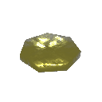 |
3d91c5555db0325459c1f95dedc73760 | $item_ancientcoin | Ancient Coin | Material | A relic of a lost age. Its surface still bears the trace of mysterious symbols. |
| AncientGemstoneBlack 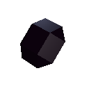 |
24abcb153d246b7078e7b824d1204ece | $item_ancientgemstone_black | Draumyx | Material | A dark, opaque gem with a smooth and polished surface. |
| AncientGemstoneGreen 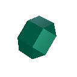 |
7e84a38a7414f45adb7b37d1e3356416 | $item_ancientgemstone_green | Grimvarn | Material | A striking green gem, the colour reminiscent of deep forests. |
| AncientGemstoneOrange 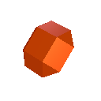 |
f193a3da40407dc738c67a2e5007bca4 | $item_ancientgemstone_orange | Solryth | Material | A vibrant orange stone, like a summer sunset. |
| AncientGemstonePurple 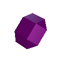 |
08de0850073b6ec35b62144e6f986ea7 | $item_ancientgemstone_purple | Veydris | Material | A rich purple stone, suitable for royalty. |
AncientSeed |
30790457c236149db9bffcf03654dca4 | $item_ancientseed | Ancient Seed | Misc | Held against your ear, you hear tiny whisperings within... |
| ArmorAshlandsMediumChest 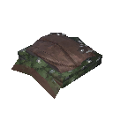 |
a989eeea9eadaa943bca7a89b6913c10 | $item_chest_medium_ashlands | Breastplate of Ask | Chest | The first man in Midgard knew how to guard his most vital organs, perhaps with a breastplate just like this one. |
| ArmorAshlandsMediumlegs 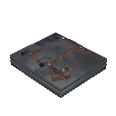 |
547ac0e99cef41f448c93129bdbd2196 | $item_legs_medium_ashlands | Trousers of Ask | Legs | The first man to roam Midgard preferred to tread lightly. Wearers of these trousers could learn a thing or two from him. |
| ArmorBerserkerChest 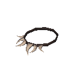 |
33a8bf087bdecef459c2749e6f57ca01 | $item_chest_berserker | Patterns of the Bear | Chest | If these intricate designs can protect warriors from distant lands, they can surely protect you too. |
| ArmorBerserkerLegs 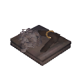 |
565dd6b2a59a0ad4782c98a18c5578c9 | $item_legs_berserker | Loincloth of the Bear | Legs | It covers all the important bits, but not much else. |
| ArmorBerserkerUndeadChest 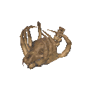 |
2e4026b814dc63b45aaa197c40ddbbb0 | $item_chest_berserker_undead | Vilebone Cage | Chest | Crafted from the shattered bones of a tormented bear. |
| ArmorBerserkerUndeadLegs 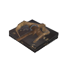 |
2e8adea24f4ed864fbc04fa8693f4309 | $item_legs_berserker_undead | Vilebone Drapes | Legs | Thick hides and bone fragments woven into a rugged skirt. |
ArmorBronzeChest |
7115ea97fbd2d4cc686f26e4f9b13d7d | $item_chest_bronze | Bronze Plate Tunic | Chest | A breastplate of hammered bronze. |
ArmorBronzeLegs |
3aa67ee8462d949478689f66652b5659 | $item_legs_bronze | Bronze Plate Leggings | Legs | Bronze greaves to shield your legs. |
ArmorCarapaceChest |
fc3146dae7922f749a7fd0c5e6301e3e | $item_chest_carapace | Carapace Breastplate | Chest | A breastplate crafted from the burnished carapace of a giant insect. |
ArmorCarapaceLegs |
62a2c4b1f8e559d4296200a69af62acb | $item_legs_carapace | Carapace Greaves | Legs | Leg guards of a rigid carapace. |
| ArmorDeepNorthHeavyChest 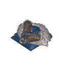 |
ae42f3e1ef347c3408873105646a5eca | $item_chest_heavy_deepnorth | Breastplate of the Protector | Chest | Fur and hide and metal all work in tandem to ward off an enemy's blows. |
| ArmorDeepNorthHeavylegs 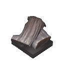 |
0767b6c0c918ce94cb2e455f994947cc | $item_legs_heavy_deepnorth | Trousers of the Protector | Legs | Heavy boots and trousers, to keep you warm as you trudge through deep snow. |
| ArmorDeepNorthMageChest 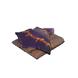 |
8b3ec9ae674df5a4a81ca16b8dddb1dd | $item_chest_mage_deepnorth | Robes of the Caller | Chest | Gold trimmed robes, fit for only the most powerful of mages. |
| ArmorDeepNorthMagelegs 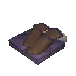 |
53b7a3acf02b4fa4ea3bdc63aae885eb | $item_legs_mage_deepnorth | Trousers of the Caller | Legs | Tight legwraps to keep the cold from touching your skin. |
| ArmorDeepNorthMediumChest 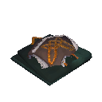 |
65a0b410776271b429cdb2a9f569d643 | $item_chest_medium_deepnorth | Chestpiece of the Vanguard | Chest | Expertly crafted leather armour, offering excellent protection without limiting a warrior's movements. |
| ArmorDeepNorthMediumlegs 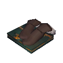 |
f9b7c20c60021dd46baa96065eec7a06 | $item_legs_medium_deepnorth | Trousers of the Vanguard | Legs | Warm trousers suitable for a cold climate. The boots offer excellent grip in the icy terrain. |
ArmorDress1 |
1d26936e3e88a3c41b3da914d3820f69 | $item_chest_dress1 | Plain Brown Dress | Chest | A plain brown dress, worn over a blue underdress. |
ArmorDress10 |
16eab1923789e954e9a695a601e7f825 | $item_chest_dress10 | Simple Undyed Dress | Chest | A simple dress for everyday wear. |
ArmorDress2 |
f51b59cf853ad6d4c826953a13860c79 | $item_chest_dress2 | Brown Dress with Shawl | Chest | A brown dress, with a matching shawl around the shoulders. Warm and stylish! |
ArmorDress3 |
b3028959788a1824793af1846acddfff | $item_chest_dress3 | Brown Dress with Beads | Chest | A fancy brown dress, with beads and silver fibula brooches. Excellent for a feast! |
ArmorDress4 |
236e13b226d2050439790a5de4f63df3 | $item_chest_dress4 | Plain Blue Dress | Chest | A plain blue dress, worn over a red underdress. |
ArmorDress5 |
caa6af13388a05d46a68322381876139 | $item_chest_dress5 | Blue Dress with Shawl | Chest | A blue dress, with a green shawl around the shoulders. Warm and stylish! |
ArmorDress6 |
746680564420fbe40893bd910ec681ed | $item_chest_dress6 | Blue Dress with Beads | Chest | A fancy blue dress, with beads and bronze fibula brooches. Excellent for a feast! |
ArmorDress7 |
304e22a9198661a4e8bcd85a124e5079 | $item_chest_dress7 | Plain Yellow Dress | Chest | A plain yellow dress, worn over a green underdress. |
ArmorDress8 |
d8a5b8faa565b6a4fb8d100ff9d2a787 | $item_chest_dress8 | Yellow Dress with Shawl | Chest | A yellow dress, with a purple shawl around the shoulders. Warm and stylish! |
ArmorDress9 |
23b0da22f7cdde64a9617ba555ad666e | $item_chest_dress9 | Yellow Dress with Beads | Chest | A fancy yellow dress, with beads and silver fibula brooches. Excellent for a feast! |
ArmorFenringChest |
21c42d5c971ce334e88b7a674b56aabe | $item_chest_fenris | Fenris Coat | Chest | The beast could draw deep breaths, so that its howl could be heard far across the land. |
ArmorFenringLegs |
a8d4a885a212a70428dd957e57824fd4 | $item_legs_fenris | Fenris Leggings | Legs | The legs of the beast were lean and strong, so that it could leap great strides. |
| ArmorFlametalChest 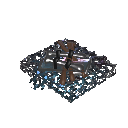 |
aec07a7ddc2752c4b8d5dd4ffc191a17 | $item_chest_flametal | Flametal Breastplate | Chest | This fusion of mysterious flametal and charred bones serves as a protective layer more resilient than anything you could ever find in Midgard. |
| ArmorFlametalLegs 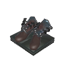 |
4118839cb60b26440a0cf241747cc5b2 | $item_legs_flametal | Flametal Greaves | Legs | Heavy trousers insulate against the heat, while solid greaves keep your shins safe from low blows. |
| ArmorGoldHeavyChestUncooked 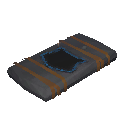 |
31e5e1d9f13d07d4f87f57ebcd70334f | $item_chest_heavy_gold_uncooked | Cast: Breastplate of the Protector | Material | This armour needs to be hardened with frost. |
| ArmorGoldHeavyHelmetUncooked 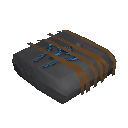 |
dd120c3261dfa2b40bc3e4a2f3d7db6f | $item_helmet_heavy_gold_uncooked | Cast: Helmet of the Protector | Material | This armour needs to be hardened with frost. |
| ArmorGoldHeavyLegsUncooked 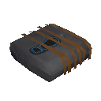 |
3c9d368a3f1e06d43b629a948d3768eb | $item_legs_heavy_gold_uncooked | Cast: Trousers of the Protector | Material | This armour needs to be hardened with frost. |
| ArmorGoldMageChestUncooked 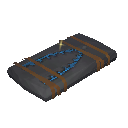 |
98276ef7ed3e35849a16c99ccaa0279b | $item_chest_mage_gold_uncooked | Cast: Robes of the Caller | Material | This armour needs to be hardened with frost. |
| ArmorGoldMageHelmetUncooked 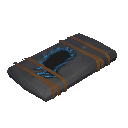 |
e41bfa58127afd746885a35a9a951993 | $item_helmet_mage_gold_uncooked | Cast: Headdress of the Caller | Material | This armour needs to be hardened with frost. |
| ArmorGoldMageLegsUncooked 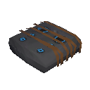 |
ccbd341db6e5bbe4bb6cf7732c0749d0 | $item_legs_mage_gold_uncooked | Cast: Trousers of the Caller | Material | This armour needs to be hardened with frost. |
| ArmorGoldMediumChestUncooked 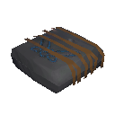 |
a919cc258e821294691e0367fc08192f | $item_chest_medium_gold_uncooked | Cast: Chestpiece of the Vanguard | Material | This armour needs to be hardened with frost. |
| ArmorGoldMediumHelmetUncooked 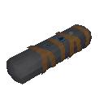 |
91ecb1ceaca772647ba7c29366aca74f | $item_helmet_medium_gold_uncooked | Cast: Hood of the Vanguard | Material | This armour needs to be hardened with frost. |
| ArmorGoldMediumLegsUncooked 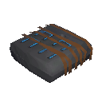 |
d57eac74d761d704abc2bb8174927a12 | $item_legs_medium_gold_uncooked | Cast: Trousers of the Vanguard | Material | This armour needs to be hardened with frost. |
| ArmorHarvester1 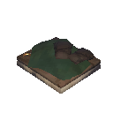 |
42649d20f9c48354a9b928cfa605f9bb | $item_chest_harvester1 | Harvest Tunic | Chest | When working the fields, it's important to dress accordingly. A shorter tunic lets in a cool breeze. |
| ArmorHarvester2 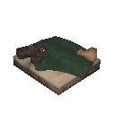 |
842849c6ad41e5643bd2fce620cecd22 | $item_chest_harvester2 | Harvest Dress | Chest | When working the fields, it's important to dress accordingly. This long dress keeps your knees covered while you work. |
ArmorIronChest |
a6abefa79fd5f4d18ac0123c58f9f42a | $item_chest_iron | Iron Scale Mail | Chest | An iron scale mail, this will turn all but the strongest of blows. |
ArmorIronLegs |
340aa8477da1f4277a48346379dd6dd2 | $item_legs_iron | Iron Greaves | Legs | Iron greaves to protect your legs. |
ArmorLeatherChest |
c560c07cd710649d0ba2473bec5dd389 | $item_chest_leather | Leather Tunic | Chest | A tunic made from animal hide. |
ArmorLeatherLegs |
3a4d67590eba143f1940afa963b69f7f | $item_legs_leather | Leather Trousers | Legs | They squeak a little when you walk. |
| ArmorLoxChest 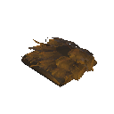 |
b7663c3132b289347b7897b49c04d5d8 | $item_chest_lox | Lox Fur Jacket | Chest | A heavy musk still clings to it. |
| ArmorLoxLegs 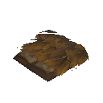 |
db20ea8ca81e2a542ac7c398c6f74c8f | $item_legs_lox | Lox Fur Trousers | Legs | Soft, silent and flexible. |
ArmorMageChest |
a8689ea9b3e988d47a81ed4d619fe8e1 | $item_chest_mage | Eitr-weave Robe | Chest | These artfully layered robes have spells and charms sewn into every seam and fold. |
| ArmorMageChest_Ashlands 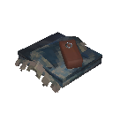 |
d761a647533c2684dab57fa701f7e533 | $item_chest_mage_ashlands | Robes of Embla | Chest | Imbued with the power of the first sorceress, these robes will grant a boon to any who seeks to wield the ancient art of magic. |
ArmorMageLegs |
2519bb778ad63ee47beb32dc6f9c8f4c | $item_legs_mage | Eitr-weave Trousers | Legs | The trousers worn by mages are always especially tight. Discomfort fuels the focus that is needed for magic... |
| ArmorMageLegs_Ashlands 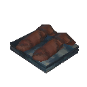 |
6f4302cbe61f4414893605f85f8c7e0b | $item_legs_mage_ashlands | Trousers of Embla | Legs | Whether or not the first sorceress actually wore trousers exactly like these, we can never know. |
ArmorPaddedCuirass |
e4154881a4bef442fa2498df23668a40 | $item_chest_pcuirass | Padded Cuirass | Chest | Finely wrought and strong enough to turn even the sharpest blades. |
ArmorPaddedGreaves |
3026a1d4f080c4693a15c16426d6a70e | $item_legs_pgreaves | Padded Greaves | Legs | Expertly crafted leg protection. |
ArmorRagsChest |
20aac000994044116956b2a111cc4311 | $item_chest_rags | Rag Tunic | Chest | Better than nothing. |
ArmorRagsLegs |
668335ca58aaf49079ea9561535e8bed | $item_legs_rags | Rag Trousers | Legs | A simple remedy for nudity. |
ArmorRootChest |
36b9c8cb3d69b1d4092efe5455f00648 | $item_chest_root | Root Harnesk | Chest | Finely wrought and strong enough to turn even the sharpest blades. |
ArmorRootLegs |
d972417c1ae71974095085f2ee994efc | $item_legs_root | Root Leggings | Legs | A light armour oddly woven together by ancient roots and bark. |
ArmorTrollLeatherChest |
36b8b5f1b73f64451b674edfc0e0395b | $item_chest_trollleather | Troll Leather Tunic | Chest | Trolls are hard to skin but their leather is tough and warm. |
ArmorTrollLeatherLegs |
0c826230f0bae4c80a534fc497aebac4 | $item_legs_trollleather | Troll Leather Trousers | Legs | Leggings of tough troll hide. |
ArmorTunic1 |
b1a1c9912ba2cf543ba10c466834d581 | $item_chest_tunic1 | Plain Blue Tunic | Chest | A plain blue tunic, brightly dyed. |
ArmorTunic10 |
8c4c8153a647a9e4cb5ce18e1649a272 | $item_chest_tunic10 | Simple Undyed Tunic | Chest | A simple tunic for everyday wear. |
ArmorTunic2 |
e831f7441565ec94e8ff2daacd542419 | $item_chest_tunic2 | Blue Tunic with Cape | Chest | A blue tunic, worn with a fashionable cape made from fine brown wool. |
ArmorTunic3 |
2d55254bfbdb49b469f231c0bfd6a38f | $item_chest_tunic3 | Blue Tunic with Beads | Chest | A blue tunic worn with beads and silver jewelry. Sure to attract attention from other vikings. |
ArmorTunic4 |
2a774e4fb45866c4d8f42a26bb7bc026 | $item_chest_tunic4 | Plain Red Tunic | Chest | A plain red tunic, brightly dyed. |
ArmorTunic5 |
e9caedfa19accc044a8a0a92616d71dd | $item_chest_tunic5 | Red Tunic with Cape | Chest | A red tunic, worn with a fashionable cape made from fine green wool. |
ArmorTunic6 |
0279b6c58ae66c74cad523e0ae0323a5 | $item_chest_tunic6 | Red Tunic with Beads | Chest | A red tunic worn with beads and bronze jewelry. Sure to attract attention from other vikings. |
ArmorTunic7 |
7926403d9b24a5b4eaf83a8b12f5ad0d | $item_chest_tunic7 | Plain Yellow Tunic | Chest | A plain yellow tunic, brightly dyed. |
ArmorTunic8 |
ef9c92e544930294782bbadc18da130e | $item_chest_tunic8 | Yellow Tunic with Cape | Chest | A yellow tunic, worn with a fashionable cape made from fine purple wool. |
ArmorTunic9 |
0152054a0f04c0646b93c8db1555b9ee | $item_chest_tunic9 | Yellow Tunic with Beads | Chest | A yellow tunic worn with beads and silver jewelry. Sure to attract attention from other vikings. |
ArmorWolfChest |
06a9f43e2319d4ff2a68a085a338f636 | $item_chest_wolf | Wolf Hide Chestpiece | Chest | A wolfskin jerkin, warm and wild-looking. It protects against the cold. |
ArmorWolfLegs |
8b0685cca4c214bbbb81c26a4ec46cb9 | $item_legs_wolf | Wolf Hide Trousers | Legs | Shaggy breeches of wolfskin. |
| ArrowBloodGold 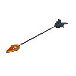 |
ac0d07970fad18147917e3c4fa00c6c1 | $item_arrow_bloodgold | Bloodgold Arrow | Ammo | An arrow forged of perhaps the hardest materials in this world... |
ArrowBronze |
8beb57971df834c7caabf0be6c847bb8 | $item_arrow_bronze | Bronzehead Arrow | Ammo | Sharper than flint. A sleek messenger of death. |
ArrowCarapace |
a64dfa84487f9f84fb07cd1ea8c6ee90 | $item_arrow_carapace | Carapace Arrow | Ammo | Heavy and pointy, this one's gonna hurt. |
| ArrowCharred 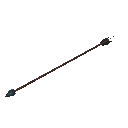 |
b169a52c199167b428c5608a687514f4 | $item_arrow_charred | Charred Arrow | Ammo | This arrow has been whittled into shape from a charred femur, and it's as hard as any metal. |
ArrowFire |
6e0b443c9754043b193065c60a3a4d2f | $item_arrow_fire | Fire Arrow | Ammo | This arrow burns whatever it pierces. |
ArrowFlint |
069f2df2bd02d42a5a81997c5c8e0c46 | $item_arrow_flint | Flinthead Arrow | Ammo | A hide-breaker with a head of flint. |
ArrowFrost |
8b1055a6e2e46234dabdbf32c6d4b78b | $item_arrow_frost | Frost Arrow | Ammo | A shard of piercing ice. |
ArrowIron |
0f77c8bd38729482c8e915807fb94891 | $item_arrow_iron | Ironhead Arrow | Ammo | Capped with iron and flighted with dark feathers. |
ArrowNeedle |
d40a210614586407989421b0e1d49dd6 | $item_arrow_needle | Needle Arrow | Ammo | The final stitch. |
ArrowObsidian |
23db0c1d3c953da4f865af7f9fca8ed5 | $item_arrow_obsidian | Obsidian Arrow | Ammo | A sliver of darkness. |
ArrowPoison |
500ef375ad2694c77ac18b27565a63eb | $item_arrow_poison | Poison Arrow | Ammo | A bitter sting from afar. |
ArrowSilver |
82916d01f3d67374eb95ae6ab022065e | $item_arrow_silver | Silver Arrow | Ammo | A needle to calm restless spirits. |
ArrowWood |
bf013984a97904e9b90ae0df1deba39b | $item_arrow_wood | Wood Arrow | Ammo | An arrow of sharpened wood. |
| AskBladder 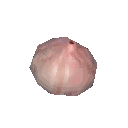 |
b23c3f53b46dbcc4f90b63b5e72547db | $item_askbladder | Asksvin Bladder | Material | An acidic smell still lingers. Prominently. |
| AskHide 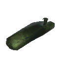 |
f3a80b05846da25418e883bd19ef7ccd | $item_askhide | Asksvin Hide | Material | This sturdy leather is thick, and still warm to the touch. |
| Asksvin_Bite | 0326019c446668643a7e4ac1c4a39747 | lox bite | lox bite | OneHandedWeapon | NULL |
| Asksvin_Headbutt | 7fa7026c3a90353488c2102dcd33319b | Dragon claw left | Dragon claw left | OneHandedWeapon | NULL |
| Asksvin_Pounce | 318766bcdc4e4464ba2e2ab67e026251 | lox bite | lox bite | OneHandedWeapon | NULL |
| Asksvin_Turnaround | 84556ab0d6640e14f9ff655ae9a8b50f | lox bite | lox bite | OneHandedWeapon | NULL |
| AsksvinCarrionNeck 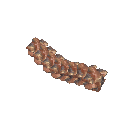 |
204b551c9a049968e81236ca5bab5a3d | $item_asksvincarrionneck | Asksvin Neck | Material | A neck in its final stage of life. |
| AsksvinCarrionPelvic 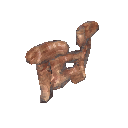 |
54a642ac4e527dd5dbd7c359351e6239 | $item_asksvincarrionpelvic | Asksvin Pelvis | Material | The pelvic bone of a four legged creature. |
| AsksvinCarrionRibcage 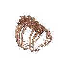 |
0d54ca922032a4d92a785a134b40ed38 | $item_asksvincarrionribcage | Asksvin Ribcage | Material | These ribs have already been stripped clean of any meat. |
| AsksvinCarrionSkull 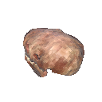 |
c489ab68882a75f74acaf2a130f7e5eb | $item_asksvincarrionskull | Asksvin Skull | Material | A thick skull, with room for a surprisingly large brain. |
| AsksvinEgg 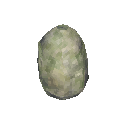 |
7583849c02f0d0d4a8b118878dbb94a9 | $item_asksvin_egg | Asksvin Egg | Misc | Hard as rock, yet you can sense the presence of something inside. This should be kept warm. |
| AsksvinMeat 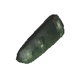 |
b8e749d3f5a45f34eaa9a6b4c521d34a | $item_asksvin_meat | Asksvin Tail | Material | Smells a bit smokey, even when raw. |
| aspect_bonemass_attack_aoe | 413459c4c82ad415f93454aac0660f5f | heal | heal | OneHandedWeapon | NULL |
| aspect_bonemass_attack_punch | ab1ac1ed17b504b32ba8e98c08c62094 | slap | slap | OneHandedWeapon | NULL |
| aspect_bonemass_attack_throw | 148c0c24f153f4415bcdd997f899046d | slime throw | slime throw | OneHandedWeapon | NULL |
| aspect_dragon_bite | 22f29387c5bde49c7b8e1a35ce5477c4 | Dragon claw left | Dragon claw left | OneHandedWeapon | NULL |
| aspect_dragon_claw_left | 5f7449495f2b64614914b319c32435dd | Dragon claw left | Dragon claw left | OneHandedWeapon | NULL |
| aspect_dragon_claw_right | 1c9642b34b05a41309d770d488eb282e | Dragon claw left | Dragon claw left | OneHandedWeapon | NULL |
| aspect_dragon_coldbreath | 241670a364a5f4f3daa8867ae6f820b7 | dragon breath | dragon breath | OneHandedWeapon | NULL |
| aspect_dragon_spit_shotgun | 70f030ecacaf44f2e8bbc39038587fe3 | cold ball | cold ball | OneHandedWeapon | NULL |
| aspect_dragon_taunt | f8aef23863d9940f79a9e3d3717d1a63 | scream | scream | OneHandedWeapon | NULL |
| aspect_Eikthyr_antler | fcc04f694e1f8434ca50ecd9d528cb8e | StagAttack1 | StagAttack1 | OneHandedWeapon | NULL |
| aspect_Eikthyr_charge | f40043add7024425da9e55d825ffea08 | StagAttack2 | StagAttack2 | OneHandedWeapon | NULL |
| aspect_Eikthyr_stomp | 8ce3e8475686041a3ac6ccb901200d40 | slap | slap | OneHandedWeapon | NULL |
| aspect_Fader_Bite | 2a37139af5e9c4f11bd8e3bcfeb0aa36 | Fader Bite | Fader Bite | OneHandedWeapon | NULL |
| aspect_Fader_Claw_Left | bcfca7240c28e48f5b2a754d1f5e4ab7 | Fader Claw Left | Fader Claw Left | OneHandedWeapon | NULL |
| aspect_Fader_Claw_Right | 12f0258a24edc48f6ab9d557074251e7 | Fader Claw Right | Fader Claw Right | OneHandedWeapon | NULL |
| aspect_Fader_Fissure | 8083fc889d2744e5a9a8500507be4c23 | Fader Fissure | Fader Fissure | OneHandedWeapon | NULL |
| aspect_Fader_Flamebreath | 14ca923d9526943b8aae50af9a0cd3d3 | Fader Firebreath | Fader Firebreath | OneHandedWeapon | NULL |
| aspect_Fader_Spin | a7216ec5d208248de8903841746d6da1 | Fader Spin | Fader Spin | OneHandedWeapon | NULL |
| aspect_Fader_WallOfFire | 82fcde78a73ba4ef580fa6a93154a17e | Fader Wall of Fire | Fader Wall of Fire | OneHandedWeapon | NULL |
| aspect_gd_king_rootspawn | 5f319c7829bd346ec88b4b74e2756ea5 | spawn | spawn | OneHandedWeapon | NULL |
| aspect_gd_king_scream | dff60dcaefd2041d6a41292cba80f6d4 | scream | scream | OneHandedWeapon | NULL |
| aspect_gd_king_shoot | c5074e21b8fd84c50a0859dd70fba117 | shaman attack | shaman attack | OneHandedWeapon | NULL |
| aspect_gd_king_stomp | 9da8b5880787b411ca37a729835324d3 | jaws | jaws | OneHandedWeapon | NULL |
| aspect_GoblinKing_Beam | a5f74111d892743bfbe64ee54d75e7b0 | dragon breath | dragon breath | OneHandedWeapon | NULL |
| aspect_GoblinKing_Nova | 96ae9b215a6f845ba95f40dd05c1cce5 | slap | slap | OneHandedWeapon | NULL |
| aspect_GoblinKing_Taunt | 46baf46f1b2014053999990737da1b0e | scream | scream | OneHandedWeapon | NULL |
| aspect_SeekerQueen_Bite | 790b40d06840048f796a519542365411 | slap | slap | OneHandedWeapon | NULL |
| aspect_SeekerQueen_PierceAOE | 0aaf4fd8f2b5542ebbb1d2e26997a2b9 | slap | slap | OneHandedWeapon | NULL |
| aspect_SeekerQueen_Rush | 0cc4abd7e50c94547ac11605cdb6b886 | slap | slap | OneHandedWeapon | NULL |
| aspect_SeekerQueen_Slap | 5f3d56b5f72334b7eb8733f0851ef11d | slap | slap | OneHandedWeapon | NULL |
| aspect_SeekerQueen_Spit | 015228e524fe745ef9eb0044f75ae1b8 | dragon breath | dragon breath | OneHandedWeapon | NULL |
AtgeirBlackmetal |
cadb835c9eea4fc4590601cfc7177b38 | $item_atgeir_blackmetal | Black Metal Atgeir | TwoHandedWeapon | A vicious hewing-axe of almost unbreakable black metal. |
AtgeirBronze |
da4341e5dd54346eb930a52286fab683 | $item_atgeir_bronze | Bronze Atgeir | TwoHandedWeapon | A true warrior's tool. |
| AtgeirGold 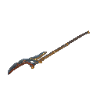 |
4c84504956168ed40875bdb0524df8eb | $item_atgeir_gold | Nord Atgeir | TwoHandedWeapon | The edge of this weapon is as deadly as it is shiny. |
| AtgeirGold_BloodLightning 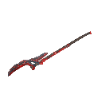 |
1c20a3c4e548f7a46a439f01683275e2 | $item_atgeir_gold_bloodlightning | Thunderblood Atgeir | TwoHandedWeapon | The heavens shall sound their praise as you make your enemies bleed. |
| AtgeirGold_FrostFire 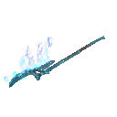 |
471a00f5b153db7488eb50eafe4b37f9 | $item_atgeir_gold_frostfire | Frostfire Atgeir | TwoHandedWeapon | Let the flames begin to devour, while the ice claims whatever remains. |
| AtgeirGoldUncooked 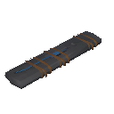 |
aeef4232b662e474ba8b4a54a960776e | $item_atgeir_gold_uncooked | Cast: Nord Atgeir | Material | This weapon needs to be hardened with frost. |
AtgeirHimminAfl |
7c7e3b180b070eb4c8547c0fce72fbd8 | $item_atgeir_himminafl | Himminafl | TwoHandedWeapon | It might not be a hammer, but Thor himself would still approve of this weapon. |
AtgeirIron |
eab62f3879789485283981a9ca1e7b3c | $item_atgeir_iron | Iron Atgeir | TwoHandedWeapon | Blood-drinker, skull-cracker, death-bringer. |
| AtgeirWood 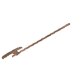 |
699027b6a79064f4bb965fd7de5102d6 | $item_atgeir_wood | Wooden Atgeir | TwoHandedWeapon | It might not hurt a lot, but it has reach! |
| Axe1h_JotunWarrior 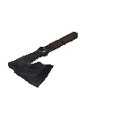 |
62a6ffd3dcec5df49830680053c0d53d | Club | Club | OneHandedWeapon | A crude but useful weapon. |
Axe1h_JotunWarrior 1 |
d429a63da34594329983e7d7f8b34f06 | Club | Club | Shield | A crude but useful weapon. |
| Axe2h_JotunWarrior |
400d16e932158e2419c8ee474faf781b | Club | Club | OneHandedWeapon | A crude but useful weapon. |
| AxeBerzerkr |
9032ef841f95cb040b8a7915e25e3e30 | $item_axe_berzerkr | Berserkir Axes | TwoHandedWeapon | Let your rage take over and face the slaughter. |
| AxeBerzerkrBlood |
167f2ac188c5b3e4392358eda04d2485 | $item_axe_berzerkr_blood | Bleeding Berserkir Axes | TwoHandedWeapon | The closer you are to death, the harder you are sure to hit. |
| AxeBerzerkrLightning |
7c70421e03ef6ca438730eb7227cbcb7 | $item_axe_berzerkr_lightning | Thundering Berserkir Axes | TwoHandedWeapon | Carnage spreads around you when you wield these axes, such that Thor himself would be proud. |
| AxeBerzerkrNature |
e8bfff273e1c6b4438ad79eae5a94d3f | $item_axe_berzerkr_nature | Primal Berserkir Axes | TwoHandedWeapon | Your most primal instincts take over, and the nature around you reaches out to aid you. |
AxeBlackMetal |
4a4b72e3bfc3c40b08d3ae37d7140468 | $item_axe_blackmetal | Black Metal Axe | OneHandedWeapon | A perfectly-balanced axe forged from dark metal with an emerald sheen. |
AxeBronze |
56812f11a8e904356a535bf3253afbbb | $item_axe_bronze | Bronze Axe | OneHandedWeapon | A bright and burnished blade, curved like a smile. |
| AxeEarly |
f48d374755a6a16469d0a4340b75444f | $item_axe_early | Early Axes | TwoHandedWeapon | Mighty weapons from long ago, from a time when the world was still young and incomplete... |
AxeFlint |
1c81915f9409743c2bfa81cc81337495 | $item_axe_flint | Flint Axe | OneHandedWeapon | Sharper than stone. |
| AxeGold |
a4f292f6794456d468342c7c1126ee5b | $item_axe_gold | Nord Axe | OneHandedWeapon | A finely detailed axe, for finely cutting down your enemies. |
| AxeGold_BloodLightning |
0b72d3ee21a1c6d4c8c8c976c7d29052 | $item_axe_gold_bloodlightning | Thunderblood Axe | OneHandedWeapon | As this axe cuts through wood and blood alike, a resounding thunderous crack shall be heard throughout the land. |
| AxeGold_FrostFire |
b7964978fdec58f479cf37b018935d7b | $item_axe_gold_frostfire | Frostfire Axe | OneHandedWeapon | Burn it all to the ground, or freeze it in an eternal moment of destruction... |
| AxeGoldUncooked |
5cb801fec0d037c499211ce7c0b0fa88 | $item_axe_gold_uncooked | Cast: Nord Axe | Material | This weapon needs to be hardened with frost. |
| AxeHead1 |
915c1d2761360944ca71a3465b589330 | $item_axehead1 | Curious Axe Head | Material | The metal glints oddly in the sunlight. Somehow, you know that it can never be complete on its own... |
| AxeHead2 |
0427d727a75bcb54fb6fc5fc94f64a9f | $item_axehead2 | Mysterious Axe Head | Material | What battles has this weapon borne witness to? You cannot see its past, only shape its future... |
AxeIron |
7b2067435f94d4aae9a5f01f78f2742a | $item_axe_iron | Iron Axe | OneHandedWeapon | Sharp and strong, a woodcutter's friend. |
AxeJotunBane |
6bbecce943fd39f47a985a4a7cfbe186 | $item_axe_jotunbane | Jotun Bane | OneHandedWeapon | Not even the giants of old could weather the poisonous bite of this weapon. |
AxeStone |
2c7e1807d4065470aa59a90cb64eddff | $item_axe_stone | Stone Axe | OneHandedWeapon | A crude axe for tree-felling. |
| AxeWood |
85d92cca1bf2f954db1af646618d90a6 | $item_axe_wood | Wooden Axe | OneHandedWeapon | If this axe could chop wood, wouldn't that be strange? |
| babyseeker_attack | 5bb41b726e1d0e25f95341d55b26f29b | Dragon claw left | Dragon claw left | OneHandedWeapon | NULL |
| BakedPoteitr |
b2b583857a268ee428f430620310438e | $item_bakedpoteitr | Baked Poteitr | Consumable | Neither boiled nor mashed nor in a stew. Still delicious though! |
| BakedPoteitrUncooked |
cef2c9b8b716c9948b462b23ecbe7cb1 | $item_bakedpoteitr_uncooked | Unbaked Poteitr | Material | Ready for the oven. |
BarberKit |
96340c9f77996c14d9898368a678204a | $item_barberkit | Barber Kit | Misc | A kit fit for the finest of barbers. |
| Barka_Backslam | 170a36d2d8a8ea241bec7be223c11d69 | Barka Backslam | Barka Backslam | OneHandedWeapon | NULL |
| Barka_HeavySwing | f21f7b2030e8b9949a4eee76bd426836 | Dragon claw left | Dragon claw left | OneHandedWeapon | NULL |
| Barka_SlamDrive | 8b9769c17807e654f9056f9cfb8eb4e8 | Dragon claw left | Dragon claw left | OneHandedWeapon | NULL |
| Barka_WhipFlurry | 0ba9b7b4c7c49be4e96ea6baf04992ff | Dragon claw left | Dragon claw left | OneHandedWeapon | NULL |
| Barka_WhipSlam | d752a5053caca12409d1c7fa88a33427 | Dragon claw left | Dragon claw left | OneHandedWeapon | NULL |
| BarkaBranch |
33027c5272980404784c58c52817559f | $item_barkabranch | Frozen Branch | Material | This piece of wood was once animated and alive. Still a strange, magical air clings to it. |
Barley |
657fac4f0dba146bbbb62b1ac4c93957 | $item_barley | Barley | Material | A bundle of barley. |
BarleyFlour |
8dac1e340a1874ce6acc249c3fcbe3d6 | $item_barleyflour | Barley Flour | Misc | Great for baking bread. |
BarleyWine |
eaef91dd432704e439143fae9f798069 | $item_barleywine | Fire Resistance Barley Wine | Consumable | Fortifies you against fire. |
BarleyWineBase |
5feac573c044c4bb48a3e46fd78d4b6b | $item_barleywinebase | Barley Wine Base: Fire Resistance | Material | Needs to be fermented. |
| BarrelRings |
3755bac6d216ec74b97c9b0fbbdeb0ea | $item_barrelrings | Barrel Hoops | Misc | These metal rings are perfectly round, suitable for holding a barrel together. Just add wood! |
| bat_melee | 657322cd3649149458c2fb380b92a476 | Bat melee | Bat melee | OneHandedWeapon | NULL |
Battleaxe |
55bcbb51967006f469e6c53149d951fa | $item_battleaxe | Battleaxe | TwoHandedWeapon | Skull-splitter, a warrior's joy. |
| BattleaxeBlackmetal |
1cfe9a1491bc846428ecb634ed49c93c | $item_battleaxe_blackmetal | Black Metal Battleaxe | TwoHandedWeapon | Green shall be the last thing your foes see before you cleave them in half. |
BattleaxeCrystal |
635eb2beadfc0be408d2f797fde7f1f2 | $item_battleaxe_crystal | Crystal Battleaxe | TwoHandedWeapon | It's see-through and tears through. |
| BattleaxeGold |
8ff2dc678b21c4d45808c83d97eb6f8d | $item_axe2h_gold | Nord Greataxe | TwoHandedWeapon | A mighty axe fit for a mighty warrior. |
| BattleaxeGold_BloodLightning |
c5f890cf042ba4048987c3bf52789d39 | $item_axe2h_gold_bloodlightning | Thunderblood Greataxe | TwoHandedWeapon | As you cleave your foes in two, their blood shall sing like a thunderstorm. |
| BattleaxeGold_FrostFire |
523d54c55c657e84abb2988ab4664326 | $item_axe2h_gold_frostfire | Frostfire Greataxe | TwoHandedWeapon | Strike your foes with a frozen inferno! |
| BattleaxeGoldUncooked |
3dc7fb5ef99299e4180e630cc124ac50 | $item_battleaxe_gold_uncooked | Cast: Nord Greataxe | Material | This weapon needs to be hardened with frost. |
| BattleaxeSkullSplittur |
131b6e64eaee51547a0b76f472190581 | $item_battleaxe_skullsplittur | Skull Splittur | TwoHandedWeapon | Will find skulls to split even in the thickest of mists. |
| BattleaxeWood |
0563f9e625bbec944b636a042ccbd60c | $item_battleaxe_wood | Wooden Battleaxe | TwoHandedWeapon | Intimidating, but not as intimidating as the real thing. |
Beard1 |
1f1bf61dd5ebb4b9b8462976b3a5bf99 | $customization_beard01 | Majestic | Customization | NULL |
Beard10 |
a5bac18ed3fb3e249a47c2f793a68b65 | $customization_beard10 | Top Braid | Customization | NULL |
Beard11 |
e420c9fc06d958f478ba84b14bdc0dca | $customization_beard11 | Facewarmer | Customization | NULL |
Beard12 |
86bc5ef9a69de494ab79e516f9124e28 | $customization_beard12 | Royal | Customization | NULL |
Beard13 |
026e06398e1bbda4ba5fe238786a8f31 | $customization_beard13 | Triplets | Customization | NULL |
Beard14 |
ef9339ba22ffae34184ea5566460fd9e | $customization_beard14 | Split Braid | Customization | NULL |
Beard15 |
ca5a51cd1ebd3f34f949a490041c7fe4 | $customization_beard15 | Mini Braid | Customization | NULL |
Beard16 |
c524f91f09a32fd4e8263c97084cdadc | $customization_beard16 | Stonedweller | Customization | NULL |
Beard17 |
26d969a0d37ae844485f0e091bebc3bb | $customization_beard17 | Neat | Customization | NULL |
Beard18 |
98ab9ef1e255bd8449125c42c40364bd | $customization_beard18 | Jarl Braids | Customization | NULL |
Beard19 |
467c2d5ada1cbf34dbe9eaf3ec37274b | $customization_beard19 | Bushy | Customization | NULL |
Beard2 |
de45bcd4d3d7f40dd93a0da5eb013eb8 | $customization_beard02 | Twin Braids | Customization | NULL |
Beard20 |
6ff726d226bfbf34b82f1740ad4531d9 | $customization_beard20 | Spiky | Customization | NULL |
Beard21 |
34c9d1df9f6e3d043b4c374d73bee3ab | $customization_beard21 | Tidy | Customization | NULL |
| Beard22 |
8d0cf9a4830f8f043bfe8983583046e6 | $customization_beard22 | Mustache | Customization | NULL |
| Beard23 |
ba83ab302cfa48b44a54b8f9cd1ad31e | $customization_beard23 | Crumb Catcher | Customization | NULL |
| Beard24 |
90bcda1aaa0249948ac61cef37ebd2a0 | $customization_beard24 | Waxed | Customization | NULL |
| Beard25 |
a03f9b39c5237be48aa44af19067405a | $customization_beard25 | Trimmed | Customization | NULL |
| Beard26 |
abfec936351df6d49b7782d83cc463af | $customization_beard26 | Handlebar | Customization | NULL |
Beard3 |
00976ddfe4fbb4f2293b4a75ec99cd58 | $customization_beard03 | Short | Customization | NULL |
Beard4 |
d2ee7b5d485af435eb396a190ab590f8 | $customization_beard04 | Straight | Customization | NULL |
Beard5 |
6fc4cc52c46124136b06e2ca8e96fbe7 | $customization_beard05 | Single Braid | Customization | NULL |
Beard6 |
60edc759002244cdea17f795c3e13131 | $customization_beard06 | Loose Braid | Customization | NULL |
Beard7 |
b1a9fb62b8a78a446918432826e3c449 | $customization_beard07 | Split Shave | Customization | NULL |
Beard8 |
837902e7a5974134f995bd8a0ccaf456 | $customization_beard08 | Thick | Customization | NULL |
Beard9 |
6ada1e76221e87943afd36bedc886a5d | $customization_beard09 | Trobadour | Customization | NULL |
| BeardNone | 3f5a0776b52a04539a901b771c0fceaa | $customization_nobeard | No Beard | Customization | NULL |
BeechSeeds |
d04c1f943742a4d8988c883b061bf668 | $item_beechseeds | Beech Seeds | Material | Plant them to grow a beech tree. |
| Bell |
fcb233ef1c1a23d45a6cc6498c3c29d1 | $item_bell | Bell | Misc | For whom does the bell toll? |
| BellFragment |
54f6cafe65f465141808126d5999a9d9 | $item_bellfragment | Bell Fragment | Material | This ancient fragment appears to be a piece of a broken bell... |
BeltStrength |
7690b97064b61444e80b63815cfae915 | $item_beltstrength | Megingjord | Utility | Gives the wearer superhuman strength. |
Bilebag |
cad73936b4378864f947c8066f4a49d9 | $item_bilebag | Bilebag | Material | Caustic bile drawn from the corpse of a gjall. |
BirchSeeds |
0ac7df79464d86a4480969ba2136bfbe | $item_birchseeds | Birch Seeds | Material | Plant them to grow a birch tree. |
| bjorn_bite | 7281b163b4cb6e944a099fb9b3e77f73 | bjorn bite | bjorn bite | OneHandedWeapon | NULL |
| bjorn_claws | 2074d22be58c5c944b762e05de107b24 | bjorn bite | bjorn bite | OneHandedWeapon | NULL |
| bjorn_slam | f41260addb6bb4a5fa85aa3d87cdeaf5 | slap | slap | OneHandedWeapon | NULL |
| bjorn_swipe_combo | a5e6a56373db44b32b779446d010b57f | bjorn bite | bjorn bite | OneHandedWeapon | NULL |
| bjorn_swipe_l | 3796070e04cd64539b773a937b0d4453 | bjorn bite | bjorn bite | OneHandedWeapon | NULL |
| bjorn_swipe_r | a9d0096790a364d49b0169576a1cfe8b | bjorn bite | bjorn bite | OneHandedWeapon | NULL |
| BjornHide |
51e79a6c65ac4a149b0b63d6ea844317 | $item_bjornhide | Bear Hide | Material | A thick and furry hide, coarse yet incredibly soft. |
| BjornMeat |
db8775edb13204d4da2320bebc9936a0 | $item_bjorn_meat | Bear Meat | Material | This fatty meat was once meant to sustain a body through hibernation. |
| BjornPaw |
af3a5f04d28e6614099040df7b44cc1b | $item_bjornpaw | Bear Paw | Material | Sharp claws suitable for picking berries or for dismembering. |
BlackCore |
c076f3cf2ba3238459de9b6c24c98169 | $item_blackcore | Black Core | Material | Filled to the brim with ancient power. |
BlackMarble |
a3bd8fd44a58a2708ad907d66ca9348f | $item_blackmarble | Black Marble | Material | A block of solid stone, seamed with shifting colors. |
BlackMetal |
4deafc8c9808b40bf96b4c14cfbe99b5 | $item_blackmetal | Black Metal | Material | A heavy bar of dark metal. |
BlackMetalScrap |
3138a938a4c5746658618ef4749a84d2 | $item_blackmetalscrap | Black Metal Scrap | Material | A twisted hunk of dark metal. |
BlackSoup |
ed5ebb1d6549d0846a49f710bdac90e1 | $item_blacksoup | Black Soup | Consumable | A perfect balance of sweetness and acidity. |
| Blackwood |
d64051042d7fdca4bb2bcf70be91bfc3 | $item_blackwood | Ashwood | Material | Wood hardened by fire and ash. |
| blob_attack_aoe | bc5aa506c3ebd44f8a07ea63fd3768aa | fart | fart | OneHandedWeapon | NULL |
| blob_frost_attack_aoe | c46cd5da77bd8f646b3bae02ff02b8e0 | fart | fart | OneHandedWeapon | NULL |
| blobelite_attack_aoe | 35de397e9482b4b5f9cccb324017f551 | fart | fart | OneHandedWeapon | NULL |
| blobLava_attack_aoe | 4c11ac7758929b0439e481629679eea7 | NULL | OneHandedWeapon | NULL | |
| blobmork_attack_aoe | c3b00a3bf564f4e1ea02f31b9b8f3b7c | fart | fart | OneHandedWeapon | NULL |
| blobtar_attack | 31b171d7fd7f19c1f9ccbbc196bc6a74 | fireballattack | fireballattack | OneHandedWeapon | NULL |
| BlobVial |
c7de6d2ae00c96c4997631db4134c266 | $item_blobvial | Corked Vial | Material | Thick enough to contain something volatile, yet fragile enough to be shattered. |
Bloodbag |
bb5b960fe2536af4c8e22eb71e1079ca | $item_bloodbag | Bloodbag | Material | The contents of a leech. Ick! |
| BloodGoldKey |
a7a3abd81d2211b41a873f73349916f4 | $item_bloodgoldkey | Intricate Key | Misc | If there's a key, then surely there must be a lock. |
BloodPudding |
7ab61fd34cba3429083bb343cbaa9cd0 | $item_bloodpudding | Blood Pudding | Consumable | It's bloody tasty. |
Blueberries |
329ca5791daef48e08f8dc65a15c737a | $item_blueberries | Blueberries | Consumable | Tiny but tasty. |
| boar_base_attack | 9fd5fe8ffd40c405ba7b8e7a73ad7ddd | boar attack1 | boar attack1 | OneHandedWeapon | NULL |
BoarJerky |
18194663ced4bbe42ba2b755fe44a4f2 | $item_boarjerky | Boar Jerky | Consumable | Lean and salty. |
| BogWitchKvastur_attack | b43d7d03ad26a744e835f46ed28886ba | jaws | jaws | OneHandedWeapon | NULL |
BoltBlackmetal |
ba50ac49b67505b4e823c7628b9866e6 | $item_bolt_blackmetal | Black Metal Bolt | Ammo | A sleek bolt of dark metal. |
| BoltBloodGold |
bd4706bb76b5f444b9b9eab715d7efac | $item_bolt_bloodgold | Bloodgold Bolt | Ammo | A bolt forged of perhaps the hardest materials in this world... |
BoltBone |
992daff46ffea2046b811a9683a3dcde | $item_bolt_bone | Bone Bolt | Ammo | A crude bolt of yellowed bone. |
BoltCarapace |
2f32cf8f5b65863489192cd0b143c651 | $item_bolt_carapace | Carapace Bolt | Ammo | A heavy and solid bolt. |
| BoltCharred |
559edadb35a74d04394d8c9b6259ad0e | $item_bolt_charred | Charred Bolt | Ammo | A sturdy bone from a forearm, shaped into a deadly bolt. |
BoltIron |
69e017212c834360f8f60a46f35a895e | $item_bolt_iron | Iron Bolt | Ammo | A sturdy iron missile. |
BombBile |
9719addab933f014f8e0b549af0705d4 | $item_bilebomb | Bile Bomb | OneHandedWeapon | Handle with care. |
| BombBlob_Frost |
377be9b5bb47af140b5c92a423886865 | $item_bombblob_frost | Blob Bomb: Frost | OneHandedWeapon | If you hold it for too long your hand might just freeze in place. |
| BombBlob_Lava |
83a6358ae26900c4a9179bc93fa51a7e | $item_bombblob_lava | Blob Bomb: Lava | OneHandedWeapon | The vial is hot in your hand, promising fiery destruction. |
| BombBlob_Morkhalla |
74343a95fbda8e044864d7409aeb1529 | $item_bombblob_morkhalla | Blob Bomb: Pulp | OneHandedWeapon | A dungeon is where the blob is. |
| BombBlob_Poison |
8bcfca87d0e24d44ea5f7eca37806d40 | $item_bombblob_poison | Blob Bomb: Poison | OneHandedWeapon | Should this vial break, caution is strongly advised. |
| BombBlob_PoisonElite |
01910eba964a77642bca5715c823fd9f | $item_bombblob_poisonelite | Blob Bomb: Elite Poison | OneHandedWeapon | Breathing in the fumes is not recommended. |
| BombBlob_Tar |
0ae7f32f7f985e54ab2ddbd7c2eb8215 | $item_bombblob_tar | Blob Bomb: Tar | OneHandedWeapon | The sticky substance within pulses, as if threatening you. |
| BombDynamite |
025724239ebaf8c4fa5067cd2d7c9d8a | $item_bomb_dynamite | Ember Charge | OneHandedWeapon | Trapped embers, ready to burst. Caution is advised. |
| BombLava |
5089eb84563c9b649b511335d79b4d5c | $item_lavabomb | Basalt Bomb | OneHandedWeapon | With enough heat, it solidifies upon explosion. |
BombOoze |
a871ff4af548a40f7aedb14cdb741146 | $item_oozebomb | Ooze Bomb | OneHandedWeapon | The stench is unbearable... |
| BombSiege |
db763e9c02b89144394e495a6bd9f525 | $item_catapult_ammo | Explosive Payload | Material | Best used with a catapult. Handle with care. |
| BombSmoke |
4cbe934cd4008624bb915a79246049c1 | $item_smokebomb | Smoke Bomb | OneHandedWeapon | Everyone knows you can't breathe in the smoke. |
BoneFragments |
f2e435d4bef9a4c77bcc33e1081b226f | $item_bonefragments | Bone Fragments | Material | A pile of shattered bones. |
| bonemass_attack_aoe | 6e95c953335a6479b9879398f19f6522 | heal | heal | OneHandedWeapon | NULL |
| bonemass_attack_punch | ee2479f8189384a23ba58d61479db0c1 | slap | slap | OneHandedWeapon | NULL |
| bonemass_attack_spawn | 654bc8f7b5dd14df5b10d813f4a555b1 | heal | heal | OneHandedWeapon | NULL |
| bonemass_attack_throw | d6d3120271c9c4e5da1495b578188cc5 | slime throw | slime throw | OneHandedWeapon | NULL |
| BonemawSerpent_bite | 594c2a19fffe22b469c5a48a8a9667fa | Serpent bite | Serpent bite | OneHandedWeapon | NULL |
| BonemawSerpent_breath | 9d808c9593726e9499cb1b8d8d1ce01b | Fallen Valkyrie Poison Breath | Fallen Valkyrie Poison Breath | OneHandedWeapon | NULL |
| BonemawSerpent_ram | 1da9c6e4ef674564c9e204df2ec71b42 | Serpent bite | Serpent bite | OneHandedWeapon | NULL |
| BonemawSerpent_spit | d92535704980ccb4eaa869a7cc3700b8 | bonemaw spit | bonemaw spit | OneHandedWeapon | NULL |
| BonemawSerpent_taunt | 369081d55f46eae4a8f918493f2de0ba | Serpent Taunt | Serpent Taunt | OneHandedWeapon | NULL |
| BoneMawSerpentMeat |
fcc76455055d28141ae30c5172553f75 | $item_bonemawmeat | Bonemaw Meat | Material | A tasty, white fish meat. Very good for your bones! |
| BonemawSerpentScale |
527b55aa052cd604bb54fb5cb39c4a76 | $item_bonemawscale | Bonemaw Scale | Material | It looks just like bone. Best not to question the anatomy of this creature too much... |
| BonemawSerpentTooth |
7e0f1c556d44b144c8dc6111c2bce82b | $item_bonemawtooth | Bonemaw Tooth | Material | This has caused the death of many a brave sailor. |
Bow |
10ef404d2efa74906adeafe7d433b347 | $item_bow | Crude Bow | Bow | A crude but functional bow. |
| BowAshlands |
811f697b71a83ab4483c449e33f65516 | $item_bow_ashlands | Ash Fang | Bow | Risen again from the ashes, this bow holds unyielding strength. |
| BowAshlandsBlood |
5488a5e0e9eb5cd41bec18121dc7ae4b | $item_bow_ashlandsblood | Blood Fang | Bow | Arrows loosed from this bow will tear into flesh with unmatched ferocity. |
| BowAshlandsRoot |
71d4e1d41f039fa468c4a8e41090664f | $item_bow_ashlandsroot | Root Fang | Bow | Like the twisting branch was made to seek the sun, this bow was made to seek the slaughter. |
| BowAshlandsStorm |
ed9b5f22d0c5f0e4d8f1d0155b1989f3 | $item_bow_ashlandsstorm | Storm Fang | Bow | Let your arrows fly as swift as the lightning strikes. |
BowDraugrFang |
f11393c8936ff3343a7057e99eca3a20 | $item_bow_draugrfang | Draugr Fang | Bow | Dark wood strung with glistening sinew. A vicious thing. |
BowFineWood |
64404a9b9aeb8495da8f72ba8ce744aa | $item_bow_finewood | Finewood Bow | Bow | A simple bow of strong and supple wood. |
| BowGold |
e3444109180cecb4f9dd6ad1c3f48686 | $item_bow_gold | Nord Bow | Bow | This bow shall find its target with a golden precision. |
| BowGold_BloodLightning |
f3b7c783838b90048b53e617122a3f37 | $item_bow_gold_bloodlightning | Thunderblood Bow | Bow | Lightning dances along the string, waiting to be unleashed. |
| BowGold_FrostFire |
5cabec476f1e73e4e81bbbbd435df24b | $item_bow_gold_frostfire | Frostfire Bow | Bow | Keep your head cool as you draw, and then let your fury loose with your arrows. |
| BowGoldUncooked |
7e500595dff5fa84f9ffddfae18661aa | $item_bow_gold_uncooked | Cast: Nord Bow | Material | This weapon needs to be hardened with frost. |
BowHuntsman |
970acb6ea7b4b154287b57b80c1dea44 | $item_bow_huntsman | Huntsman Bow | Bow | Finely worked and strung. A huntsman's joy. |
BowSpineSnap |
a5ab64bc00ff578458957e0ef037d244 | $item_bow_snipesnap | Spinesnap | Bow | Using this bow is backbreaking work but so worth it. |
Bread |
2fee923e08bd4408b81e6a502d2cad16 | $item_bread | Bread | Consumable | A tasty loaf of bread. |
BreadDough |
33a67e9024961ee43890f8fe350e3675 | $item_breaddough | Bread Dough | Material | Ready for the oven. |
Bronze |
629fd54829a1d446d8905f0b0eac9982 | $item_bronze | Bronze | Material | A strong alloy of copper and tin. |
BronzeNails |
c939491e12ed84c48b8085edc1559a75 | $item_bronzenails | Bronze Nails | Material | Used in construction of ships and furniture. |
BronzeScrap |
8b1f7b198496f60b4a6783b6bc81cd99 | $item_bronzescrap | Scrap Bronze | Material | It's old and oxidized but can be smelted and used again. |
BugMeat |
8e2d9221ae3c6914bbacafa6578f8bc1 | $item_bug_meat | Seeker Meat | Material | When you crack open their shells, the meat within is tender and succulent. |
| CandleWick |
8ca830245f3717047a045801d12c75dc | $item_candlewick | Candle Wick | Material | Steep these in something flammable for a long lasting and cosy light source. |
| CapeAsh |
ebfbafddb61bf9444bbec87bca920f4e | $item_cape_ash | Ashen Cape | Shoulder | Thin metal threads are woven into this cape to create an intricate pattern, like a destiny woven by the Norns themselves. |
| CapeAsksvin |
997e29853be30b94fbd38137f229ff0f | $item_cape_asksvin | Asksvin Cloak | Shoulder | This thick cape catches the wind, not unlike the sail of a ship. |
| CapeDeepNorth |
6f7f603faaf64f34dbbee5ed4e3e8c0e | $item_cape_deepnorth | Moose Hide Cape | Shoulder | A warm cape with fine details of spun gold. |
| CapeDeepNorthMage |
6e91c61cb8ed8b348afa2edba84157b0 | $item_cape_deepnorth_mage | Cape of the Caller | Shoulder | A strange magic is woven into this cape, making it both light and warm. |
CapeDeerHide |
39677b7a4296f4510ba3d42e9e6e69a1 | $item_cape_deerhide | Deer Hide Cape | Shoulder | Rustic chic. |
CapeFeather |
b0b5882b91c57294bb05b50f3ecd6d81 | $item_cape_feather | Feather Cape | Shoulder | Donning this cape makes you feel lighter, almost as if you could fly! |
CapeLinen |
34cc1b4dfde224cc88a1610d22f68212 | $item_cape_linen | Linen Cape | Shoulder | A simple traveler's cape. |
CapeLox |
14a4713ba74d84687948f933010e0805 | $item_cape_lox | Lox Cape | Shoulder | A pelt from one of the great beasts, thick and warm. |
CapeOdin |
a8650cb3f36c2f61e9bd01533123cfc2 | $item_cape_odin | Cape of Oden | Shoulder | Oden's finest warriors deserve the finest cloth. |
CapeTest |
d7dc88a37783f4be889bc1a59b6b20b6 | CAPE TEST | CAPE TEST | Shoulder | Da cape |
CapeTrollHide |
c140f11f24500f84d8c97166a571bfcf | $item_cape_trollhide | Troll Hide Cape | Shoulder | Trollskin is tough and supple. |
CapeWolf |
0d266be25589049dbb9c0f88c66f9a35 | $item_cape_wolf | Wolf Fur Cape | Shoulder | Wolves are natural survivors. This one was just unlucky. Now its pelt will warm you in the snow. |
Carapace |
76a31a5097c2f583b9833c44b6817b89 | $item_carapace | Carapace | Material | A plate of chitinous armour. |
Carrot |
f0d153fe9fad5419c8e5171d9e866947 | $item_carrot | Carrot | Consumable | An orange treat. |
CarrotSeeds |
faa8a6334d1fa4632accbd46705df2f9 | $item_carrotseeds | Carrot Seeds | Material | Plant these if you like carrots... |
CarrotSoup |
70c6897b051694e299261a1bf2b79bf6 | $item_carrotsoup | Carrot Soup | Consumable | A warm tasty soup made of mostly carrots. |
| Catapult_ammo |
a0c4bdbd614c6764a9ed10389ea853b7 | $item_catapult_training_ammo | Grausten Payload | Material | Best used with a catapult. Make sure nothing fragile is in the way. |
| Catapult_Ammo_BloodGold |
2ad9e569a5ea5694497d0835a8533ccf | $item_catapult_bloodgold_ammo | Bloodgold Payload | Material | Hit 'em hard and hit 'em bloody. |
| CelestialFeather |
14d140093d10af44f855de03cd448267 | $item_celestialfeather | Celestial Feather | Material | The only remnant of the fallen valkyrie's former self. |
| CeramicPlate |
d4fca34caba56be48936a88c01864155 | $item_ceramicplate | Ceramic Plate | Material | No matter how hot this gets, the other side of it remains strangely cool. |
Chain |
464ae55df98814e1c8cf5e61ef13589c | $item_chain | Chain | Material | A link of iron chain. |
| CharcoalResin |
ee3cbeecaeb309b4dad4c8f0a91bc333 | $item_charcoalresin | Charcoal Resin | Material | The resin from a tree that was set ablaze a long time ago. It's still ready to burn some more. |
| charred_bow |
3362d71873cbb9445b034bb8edecbd09 | Bow | Bow | Bow | A simple bow. |
| charred_bow_Fader |
9808a32af6e4a094885d2425ba4106f0 | Bow | Bow | Bow | A simple bow. |
| charred_bow_volley |
9083e07f5ae37b14792d838e0622eadd | Bow | Bow | Bow | A simple bow. |
| charred_bow_volley_Fader |
7633391e4000e524d9caab96eca0b499 | Bow | Bow | Bow | A simple bow. |
| Charred_Breastplate |
8c047f662b54b6449ab96ca74c72e77e | Iron plate armor | Iron plate armor | Chest | An iron scale mail, this will turn all but the strongest of blows. |
charred_dyrnwyn_greatsword_feint |
7778dae28a7c5000485a09523df74149 | Charred Sword | Charred Sword | TwoHandedWeapon | NULL |
charred_dyrnwyn_greatsword_swing |
d8061eeccc02655c2aa6d252284a5e32 | Charred Sword | Charred Sword | TwoHandedWeapon | NULL |
charred_dyrnwyn_greatsword_thrust |
a7910fba6e494dc4cac9f85225ccf400 | Charred Sword | Charred Sword | TwoHandedWeapon | NULL |
| charred_dyrnwyn_greatsword_thrustfeint |
19323b808214c2139a4c51d8056871d9 | Charred Sword | Charred Sword | TwoHandedWeapon | NULL |
charred_fader_greatsword_feint |
cf56e5a6e1d698d44995b42703d5b336 | Charred Sword | Charred Sword | TwoHandedWeapon | NULL |
charred_fader_greatsword_swing |
8287f322000ea4b48aa4947582795472 | Charred Sword | Charred Sword | TwoHandedWeapon | NULL |
charred_fader_greatsword_thrust |
cd46af00c7df31143aa65d6427701b78 | Charred Sword | Charred Sword | TwoHandedWeapon | NULL |
charred_fader_greatsword_thrustfeint |
99caa2ccc18cee6478949ddb88bd131c | Charred Sword | Charred Sword | TwoHandedWeapon | NULL |
| charred_greatsword_feint |
c5272a026ed2eed43a3fd36d8b487cf3 | Charred Sword | Charred Sword | TwoHandedWeapon | NULL |
charred_greatsword_swing |
f3697a5e015b3af44bb47e2624302bab | Charred Sword | Charred Sword | TwoHandedWeapon | NULL |
charred_greatsword_thrust |
e52a5a20db75d0a439ebe4afa7605fc8 | Charred Sword | Charred Sword | TwoHandedWeapon | NULL |
charred_greatsword_thrustfeint |
0aa47a81f6e42be4ebd863fd0857a2c3 | Charred Sword | Charred Sword | TwoHandedWeapon | NULL |
| Charred_Helmet |
55fc29da099fb054180c0028f8910bb3 | Iron plate armor | Iron plate armor | Helmet | An iron scale mail, this will turn all but the strongest of blows. |
| Charred_HipCloth |
58f5f85fffb3950499f70f0727298745 | Iron plate armor | Iron plate armor | Legs | An iron scale mail, this will turn all but the strongest of blows. |
| Charred_MageCloths |
41479a9cc7273894caf1f4490554d733 | Iron plate armor | Iron plate armor | Chest | An iron scale mail, this will turn all but the strongest of blows. |
| charred_magestaff_fire |
1f153ac8834cf574aafe3cf9c975768c | Bow | Bow | TwoHandedWeapon | A simple bow. |
| charred_magestaff_summon |
9b1f8670850cece4b99c9993cf1f65cc | Bow | Bow | TwoHandedWeapon | A simple bow. |
| charred_twitcher_scratch_l | 48f3aab9e48504e4598efdc9d311be96 | Charred Sword | Charred Sword | TwoHandedWeapon | NULL |
| charred_twitcher_scratch_r | 4020dee36fc4ba34d9573b3740510b7b | Charred Sword | Charred Sword | TwoHandedWeapon | NULL |
charred_twitcher_throw |
93e4a5e873a038845b8fcc7541242976 | Bow | Bow | Bow | A simple bow. |
| CharredBone |
a285a141370e6fb4680875951c523356 | $item_charredbone | Charred Bone | Material | Followed by the distinct smell of burnt meat. |
| CharredCogwheel |
2b4ca16583724ce4db9ddaccbcda1939 | $item_charredcogwheel | Charred Cogwheel | Material | This could be used for some clever machinery... |
| Charredskull |
69057bd421766c7909cc1dbfa9822d7e | $item_charredskull | Charred Skull | Material | The blackened skull of a long-dead warrior. It's unlikely that a proper burial would grant them any peace. |
chest_hildir1 |
eeb860786e2e317489c7016afb24c48c | $item_chest_hildir1 | Hildir's Brass Chest | Misc | Property of Hildir, please return if found. |
chest_hildir2 |
8758536ef2070fc4baeb47d42ae9327d | $item_chest_hildir2 | Hildir's Silver Chest | Misc | Property of Hildir, please return if found. |
chest_hildir3 |
07678f73266b82d40886f1e182069aa3 | $item_chest_hildir3 | Hildir's Bronze Chest | Misc | Property of Hildir, please return if found. |
ChickenEgg |
bcec93b30ca420544a74096f93a10be3 | $item_chicken_egg | Egg | Misc | Keep it warm to see what comes out.. but what came first, really? |
ChickenMeat |
c9db503a86111ee43b3be0e771d9757d | $item_chicken_meat | Chicken Meat | Material | All chickens bear the ancestral curse of being delicious. |
Chitin |
5b647cde73f714bd1a46fa69ba5a52a1 | $item_chitin | Chitin | Material | A shard of crustacean shell. |
Cloudberry |
e5976e7a821df4b60ae18f2609a42ba3 | $item_cloudberries | Cloudberries | Consumable | The gold of the forest. |
Club |
0942d0a620b2b4ba6b359495181c1f50 | $item_club | Club | OneHandedWeapon | A crude but useful weapon. |
Coal |
46fa21129465749248a5a9f11a47bd0c | $item_coal | Coal | Material | A lump of coal. |
Coins |
38e3fc6e8552046979e13b7967e862e4 | $item_coins | Coins | Material | <color=yellow>Valuable |
| CookedAsksvinMeat |
ff8bde0f9de82a9488c43593b6fc60de | $item_asksvin_meat_cooked | Cooked Asksvin Tail | Consumable | This meat has a potent and mature flavour, but is very tasty when grilled right. |
| CookedBjornMeat |
7c20744dc11660245b6eef46f60d9363 | $item_bjorn_meat_cooked | Cooked Bear Meat | Consumable | Tastes like victory. |
| CookedBoneMawSerpentMeat |
7f9c751e9667df443b25f401d3797611 | $item_bonemawmeat_cooked | Cooked Bonemaw Meat | Consumable | The boiling sea did nothing to this meat, but grilling it over the fire has given it a delightful crisp. |
CookedBugMeat |
148ebe0b336e15344b7acbd2441c1490 | $item_bug_meat_cooked | Cooked Seeker Meat | Consumable | Succulent white meat. A true delicacy. |
CookedChickenMeat |
0dda1ef0e466a7a40a8da37ef9c58d62 | $item_chicken_meat_cooked | Cooked Chicken Meat | Consumable | It tastes like chicken. |
CookedDeerMeat |
ac9b056b94d63ae41b4c50e49ba9d676 | $item_deer_meat_cooked | Cooked Deer Meat | Consumable | All that running paid off. |
CookedEgg |
8cb32b646b59626429259729d106fe2c | $item_egg_cooked | Cooked Egg | Consumable | Sunny side up! |
CookedHareMeat |
b8affeec3ffcb554698306b767d545d7 | $item_hare_meat_cooked | Cooked Hare Meat | Consumable | Stringy but flavorful. |
CookedLoxMeat |
d884967160e5046df8721d20c4456c81 | $item_loxmeat_cooked | Cooked Lox Meat | Consumable | A great hunk of tender meat, food fit for Valhalla! |
CookedMeat |
36aa14c035121460384c93ff52b04f01 | $item_boar_meat_cooked | Cooked Boar Meat | Consumable | An earthly taste. |
| CookedMooseMeat |
a8d52200e5b23c54694ebbf46265ec0a | $item_moose_meat_cooked | Cooked Moose Meat | Consumable | This meat is lean yet full of flavour. |
| CookedSealBlubber |
c547e53b1ff7c4149808dc3c5b7b6b96 | $item_blubber_cooked | Cooked Seal Blubber | Consumable | A chewy meat, with an aftertaste of remorse. |
| CookedVoltureMeat |
427f6415ea0a9bf46ab6735a03f69325 | $item_volture_meat_cooked | Cooked Volture Meat | Consumable | A chewy and somewhat dry meat. Some seasoning would probably make it taste better, but it'll fill your stomach regardless. |
CookedWolfMeat |
899ba48391c77a140b1db11142d19593 | $item_wolf_meat_cooked | Cooked Wolf Meat | Consumable | A wild taste. |
Copper |
a780bd461780849a7afccc525f927e2d | $item_copper | Copper | Material | A bar of pure copper ready to be worked. |
CopperOre |
9bf8377529ad449bdb1de851e9e29dbf | $item_copperore | Copper Ore | Material | Unrefined copper. Needs to be refined in a smelter. |
CopperScrap |
e15cae69b76c91edaaf45d5dd90a8bf4 | $item_copperscrap | Copper Scrap | Material | One person's scrap is another person's treasure. |
CrossbowArbalest |
f094bf961f9064e6daaaf4008ff69639 | $item_crossbow_arbalest | Arbalest | Bow | A slow but powerful weapon. |
| CrossbowGold |
3c95d939c9bce9f418ef8fcf7d549e05 | $item_crossbow_gold | Nord Crossbow | Bow | An incredible force is bound to this weapon, waiting to be unleashed. |
| CrossbowGold_BloodLightning |
627967be231e19649bb184c9f3f93b45 | $item_crossbow_bloodlightning_gold | Thunderblood Crossbow | Bow | The bow is pulled taut with unreleased power, like the air before a lightning strike. |
| CrossbowGold_FrostFire |
a9f26d30368e2594ab92e6d57bdbfd05 | $item_crossbow_frostfire_gold | Frostfire Crossbow | Bow | If your enemies don't freeze as you take aim, they are sure to do so once they are hit. |
| CrossbowGoldUncooked |
503fbfe754c9f1a479012f7e0df2939a | $item_crossbow_gold_uncooked | Cast: Nord Crossbow | Material | This weapon needs to be hardened with frost. |
| CrossbowRipper |
4e37868b1c496a04f93c1ee12282e3a5 | $item_crossbow_ripper | Ripper | Bow | Rips your foes apart, simple as that. |
| CrossbowRipperBlood |
483a950c53776e74ea40aef310fefbb2 | $item_crossbow_ripper_blood | Wound Ripper | Bow | Ready to rend your enemies to pieces. |
| CrossbowRipperLightning |
f763fe1302d170b48b81bfce8dd4406e | $item_crossbow_ripper_lightning | Storm Ripper | Bow | The bolts will tear through your enemies like a particularly nasty gale. |
| CrossbowRipperNature |
3475543841265874fa8285ef8f9fcf60 | $item_crossbow_ripper_nature | Root Ripper | Bow | If the bolt doesn't pin your foe in place, the roots surging up from the ground surely will. |
| CrownJewel |
33362eed6a0bfd449bc4bafee22fd092 | $item_crownjewel | Crown Jewel | Material | A strange power surges within this gem, unlike anything you've felt before. |
CryptKey |
fd7ff622246ebc94eb92385515cc06d3 | $item_cryptkey | Swamp Key | Misc | Partly covered in caked mud, it smells foetid. |
Crystal |
60f705fc57ed0445f85dc8d5373e3733 | $item_crystal | Crystal | Material | A shard of crystal from deep within the earth. |
Cultivator |
b1dab29aa3c2544eeaa48e64ca4db4dc | $item_cultivator | Cultivator | Tool | A farming tool for tilling soil. |
| CuredSquirrelHamstring |
0f1033bf2de610d42861cdfe9c7127f4 | $item_curedsquirrelhamstring | Cured Squirrel Hamstring | Material | Elastic and strong. This tendon must have come from a quick and agile animal. |
Dandelion |
5faa3f669faaa4151bd93a69ec7eeceb | $item_dandelion | Dandelion | Material | Some call it a weed, but it's pretty nonetheless. |
| Deathsquito_sting | 00c0f5a619d554347a1da9f950051226 | Wraith melee | Wraith melee | OneHandedWeapon | NULL |
DeerHide |
e8781dc863b7c41a79681458607070c7 | $item_deerhide | Deer Hide | Material | A cleaned hide from a deer. |
DeerMeat |
a3d4a31baa9fc0a41a44bca421f03a15 | $item_deer_meat | Deer Meat | Material | |
DeerStew |
dcfe096cbabc3c54589b7b1cee57d67a | $item_deerstew | Deer Stew | Consumable | Fall-apart tender. |
Demister |
aa3ae149fbf3709dfb2fefa4b11ecdf5 | $item_demister | Wisplight | Utility | A bound wisp to guide you through the thickest of mists. |
| dragon_bite | d245ef554a4b643e0bdfa49baa139535 | Dragon claw left | Dragon claw left | OneHandedWeapon | NULL |
| dragon_claw_left | 8fe1b275255cf415982d7ba8ac46a2c4 | Dragon claw left | Dragon claw left | OneHandedWeapon | NULL |
| dragon_claw_right | cd992350dd1dc401ca534951c9ef68af | Dragon claw left | Dragon claw left | OneHandedWeapon | NULL |
| dragon_coldbreath | 9abde2c085be349ef96bf28cde264879 | dragon breath | dragon breath | OneHandedWeapon | NULL |
| dragon_coldbreath_OLD | eceb9e032fc624fb69c5a6052998e402 | dragon breath | dragon breath | OneHandedWeapon | NULL |
| dragon_spit_shotgun | 312b751e3220f42dcacc1baab6443f99 | cold ball | cold ball | OneHandedWeapon | NULL |
| dragon_taunt | e308c171bdd344562a1232290c311332 | scream | scream | OneHandedWeapon | NULL |
DragonEgg |
230a3689154484e76bdd8a758d731b1c | $item_dragonegg | Dragon Egg | Misc | Far heavier than it looks, with a faint humming sound from within. |
DragonTear |
04c891adfbe3841a2bb528e1af63d626 | $item_dragontear | Dragon Tear | Misc | The last frozen tear of a dragon, pulsating with mysterious energy. |
| draugr_arrow |
57ba8d3b64b274154a3dd3c2dc30958d | Ironhead arrow | Ironhead arrow | Ammo | Fire it with a bow. |
draugr_axe |
32bb5e7b76e0f4644a764bb1a050b365 | Dragur axe | Dragur axe | OneHandedWeapon | NULL |
draugr_bow |
602dae747dd37401a8f2c80e06580b13 | Bow | Bow | Bow | A simple bow. |
draugr_sword |
f2bc7947da2b349e7a75a53e6b95d271 | Dragur axe | Dragur axe | OneHandedWeapon | NULL |
| Dverger_melee | e92321aae1f905c438be453d030dc347 | Club | Club | OneHandedWeapon | A crude but useful weapon. |
| Dverger_meleeAshlands | a6af385cee799c245b9320cd532966ca | Club | Club | OneHandedWeapon | A crude but useful weapon. |
| Dverger_meleeDeepNorth | 61b3f1cb167f38b458f952a6336a2829 | Club | Club | OneHandedWeapon | A crude but useful weapon. |
DvergerArbalest |
6b45eb62acd2eec46a77112c3f1e6655 | $item_crossbow_arbalest | Arbalest | Utility | A slow but powerful weapon. |
DvergerArbalest_shoot |
e0f811d558d9e6c41bb71cf89741f631 | $item_crossbow_arbalest | Arbalest | OneHandedWeapon | A slow but powerful weapon. |
DvergerArbalest_shootAshlands |
86ac6f05224db464d81ac221ac3adfbb | $item_crossbow_arbalest | Arbalest | OneHandedWeapon | A slow but powerful weapon. |
DvergerArbalest_shootDeepNorth |
eecb8b1e364253443845fc138163ef37 | $item_crossbow_arbalest | Arbalest | OneHandedWeapon | A slow but powerful weapon. |
DvergerHairFemale |
e71d0060850d95e439ff69ad7fa2ac10 | Iron plate armor | Iron plate armor | Legs | An iron scale mail, this will turn all but the strongest of blows. |
| DvergerHairFemale_Redhair |
e2ce31bfc43f2bd42aef9d705e077ab6 | Iron plate armor | Iron plate armor | Legs | An iron scale mail, this will turn all but the strongest of blows. |
DvergerHairMale |
43e1b3be5b08a5249be79b1380c8a2e4 | Iron plate armor | Iron plate armor | Helmet | An iron scale mail, this will turn all but the strongest of blows. |
| DvergerHairMale_Redbeard |
aa384de686ca97846a2a115e4c586ad4 | Iron plate armor | Iron plate armor | Helmet | An iron scale mail, this will turn all but the strongest of blows. |
| DvergerMistile | 5e5102718f7b6ec419212fcf9f532cf3 | Club | Club | OneHandedWeapon | A crude but useful weapon. |
| DvergerStaffBlocker | 3676cd49fce5ef14198cae523b8fa730 | Club | Club | OneHandedWeapon | A crude but useful weapon. |
DvergerStaffFire |
4ea01c47f61a3c043aa394071911eb09 | Club | Club | Utility | A crude but useful weapon. |
| DvergerStaffFire_clusterbomb | 3882cabde78f39241a4422b6d28e560a | Club | Club | OneHandedWeapon | A crude but useful weapon. |
| DvergerStaffFire_fireball | 3de4a8fce5e1056479eb22ab98f53b3d | Club | Club | OneHandedWeapon | A crude but useful weapon. |
DvergerStaffHeal |
b9d9f4ae04aeba341afc4726742f16fa | Club | Club | Utility | A crude but useful weapon. |
| DvergerStaffHeal_heal | 179ad29dfc99fb246883359f0e2bcd83 | Club | Club | OneHandedWeapon | A crude but useful weapon. |
DvergerStaffIce |
dc1ed86e8876ba24ebcf30dc83324128 | Club | Club | Utility | A crude but useful weapon. |
| DvergerStaffIce_icebolt | 94014ae880eddfa4b8739e35dcb9878d | Club | Club | OneHandedWeapon | A crude but useful weapon. |
| DvergerStaffNova | 881148d7e06462044a2376b170382148 | Club | Club | OneHandedWeapon | A crude but useful weapon. |
DvergerStaffSupport |
fe755b0754c63c74091a299fa49e7f49 | Club | Club | Utility | A crude but useful weapon. |
| DvergerStaffSupport_buff | 7a2350e8323bbf44ca4c4c6752443f4a | Club | Club | OneHandedWeapon | A crude but useful weapon. |
DvergerSuitArbalest |
54bb2436287b8134aa896388ec194b77 | Iron plate armor | Iron plate armor | Chest | An iron scale mail, this will turn all but the strongest of blows. |
| DvergerSuitArbalest_Ashlands |
936a0027de902cf4fa1b2cc7a0f3e372 | Iron plate armor | Iron plate armor | Chest | An iron scale mail, this will turn all but the strongest of blows. |
DvergerSuitFire |
571d7db520f98614896c68fd5f85533f | Iron plate armor | Iron plate armor | Chest | An iron scale mail, this will turn all but the strongest of blows. |
DvergerSuitIce |
c385206c919f5924ebc14a6f8953386f | Iron plate armor | Iron plate armor | Chest | An iron scale mail, this will turn all but the strongest of blows. |
DvergerSuitSupport |
7f1290eb6ee3c864db2d39f9387168f6 | Iron plate armor | Iron plate armor | Chest | An iron scale mail, this will turn all but the strongest of blows. |
DvergrKey |
4278925925bda4f46871dd8f85ee2429 | $item_dvergrkey | Sealbreaker | Misc | An object used to break a Dverger seal. |
DvergrKeyFragment |
12d409bb257391c4295fb01488496963 | $item_dvergrkeyfragment | Sealbreaker Fragment | Material | A fragment of a Dvergr sealbreaker. |
DvergrNeedle |
0b8daecf970794545a82337a838d61a1 | $item_dvergrneedle | Dvergr Extractor | Material | Looks like a perfect piece for piercing something... |
| DyrnwynBladeFragment |
210e6e42f80b00a4d88adc5022297007 | $item_Dyrnwyn_blade | Dyrnwyn Blade Fragment | Material | Parts of an old blade. If all the pieces were reassembled it could likely be made whole. |
| DyrnwynHiltFragment |
9bc163630246b344786f4f1aa32632c2 | $item_Dyrnwyn_hilt | Dyrnwyn Hilt Fragment | Material | The hilt of a long forgotten sword. Perhaps it could be reforged if one had all the pieces... |
| DyrnwynTipFragment |
9fb51565b6485a74cb2a1f83b2e8f9a9 | $item_Dyrnwyn_tip | Dyrnwyn Tip Fragment | Material | This shard of metal looks like the tip of a sword. One might be able to reforge the blade if more pieces are found... |
| Ectoplasm |
c1868dc3274db8c499bed2e2e7250a77 | $item_ectoplasm | Ectoplasm | Material | A restless essence of a once living thing... |
| Eikthyr_antler | 5f6691cb91bd6481fa2dfaf89d20006a | StagAttack1 | StagAttack1 | OneHandedWeapon | NULL |
| Eikthyr_charge | 845f2b3e31e79410d9add1c3e377bb98 | StagAttack2 | StagAttack2 | OneHandedWeapon | NULL |
| Eikthyr_flegs_OLD | 3dcfce8c032ac4be7bd94c90309b81bc | StagAttack1 | StagAttack1 | OneHandedWeapon | NULL |
| Eikthyr_stomp | c47f55c21f36ce5cda0afec8fe5a19c1 | slap | slap | OneHandedWeapon | NULL |
Eitr |
c935b777fe22aa3fbb27aa1b95a8d946 | $item_eitr | Refined Eitr | Material | This is the stuff of life, the poison that consumes itself. The Dvergr refine it to use in their esoteric designs. |
| Elaking_AttackClaw | 96a06bc6e1bc1cd46ad77a23b125d4e2 | jaws | jaws | OneHandedWeapon | NULL |
| Elaking_AttackJump | fc48f35c0ccde46a28edfa4e2ae288e3 | Charred Sword | Charred Sword | TwoHandedWeapon | NULL |
| Elaking_AttackLantern |
3611683f9cb95f64e89294e13931f032 | Torch | Torch | OneHandedWeapon | It brings light and warmth, drives back the darkness. |
| ElakingHairBundle |
a480bdf5ef626194b8f1e6b1de8c3feb | $item_elakinghairbundle | Elaking Hair Bundle | Material | The fur is dense, coarse, and surprisingly clean. |
| ElakingMole_AttackClaw | a5e9e14c81a41b646b2256b6ec05fb55 | jaws | jaws | OneHandedWeapon | NULL |
| ElakingMole_AttackClaw2 | 1ae0e5950f1697848b5b6bd97996f51c | jaws | jaws | OneHandedWeapon | NULL |
| ElakingMole_AttackSandcloud | b645e3881e8765648a43add5505e8d3e | StagAttack2 | StagAttack2 | OneHandedWeapon | NULL |
ElderBark |
cc0a7835a9cb7451bbe7c069a6cfe712 | $item_elderbark | Ancient Bark | Material | An ancient and sturdy material. |
Entrails |
98b417d6832371f4e8678518bc449829 | $item_entrails | Entrails | Material | A slimy length of something's insides. |
Eyescream |
56e913dddff620242a75fd1f9d0305f6 | $item_eyescream | Eyescream | Consumable | Crispy cool and creamy. |
| Fader_Bite | adfb271ffdb6fcb46bf80539e81f8142 | Fader Bite | Fader Bite | OneHandedWeapon | NULL |
| Fader_Claw_Left | b92b00b6c60411540af5777d67977be7 | Fader Claw Left | Fader Claw Left | OneHandedWeapon | NULL |
| Fader_Claw_Right | c318447231c59b041af59e8472d5d614 | Fader Claw Right | Fader Claw Right | OneHandedWeapon | NULL |
| Fader_Fissure | 3b7546e0d897851409bddbc1f0fee3ef | Fader Fissure | Fader Fissure | OneHandedWeapon | NULL |
| Fader_Fissure_Intense | b30478f16de2ca942a5f5b43385ed4b0 | Fader Fissure | Fader Fissure | OneHandedWeapon | NULL |
| Fader_Flamebreath | 22dfd184a1e09994b8e24e903d66601d | Fader Firebreath | Fader Firebreath | OneHandedWeapon | NULL |
| Fader_Jump | 6a9b9bc9f4ad7bd4799adfd3904c41fc | Fader Jump | Fader Jump | OneHandedWeapon | NULL |
| Fader_Jump_Left | 7a03fbcdb6778b440a72d70ab6b79d1a | Fader Jump | Fader Jump | OneHandedWeapon | NULL |
| Fader_Jump_Right | 0fc61ea4676887c43a4079b8fc2a66ff | Fader Jump | Fader Jump | OneHandedWeapon | NULL |
| Fader_Meteors | c32548c0b38704140a64e29306686438 | spawn | spawn | OneHandedWeapon | NULL |
| Fader_Meteors_Intense | 1f1568a4008508f46a4284a676a86600 | spawn | spawn | OneHandedWeapon | NULL |
| Fader_Roar | 34ab7f551429c6c499ab49b5c1a9ede4 | Fader Roar | Fader Roar | OneHandedWeapon | NULL |
| Fader_Roar_Intense | 185b29e240f163d4594f769d403ce762 | Fader Roar | Fader Roar | OneHandedWeapon | NULL |
| Fader_Spin | 2ee430e9c7048fa4fba651b5df5315c2 | Fader Spin | Fader Spin | OneHandedWeapon | NULL |
| Fader_Taunt | cc5ba45e6a47a804ab5ab332819927f3 | Fader Taunt | Fader Taunt | OneHandedWeapon | NULL |
| Fader_WallOfFire | 82365e798f70a124282bce92950f004a | Fader Wall of Fire | Fader Wall of Fire | OneHandedWeapon | NULL |
| FaderDrop |
8ae15f010326e2346af6d9a3d4473743 | $item_fader_drop | Fader Relic | Material | The mystical power will be revealed another day. |
| FaderEmber |
c595d8d9aa4cb814d902a9b177934428 | $item_faderember | Embers | Material | Every flying ember is a burning wish to repent. |
| fallenvalkyrie_claws | 0f51b524899ff3e44a6d117b22fb35a1 | Fallen Valkyrie Claws | Fallen Valkyrie Claws | OneHandedWeapon | NULL |
| fallenvalkyrie_poisonbreath | dace22f129b15d34b86385dae2c6c3bb | Fallen Valkyrie Poison Breath | Fallen Valkyrie Poison Breath | OneHandedWeapon | NULL |
| fallenvalkyrie_screech | 57115a4d622324449be5925311c22eed | Fallen Valkyrie Claws | Fallen Valkyrie Claws | OneHandedWeapon | NULL |
| fallenvalkyrie_spin | 0a6535dffcfff674cb212361b436130b | Fallen Valkyrie Aoe Spin | Fallen Valkyrie Aoe Spin | OneHandedWeapon | NULL |
| fallenvalkyrie_spit | 58950f6efdf6a88459753b2e76bf1aba | cold ball | cold ball | OneHandedWeapon | NULL |
| fallenvalkyrie_swoopattack | ce914c2d9ae7cfa49a810b32ba0da4b6 | Fallen Valkyrie swooping | Fallen Valkyrie swooping | OneHandedWeapon | NULL |
| fallenvalkyrie_taunt | bcfdfe5f431d150468d69e14c9015db1 | Fallen Valkyrie Claws | Fallen Valkyrie Claws | OneHandedWeapon | NULL |
| fallenvalkyrie_wingspin | ea704ecaeeb11ef479106f56902a8268 | Fallen Valkyrie Wingspin | Fallen Valkyrie Wingspin | OneHandedWeapon | NULL |
| FeastAshlands |
d3cb76c4fb6194049ab7bb687a06d7b4 | $item_feastashlands | Ashlands Gourmet Bowl | Consumable | NULL |
| FeastAshlands_Material |
08e4612866346a048b097a17eb8a3d00 | $item_feastashlands | Ashlands Gourmet Bowl | Material | It's hard to tell whether the steam coming off of this dish is because it's freshly cooked or because of the asksvin meat in it. Either way, the spiced meat together with the vineberries and fiddlehead sprouts is so delicious that it doesn't matter! |
| FeastBlackforest |
38d422c414096f146a80b9d7284040d8 | $item_feastblackforest | Black Forest Buffet Platter | Consumable | NULL |
| FeastBlackforest_Material |
3ba3d7d61b743b54c870182f4df16ef5 | $item_feastblackforest | Black Forest Buffet Platter | Material | You won't be able to resist this platter of delights from the Black Forest! Venison sirloin steaks are served together with spiced thistles and carrots, and the whole meal is tied together with delicious jams. Just have one more bite! |
| FeastDeepNorth |
44c3373a11af0d141aeaa30161ecdbe0 | $item_feastdeepnorth | Northern Morning Fare | Consumable | NULL |
| FeastDeepNorth_Material |
96e9d1cb83edb774ab068e113784dc02 | $item_feastdeepnorth | Northern Morning Fare | Material | Warming and filling, this meal will sustain you even during the coldest of days. Porridge and pancakes pair well with jams and sausages, making it hard not to come back for a second helping! |
| Feaster |
a3bab490b5cc0224aad4306eb9330f35 | $item_feaster | Serving Tray | Tool | Set the table with whatever food and drink you fancy, and impress your guests with a delicious feast. <color=yellow>Once a feast has been eaten of, it won't return any resources if dismantled. |
FeastMeadows |
130cdbcd94268d840a10a020b7260414 | $item_feastmeadows | Whole Roasted Meadow Boar | Consumable | NULL |
| FeastMeadows_Material |
1d50d70183508e34c83e8b29634a2d40 | $item_feastmeadows | Whole Roasted Meadow Boar | Material | A boar that has been roasted to perfection, glazed and served atop a bed of greens, with additional cuts of meat on the side. A feast like this is sure to fill your stomach and brighten your day! |
| FeastMistlands |
e869ee53dda18ad48b5090f7d1f77b06 | $item_feastmistlands | Mushrooms Galore la Mistlands | Consumable | NULL |
| FeastMistlands_Material |
e092529c5e893a84aa9c88fd8631a086 | $item_feastmistlands | Mushrooms Galore la Mistlands | Material | The time has come for mushroom enthusiasts to rejoice! Try different kinds of mushrooms, mushroom marinated seeker meat and mushroom-filled misthare, and don't miss out on the tasty sap dressing. |
FeastMountains |
cb68480f4b5f66d4dbda32c496a885be | $item_feastmountains | Hearty Mountain Logger's Stew | Consumable | NULL |
| FeastMountains_Material |
8548b33812e026644884026881fa5d50 | $item_feastmountains | Hearty Mountain Logger's Stew | Material | Gather around this steaming pot full of deliciousness and warm yourselves up again after a day out in the cold. The usually tough and chewey wolf meat has become tender enough to practically melt in your mouth, and the onions and carrots are made even tastier with exciting spices. |
| FeastOceans |
dde589dd8a57ade44b2cc573898dd674 | $item_feastoceans | Sailor's Bounty | Consumable | NULL |
| Item | AssetID | Token | English Name | Type | Description |
|---|---|---|---|---|---|
| FeastOceans_Material |
2c0d71118519a684a973f47e07d65b7c | $item_feastoceans | Sailor's Bounty | Material | Fish, fish, and more fish! And also serpent meat, cut to look like fish! Explore the flavours of the Ocean, along with some grilled greens for those still practicing their sea legs. |
| FeastPlains |
7b2307dc21f78e74892016ec30e58c48 | $item_feastplains | Plains Pie Picnic | Consumable | NULL |
| FeastPlains_Material |
9cb0bdc10822cd342a24b82b7d09c21d | $item_feastplains | Plains Pie Picnic | Material | There's nothing plain about this feast! Enjoy pies and loaves fresh from the oven, both sweet and savoury, and experience the culinary equivalent of a hug. |
| FeastSwamps |
bf977b83c23d5344c986bd6585f13e3e | $item_feastswamps | Swamp Dweller's Delight | Consumable | NULL |
| FeastSwamps_Material |
b38792e9b6f129c4c95f98453334440a | $item_feastswamps | Swamp Dweller's Delight | Material | Who knew that leeches were edible? With the correct preparation (lots of cooking and lots of seasoning) you will be able to serve them in this feast for the culinary brave. For those who have a sensitive stomach, there are also tasty skewers of sausages and turnips on the side. |
Feathers |
bebb7e6da0544448a9f24e2df73a9aa6 | $item_feathers | Feathers | Material | A small pile of feathers. |
| Fenring_attack_claw | ec5894f53c7fd4f3b9b122c5457eb104 | claw | claw | OneHandedWeapon | NULL |
| Fenring_attack_fireclaw | 38705e2f2e57cd1488c69959da1e5f10 | claw | claw | OneHandedWeapon | NULL |
| Fenring_attack_fireclaw_double | abaaefe605d1c0c21978b40b1c2249fe | claw | claw | OneHandedWeapon | NULL |
| Fenring_attack_flames | bc566a7d5208f1a4dbe4f1cc27924f87 | Fenring cultist flames | Fenring cultist flames | OneHandedWeapon | NULL |
| Fenring_attack_frost | 2f4c3961de321bc4f83e03afbaa832ef | Fenring cultist frost | Fenring cultist frost | OneHandedWeapon | NULL |
| Fenring_attack_iceclaw | b6032dfbd06979848b90ce128b9aa188 | claw | claw | OneHandedWeapon | NULL |
| Fenring_attack_iceclaw_double | 0ffa513dd33e705448e568e6b5ec8639 | claw | claw | OneHandedWeapon | NULL |
| Fenring_attack_IceNova | e7e63779910e84e4695c69aa584fac24 | Club | Club | OneHandedWeapon | A crude but useful weapon. |
| Fenring_attack_jump | ffe6adc795e60445a9675739493648c8 | claw | claw | OneHandedWeapon | NULL |
| Fenring_taunt | c9e12e9e31aba47a0b73577c2efe3cda | scream | scream | OneHandedWeapon | NULL |
Fiddleheadfern |
75e2b6e3f2f9e19418f5770108f4eed1 | $item_fiddleheadfern | Fiddlehead | Consumable | Veggies with a twist! |
| FierySvinstew |
f30b7b6fcc59b5e4ea9a2b9b6a906a8e | $item_fierysvinstew | Fiery Svinstew | Consumable | This musty stew is a necessity on every adventurer's menu. |
FineWood |
cdeae9814f3c8444da7fec7f99379fb6 | $item_finewood | Finewood | Material | High quality wood for fine carpentry. |
FirCone |
5b42e2dd2a7b5476e9c5d5e08d46d00c | $item_fircone | Fir Cone | Material | Plant it to grow a fir tree. |
| FirConeFrost |
96d42947870ab6b488772e09fcb0cd6f | $item_fircone_big | Timberwood Cone | Material | Plant it to grow a timberwood tree. |
FireworksRocket_Blue |
820b01d96d88ac74c8d764004b22504d | $item_fireworkrocket_blue | Blue Fireworks | Material | This rocket's blasting off again! |
FireworksRocket_Cyan |
dcb1a467b2fac994f869c39a6a14f9b1 | $item_fireworkrocket_cyan | Cyan Fireworks | Material | This rocket's blasting off again! |
FireworksRocket_Green |
86dd8492711812f4cbf827e426bcf87d | $item_fireworkrocket_green | Green Fireworks | Material | This rocket's blasting off again! |
FireworksRocket_Purple |
1c179263e8d05cf4483f995b58bd679f | $item_fireworkrocket_purple | Purple Fireworks | Material | This rocket's blasting off again! |
FireworksRocket_Red |
ba128b8806f4b3243b99cccf6b8736e3 | $item_fireworkrocket_red | Red Fireworks | Material | This rocket's blasting off again! |
FireworksRocket_White |
7e3f6b5c59a053c4a92c60be22c71730 | $item_fireworkrocket_white | Basic Fireworks | Material | This rocket's blasting off again! |
FireworksRocket_Yellow |
baa8c2b80d3c5ce4f826ee8a19abe465 | $item_fireworkrocket_yellow | Yellow Fireworks | Material | This rocket's blasting off again! |
Fish1 |
85876ca3f9d96427da5438cad121e247 | $animal_fish1 | Perch | Fish | A tasty whitemeat fish. |
Fish10 |
33b2003036163db44b27209d42e71cef | $animal_fish10 | Northern Salmon | Fish | This fish likes the water to be almost freezing cold. |
Fish11 |
52c4c7100d8893f459794ad5cdd8cad6 | $animal_fish11 | Magmafish | Fish | Some say this fish lays its eggs directly in molten lava! |
Fish12 |
425bdbe6a06e29a45912de3b4265d882 | $animal_fish12 | Pufferfish | Fish | Tasty when cooked right, but the flavour has a bit of a sting. |
Fish2 |
adbd4518e1ce44657b8a80b475c4dc07 | $animal_fish2 | Pike | Fish | A freshwater fish that needs a lot of seasoning. |
Fish3 |
637445584f6274764afedbd1d929aae8 | $animal_fish3 | Tuna | Fish | Chicken of the sea... |
Fish4_cave |
19cc544496fbaf7459111b384241adfc | $animal_fish4 | Tetra | Fish | Spending its whole life in the dark, it has no need for eyes. |
Fish5 |
3091e92a734dfc045b55be18ba4947b9 | $animal_fish5 | Trollfish | Fish | This fish is a nuisance in the local streams. |
Fish6 |
d0ad584794f0d91498c00029c8a1b773 | $animal_fish6 | Giant Herring | Fish | Fermented, this fish will smell worse than the swamp it came from. |
Fish7 |
4b20c33eab9902b409422d5bbc0e5c0e | $animal_fish7 | Grouper | Fish | Best served with lots of carbs! |
Fish8 |
f27a1b226dee1764380c62baf988c203 | $animal_fish8 | Coral Cod | Fish | It has seen some things... Some very haunting things... |
Fish9 |
a1e720528f354ff438aa5b8e5fd2dcc7 | $animal_fish9 | Anglerfish | Fish | The dangling light makes it easier to see that pretty little face! |
FishAndBread |
1ca0dc7c08027624cba437830b37dd2c | $item_fishandbread | Fish 'n' Bread | Consumable | Bounty from both land and sea. |
FishAndBreadUncooked |
8963ff3de160d474ca74ee6d38a88755 | $item_fishandbreaduncooked | Uncooked Fish 'n' Bread | Material | Ready for the oven. |
FishAnglerRaw |
c5d046f5c10fd3a4f8ee3ce684ca10c3 | $item_fish_raw | Raw Fish | Material | A good catch. |
FishCooked |
db3e079e90c464ee697420d194ce86e1 | $item_fish_cooked | Cooked Fish | Consumable | A tasty side of smoked fish. |
FishingBait |
e37dc5cd687284fbbaf5809154bd71f6 | $item_fishingbait | Fishing Bait | Ammo | Common dvergr fishing bait. Fishing rod sold separately. |
FishingBaitAshlands |
6d216f179995482458be753899834096 | $item_fishingbait_ashlands | Hot Fishing Bait | Ammo | Some fish already like it where the waters are warm, and this bait brings the temperature close to boiling. |
FishingBaitCave |
30b0666983b93544eb90ba1143192ea9 | $item_fishingbait_cave | Cold Fishing Bait | Ammo | This bait doesn't look like much, but it's a treat to fish that live where it's cold and dark. |
FishingBaitDeepNorth |
ea0f60a4f2f408a4aad3142effbba1f2 | $item_fishingbait_deepnorth | Frosty Fishing Bait | Ammo | It's not very nutritious, so the only fish that'll take this bait are the ones that are used to just eating ice. |
FishingBaitForest |
df15d51a956ef214e903020c9994796b | $item_fishingbait_forest | Mossy Fishing Bait | Ammo | Dead trolls in the forest often attract a fish or two, speed up the process with this bait! |
FishingBaitMistlands |
de3b73fa64c4f164d8df43dfd7af2203 | $item_fishingbait_mistlands | Misty Fishing Bait | Ammo | A bait to guide the fish to you through shrouded waters. |
FishingBaitOcean |
ed2f0c70f22952849a4a1c3f73e51924 | $item_fishingbait_ocean | Heavy Fishing Bait | Ammo | This bait sinks deep, deep enough to lure the fish swimming along the very bottom of the sea. |
FishingBaitPlains |
220c7db08efb2564d850e3f8f534ae47 | $item_fishingbait_plains | Stingy Fishing Bait | Ammo | You're not immune to deathsquito bites, and the fish here aren't immune to this snack! |
FishingBaitSwamp |
5ae03b6ae37de454da8e45587e180542 | $item_fishingbait_swamp | Sticky Fishing Bait | Ammo | It might smell foul, but the fish drawn to this bait are used to so much worse. |
FishingRod |
6a649b24a1e974b119f9c0c21e5e7d7f | $item_fishingrod | Fishing Rod | TwoHandedWeapon | Standard issue dvergr fishing rod. |
FishRaw |
8513f939481944f7e8a87433d82a26db | $item_fish_raw | Raw Fish | Material | A good catch. |
| FishSoup |
5b50bd17972a6804abf816ff535844a9 | $item_fishsoup | Fish Soup | Consumable | Swimming with flavour! |
FishWraps |
8f6025ebc8a304607b7992ccbb0863cb | $item_fishwraps | Fish Wraps | Consumable | Bread and fish, what more to wish? |
| FistBjornClaw |
748ab7f2ffa683e4082f8c07819dd06e | $item_fistweapon_bjorn | Paws of the Bear | TwoHandedWeapon | Made for tearing and rending. |
| FistBjornUndeadClaw |
d7f9e1d8e26807142aed2086727e368c | $item_fistweapon_bjorn_undead | Vilebone Maulclaws | TwoHandedWeapon | These claws will rend flesh and bone alike. |
FistFenrirClaw |
b58c49ecd3c952b4b8d08b99b322e71b | $item_fistweapon_fenris | Flesh Rippers | TwoHandedWeapon | If claws work for wolves, why not for a viking? |
| FistGold |
f34848cc00f323941ad33f2205a6a7eb | $item_fistweapon_gold | Nord Knucklechains | TwoHandedWeapon | Wrap your fists in the hardest of metals, to ensure your foes feel the strength behind your blows. |
| FistGold_BloodLightning |
cd13febae73d5a143b0952aaabc7e6ea | $item_fistweapon_gold_bloodlightning | Thunderblood Knucklechains | TwoHandedWeapon | A fury comes over you as you fight with these weapons, your blood roaring like thunder in your ears... It seems appropriate. |
| FistGold_FrostFire |
eb833979431647f489e9419204a31890 | $item_fistweapon_frostfire_gold | Frostfire Knucklechains | TwoHandedWeapon | A slight risk of frostbite is inevitable. |
| FistGoldUncooked |
c402cd25972ff8643b1e8e9f55990fa9 | $item_fistweapon_gold_uncooked | Cast: Nord Knucklechains | Material | This weapon needs to be hardened with frost. |
Flametal |
f1a3e356a26d14c49a3cd209f4686f67 | $item_flametal_old | Ancient Metal | Material | A withered metal from ancient times. No one knows what it was once used for. |
| FlametalNew |
12c6814a5502e95498a16b1a6f3b81eb | $item_flametal | Flametal | Material | According to legend, this metal was used by the gods themselves to craft powerful weapons. |
FlametalOre |
8a57592a7b78d854697636733ee09866 | $item_flametalore_old | Glowing Metal Ore | Material | A withered metal from ancient times. No one knows what it was once used for. |
| FlametalOreNew |
7efd1bbb7e4c48a47ac165fbc3c02980 | $item_flametalore | Flametal Ore | Material | Warm to the touch with glowing veins of strange metal. Needs to be refined in a blast furnace. |
Flax |
8f6761a3308984cf89fcbf65dc3d206c | $item_flax | Flax | Material | Unspun fibers from a flax plant. |
Flint |
5915af50ed981464a93e3ac7e89f25a8 | $item_flint | Flint | Material | Can be shaped into sharp blades. |
| FragrantBundle |
321b1dc5d6715884f9492f9d1629f333 | $item_fragrantbundle | Fragrant Bundle | Material | These plants carry a strong but pleasant scent. However, it's possible that not all creatures agree... |
FreezeGland |
0aab05dfb872994408ca4f1bed05351a | $item_freezegland | Freeze Gland | Material | This mysterious organ keeps a perfect temperature. |
| FreshSeaweed |
83ab75a5a6825014e8729ef5a7aa1cf2 | $item_freshseaweed | Fresh Seaweed | Material | The saltwater scent of this plant makes you think of the wide open ocean. |
| FrostCore |
1cb648de638c331f3b68fc2e9cc9d6d5 | $item_frostcore | Frostcore | Material | Terribly cold to the touch, filled with frozen energy. |
| Frostwood |
e003e72806d15a34b8ff85b8986f3fc8 | $item_frostwood | Timberwood | Material | A sturdy kind of wood, excellent for mighty halls. |
| FrozenFuel |
a5328f76de0b7b04dbbcead699eb0802 | $item_frozenfuel | Liquid Frost | Material | Magic has infused this ice, turning it into something else entirely. |
| FrozenKing_ChainFlurry | 717fdd9c229b14385a7748665a862e3f | FrozenKing ChainFlurry | FrozenKing ChainFlurry | OneHandedWeapon | NULL |
| FrozenKing_ChainRush | 813bd399a0a9f4ac49e9f1a385be0d4f | FrozenKing ChainRush | FrozenKing ChainRush | OneHandedWeapon | NULL |
| FrozenKing_ChainSlam_L | 2bca3422e721446e591a79dd74d8f005 | FrozenKing ChainSlam L | FrozenKing ChainSlam L | OneHandedWeapon | NULL |
| FrozenKing_ChainSlam_L_double | 889f9cb7d551941a7ba01a30a6641f43 | FrozenKing ChainSlam L double | FrozenKing ChainSlam L double | OneHandedWeapon | NULL |
| FrozenKing_ChainSlam_R | e6ca79c01ebdc4d7ab9c5cefcb93ac23 | FrozenKing ChainSlam R | FrozenKing ChainSlam R | OneHandedWeapon | NULL |
| FrozenKing_ChainSlam_R_double | db187ab773e8749dea7c43d629a35200 | FrozenKing ChainSlam R double | FrozenKing ChainSlam R double | OneHandedWeapon | NULL |
| FrozenKing_ChainSweep_L | 0f7d66e80244f43fda0ca30fd0dbea31 | FrozenKing ChainSweep L | FrozenKing ChainSweep L | OneHandedWeapon | NULL |
| FrozenKing_ChainSweep_R | c4c8de190136b4e2e92dc98c83e8cb94 | FrozenKing ChainSweep R | FrozenKing ChainSweep R | OneHandedWeapon | NULL |
| FrozenKing_ChainWhirl | 1279bed6ba1a24aa695b3ccd624dab4a | FrozenKing ChainWhirl | FrozenKing ChainWhirl | OneHandedWeapon | NULL |
| FrozenKing_DoubleSweep | 4f0e1a076052a452b836194d1664e477 | FrozenKing DoubleSweep | FrozenKing DoubleSweep | OneHandedWeapon | NULL |
| FrozenKing_P2_Summon_Bonemass | 7be34584589774d348bce08ddfb42552 | Fader Roar | Fader Roar | OneHandedWeapon | NULL |
| FrozenKing_P2_Summon_Eikthyr | be576d0c6ddf249cfad824854d5e3dba | Fader Roar | Fader Roar | OneHandedWeapon | NULL |
| FrozenKing_P2_Summon_Elder | 4a57c5735d902407ba87f818f4a6b68f | Fader Roar | Fader Roar | OneHandedWeapon | NULL |
| FrozenKing_P2_Summon_Fader | 8d623ee5bbbf34bbcb94befc342e4c13 | Fader Roar | Fader Roar | OneHandedWeapon | NULL |
| FrozenKing_P2_Summon_Moder | b6ccfa64d77a049f0b571ffbfcd98a1d | Fader Roar | Fader Roar | OneHandedWeapon | NULL |
| FrozenKing_P2_Summon_Queen | 7ea6784b98b104853850247aa79ddf72 | Fader Roar | Fader Roar | OneHandedWeapon | NULL |
| FrozenKing_P2_Summon_Yagluth | 0783bfc78cbe6460fb27008527d33aed | Fader Roar | Fader Roar | OneHandedWeapon | NULL |
| FrozenKing_P3_ChainSlam_L_double | a4be8e9f46543442ab128936d0159541 | FrozenKing ChainSlam L double | FrozenKing ChainSlam L double | OneHandedWeapon | NULL |
| FrozenKing_P3_ChainSlam_R_double | c309773f4062a486e80b1ddd8565d940 | FrozenKing ChainSlam R double | FrozenKing ChainSlam R double | OneHandedWeapon | NULL |
| FrozenKing_P3_ChainWhirl | a9059506362f7414f96ba526adde5578 | FrozenKing ChainWhirl | FrozenKing ChainWhirl | OneHandedWeapon | NULL |
| FrozenKing_Punch_AOE | 6320869e329474ce6bcd37795a51a4a2 | FrozenKing Punch AOE | FrozenKing Punch AOE | OneHandedWeapon | NULL |
| FrozenKing_SpikeRain | f6f71176d6c7e4edc9090bdaea190c7b | spawn | spawn | OneHandedWeapon | NULL |
| FrozenKing_tendrilspawn | b782d40b2572243db91ef23a9ede2876 | spawn | spawn | OneHandedWeapon | NULL |
| FrozenKingDrop |
04e5ec619d338374bbcf1b4eada1687e | $item_frozenking_drop | Sacrificial Blood | Material | The last essence of an end once foretold. |
| frysling_snowball_attack | c4d4bb3980289ff428201f44aa094fde | fireballattack | fireballattack | OneHandedWeapon | NULL |
| FW_ArmorBronzeChest |
8610d487e25660246a9e29ba5861aa80 | $item_chest_bronze | Bronze Plate Tunic | Chest | A breastplate of hammered bronze. |
| FW_ArmorBronzeLegs |
3f5b74927f67a844783fa75dd1828a64 | $item_legs_bronze | Bronze Plate Leggings | Legs | Bronze greaves to shield your legs. |
| FW_ArmorFenringChest |
bbf20cec080e7df46bb10fa7f0d3b86f | $item_chest_fenris | Fenris Coat | Chest | The beast could draw deep breaths, so that its howl could be heard far across the land. |
| FW_ArmorFenringLegs |
5c4cd6201e9d5dd41b550b552549e616 | $item_legs_fenris | Fenris Leggings | Legs | The legs of the beast were lean and strong, so that it could leap great strides. |
| FW_ArmorMageChest |
cb00bdd860aaf4747971f57012ae9178 | $item_chest_mage | Eitr-weave Robe | Chest | These artfully layered robes have spells and charms sewn into every seam and fold. |
| FW_ArmorMageChest_Ashlands |
dad7d82ddf0e93e46ab87bb50ae9cf58 | $item_chest_mage_ashlands | Robes of Embla | Chest | Imbued with the power of the first sorceress, these robes will grant a boon to any who seeks to wield the ancient art of magic. |
| FW_ArmorMageLegs |
c86acafd938326d42bb07607ffa259fe | $item_legs_mage | Eitr-weave Trousers | Legs | The trousers worn by mages are always especially tight. Discomfort fuels the focus that is needed for magic... |
| FW_ArmorMageLegs_Ashlands |
279608bd5cbf3c1409aca9693f8c4a91 | $item_legs_mage_ashlands | Trousers of Embla | Legs | Whether or not the first sorceress actually wore trousers exactly like these, we can never know. |
| FW_ArmorPaddedCuirass |
5750b71dafc5497419310a6a125c03a4 | $item_chest_pcuirass | Padded Cuirass | Chest | Finely wrought and strong enough to turn even the sharpest blades. |
| FW_ArmorPaddedGreaves |
cf318bd0f17472841b0a7fe8c701c1ae | $item_legs_pgreaves | Padded Greaves | Legs | Expertly crafted leg protection. |
| FW_ArmorTrollLeatherChest |
412df87aac70d084dba5974c6f7b0b4d | $item_chest_trollleather | Troll Leather Tunic | Chest | Trolls are hard to skin but their leather is tough and warm. |
| FW_ArmorTrollLeatherLegs |
a1e2f42eff4aacc43b3b075130d4161e | $item_legs_trollleather | Troll Leather Trousers | Legs | Leggings of tough troll hide. |
| FW_AxeBronze |
d78cf33bdbd3fa7489c190c4a8e35f53 | $item_axe_bronze | Bronze Axe | OneHandedWeapon | A bright and burnished blade, curved like a smile. |
| FW_BattleaxeCrystal |
33f80ce1c421b034da37272d70ecf333 | $item_battleaxe_crystal | Crystal Battleaxe | TwoHandedWeapon | It's see-through and tears through. |
| FW_BowDraugrFang |
344e0e263fcfa924fb953dd8b4cfed26 | $item_bow_draugrfang | Draugr Fang | Bow | Dark wood strung with glistening sinew. A vicious thing. |
| FW_CapeLinen |
d469299558946a0438637e5a1357a1c5 | $item_cape_linen | Linen Cape | Shoulder | A simple traveler's cape. |
| FW_CapeTrollHide |
d877c4a9c2078774cae282764a28bdea | $item_cape_trollhide | Troll Hide Cape | Shoulder | Trollskin is tough and supple. |
| FW_CapeWolf |
08e237c735daad24f83b0d3978689381 | $item_cape_wolf | Wolf Fur Cape | Shoulder | Wolves are natural survivors. This one was just unlucky. Now its pelt will warm you in the snow. |
| FW_HelmetBronze |
2f83a6b513266e547be7ca368ff96c4b | $item_helmet_bronze | Bronze Helmet | Helmet | This will help to keep your brains inside your skull. |
| FW_KnifeSilver |
cd854833d41dc4e4d853e8d1e17a6b8f | $item_knife_silver | Silver Knife | OneHandedWeapon | A savage piece of pain. |
| FW_KnifeSkollAndHati |
65181e951b1c2394b8007865ab4099c3 | $item_knife_skollandhati | Skoll and Hati | TwoHandedWeapon | Stab once for those who've betrayed you, and twice for those you hate. |
| FW_ShieldBlackmetalTower |
ea9ff3303d18fb34292d26769f9c146e | $item_shield_blackmetal_tower | Black Metal Tower Shield | Shield | A tower shield of gleaming dark metal. |
| FW_StaffFireball |
a652308c2f5679a4395143690a3b08cc | $item_stafffireball | Staff of Embers | TwoHandedWeapon | The sweltering heat of Muspelheim seems almost pathetic when compared to what this staff can do... |
| FW_StaffLightning |
6bdaadaf87986f443b07b3d3283d14a1 | $item_staff_lightning | Dundr | TwoHandedWeapon | What happens next may shock you. |
| FW_SwordBlackmetal |
e49df33f91fd0164f955c4ed8008d885 | $item_sword_blackmetal | Black Metal Sword | OneHandedWeapon | A thing of death and beauty. It catches the light with a greenish glow. |
| gd_king_punch | 5f41d6e6ee901442b983b095e5a3ff32 | jaws | jaws | OneHandedWeapon | NULL |
| gd_king_rootspawn | 8d2b39a40ce6f46789cb1e44e903cc40 | spawn | spawn | OneHandedWeapon | NULL |
| gd_king_scream | 205b97937acd5470686fd0b98a5d3303 | scream | scream | OneHandedWeapon | NULL |
| gd_king_shoot | 14310d9f513b94df0a04ef22e583b1c3 | shaman attack | shaman attack | OneHandedWeapon | NULL |
| gd_king_stomp | 4616b3405a45e4bcf921e1ad41c8790d | jaws | jaws | OneHandedWeapon | NULL |
| GemstoneBlue |
a6c6fc5d3c570ea4fbf3bf001f0932a4 | $item_gemstone_blue | Iolite | Material | Light is reflected sharply off of this gem, or does it come from within the stone itself? |
| GemstoneGreen |
12cbfd7bcb3e9674e976984802054fd7 | $item_gemstone_green | Jade | Material | This gem pulses with energy, almost as if it were a living thing. |
| GemstoneRed |
b7aced2e229ae604f8b46cd50e1cb1a1 | $item_gemstone_red | Bloodstone | Material | You wonder how many deals have been made to appease this gem. How many palms have bled onto it in exchange for its power? |
| GenericMoldUncooked |
7649a392f16985d15a96261ba9f882de | $item_smallparts_gold_uncooked | [item_smallparts_gold_uncooked] | Material | [item_smallparts_gold_uncooked_description] |
| Ghost_attack | b313132cabea440bdb1392287a8ecd7f | jaws | jaws | OneHandedWeapon | NULL |
GiantBloodSack |
b31cbe032e1294b4e9acd5d3d08b848c | $item_bloodclot | Blood Clot | Material | Be careful not to puncture this while you carry it... |
| gjall_attack_egg | db946f0dbe5d55ec7bec16f960030a85 | egg drop | egg drop | OneHandedWeapon | NULL |
| gjall_attack_shake | 1a14c704fe3993ed5816b4f179e61620 | gjall shake | gjall shake | OneHandedWeapon | NULL |
| gjall_attack_spit | d969e87c23bc50c4eb51dab95f7d4d08 | gjall spit | gjall spit | OneHandedWeapon | NULL |
| gjall_attack_taunt | ce25c6e6c188d534eb631056884c836b | gjall taunt | gjall taunt | OneHandedWeapon | NULL |
| GlowWorm |
f8a1b7c89eeae66f78744011e3dc0c49 | $item_glowworm | Luminous Larva | Consumable | Slimy, yet satisfying. |
GoblinArmband |
06e96020fb693474085fbb071d158a95 | Iron plate armor | Iron plate armor | Chest | An iron scale mail, this will turn all but the strongest of blows. |
GoblinBrute_ArmGuard |
73a2843ca9ffc4503b520bc4bb6756d6 | Iron plate armor | Iron plate armor | Chest | An iron scale mail, this will turn all but the strongest of blows. |
GoblinBrute_Attack |
b510f60da57bd46fdabadd8b9f707e6a | Brute sword | Brute sword | OneHandedWeapon | NULL |
GoblinBrute_Backbones |
a27a3615358d348d3bd068559c8b6aba | Iron plate armor | Iron plate armor | Helmet | An iron scale mail, this will turn all but the strongest of blows. |
GoblinBrute_ExecutionerCap |
c7304b296aa6f4ac39db256b57fcdda3 | Iron plate armor | Iron plate armor | Helmet | An iron scale mail, this will turn all but the strongest of blows. |
GoblinBrute_HipCloth |
9052b73f9daa64e14b1f09165bb6f379 | Iron plate armor | Iron plate armor | Legs | An iron scale mail, this will turn all but the strongest of blows. |
GoblinBrute_LegBones |
c0d3374bcb4e54d32a256c4b581f2572 | Iron plate armor | Iron plate armor | Utility | An iron scale mail, this will turn all but the strongest of blows. |
GoblinBrute_RageAttack |
7516cf743a77146128beeceb8090c35e | Brute sword | Brute sword | OneHandedWeapon | NULL |
GoblinBrute_ShoulderGuard |
51c59aae6933f4d30b4e04b69b56030d | Iron plate armor | Iron plate armor | Shoulder | An iron scale mail, this will turn all but the strongest of blows. |
GoblinBrute_Taunt |
63470e668c2614b5f9baf87cf3592667 | Brute taunt | Brute taunt | OneHandedWeapon | NULL |
GoblinBruteBros_Attack |
40b79cedeb5af604db528527ebd8d53c | Brute sword | Brute sword | OneHandedWeapon | NULL |
GoblinBruteBros_RageAttack |
3d4751a216e43b542becdfa21c0c52ac | Brute sword | Brute sword | OneHandedWeapon | NULL |
GoblinClub |
362f8f5e9ee974a12b73388221a73f66 | Club | Club | OneHandedWeapon | A crude but useful weapon. |
GoblinClubDeepNorth |
f2bc0ecfc42d6744ab0e8f1fbd07138d | Club | Club | OneHandedWeapon | A crude but useful weapon. |
GoblinHelmet |
92ffc30a007c2462ab40c4d3ab1007a7 | Iron plate armor | Iron plate armor | Chest | An iron scale mail, this will turn all but the strongest of blows. |
| GoblinKing_Beam | ec20124711e5447a0994bc0f192d6617 | dragon breath | dragon breath | OneHandedWeapon | NULL |
| GoblinKing_Meteors | d52174f2bb36c461eba11fe1bbb89d33 | spawn | spawn | OneHandedWeapon | NULL |
| GoblinKing_Nova | 38847819cc8e54cf4bc4c535a9d805f4 | slap | slap | OneHandedWeapon | NULL |
| GoblinKing_Taunt | 7ca4f542f3c864e9aa364f0b1239acd1 | scream | scream | OneHandedWeapon | NULL |
GoblinLegband |
a6b5097e73e7d4392948b14666612fbe | Iron plate armor | Iron plate armor | Chest | An iron scale mail, this will turn all but the strongest of blows. |
GoblinLoin |
36649e3b2f8e4410b8b8b5ccf58feb65 | Iron plate armor | Iron plate armor | Legs | An iron scale mail, this will turn all but the strongest of blows. |
| GoblinShaman_attack_fireball | a14bfe07efcd0be05a7a5d6cb1e5ff90 | fireballattack | fireballattack | OneHandedWeapon | NULL |
GoblinShaman_attack_fireball_hildir |
b23f1fcae56f1c24c83942264baed49b | fireballattack | fireballattack | OneHandedWeapon | NULL |
GoblinShaman_attack_poke |
958d28617470f9532b912ed533b6ab5c | Club | Club | OneHandedWeapon | A crude but useful weapon. |
| GoblinShaman_attack_protect | 0a1c6864a3f922bb5b88680d0c34c637 | heal | heal | OneHandedWeapon | NULL |
GoblinShaman_attack_protect_hildir |
15dfce5c1abcbce4fb58cf8c885bae83 | heal | heal | OneHandedWeapon | NULL |
GoblinShaman_Headdress_antlers |
dbff0ac32004e1f6b898deccb955ce35 | Club | Club | Helmet | A crude but useful weapon. |
GoblinShaman_Headdress_feathers |
0c48021c5d41c358bbed1851fd605f56 | Club | Club | Helmet | A crude but useful weapon. |
GoblinShaman_Staff_Bones |
e4a37fb0b0a036d3083c7508926be074 | Club | Club | Utility | A crude but useful weapon. |
GoblinShaman_Staff_Feathers |
1503de398b3ae20a6b651170e56b9870 | Club | Club | Utility | A crude but useful weapon. |
GoblinShaman_Staff_Hildir |
347a44b7e8027e8498654af68349fa94 | Club | Club | Utility | A crude but useful weapon. |
GoblinShoulders |
58e79653cfd674c7ab29f1c35fdb8045 | Iron plate armor | Iron plate armor | Chest | An iron scale mail, this will turn all but the strongest of blows. |
GoblinSpear |
7dd31b0d83183479b833033f7f4fc7e5 | Flint spear | Flint spear | OneHandedWeapon | [item_spearflint_description] |
| GoblinSpearDeepNorth |
be07970501054eb4ca41130646c3e60d | Flint spear | Flint spear | OneHandedWeapon | [item_spearflint_description] |
GoblinSword |
389a5777aa5f0462d82e10e1423064fd | Bronze sword | Bronze sword | OneHandedWeapon | Blood-drinker. A thirsty friend. |
GoblinSwordDeepNorth |
8376332c0a048d040ba17319c4b07899 | Bronze sword | Bronze sword | OneHandedWeapon | Blood-drinker. A thirsty friend. |
GoblinTorch |
4a3bc48a307934cae9a21bf4529be365 | Torch | Torch | OneHandedWeapon | It brings light and warmth, drives back the darkness. |
GoblinTorchDeepNorth |
33eaead3b3e456448be9d023cf516fa8 | Torch | Torch | OneHandedWeapon | It brings light and warmth, drives back the darkness. |
GoblinTotem |
9ab9cabcb5c234f858fa8ea5a57ed4f8 | $item_goblintotem | Fuling Totem | Misc | Channels the ancient power of Yagluth. |
| Gold |
808d6e720adf4504185411245cf5b0f7 | $item_gold | Bloodgold | Material | Precious metal, infused with the essence of a living thing. |
| GoldOre |
b4e7312b0aae43b45aab3f89ffe123e8 | $item_goldore | Petrified Tissue | Material | A hard and sturdy material with plenty of potential. Needs to be refined in a Blast Furnace. |
| GrapplingHook |
9f49ac81d972bea4eb0b997c155e7f37 | $item_graplinghook | Grappling Hook | Bow | For a dramatic entrance, or a swift retreat. |
| Grausten |
8e5b4299851e7dc4aa72c02651ee6c5b | $item_grausten | Grausten | Material | Porous yet sturdy. |
| Greydwarf_attack | ef4d1776034ae4dbf9f59d6a2b4c475c | jaws | jaws | OneHandedWeapon | NULL |
| Greydwarf_attack_frozen | e962d010b57717c4c95027589195cbae | jaws | jaws | OneHandedWeapon | NULL |
| Greydwarf_elite_attack | c6b1b5540b916474a8acbd82722d4611 | jaws | jaws | OneHandedWeapon | NULL |
| Greydwarf_shaman_attack | e221fe53e5ee94a76acb7f31e0f58d5b | shaman attack | shaman attack | OneHandedWeapon | NULL |
| Greydwarf_shaman_heal | a733050d39caf4954b5557a8183c2339 | heal | heal | OneHandedWeapon | NULL |
| Greydwarf_throw | 8ef042e11c74b449883bd86ac1006e99 | throw stone | throw stone | OneHandedWeapon | NULL |
| Greydwarf_throw_frozen | 95e08ffd1a190154ebb949e681ff1298 | throw stone | throw stone | OneHandedWeapon | NULL |
GreydwarfEye |
afeb72fbcd0a14c8989e204ad0ddd331 | $item_greydwarfeye | Greydwarf Eye | Material | The milky eyeball of a Greydwarf. |
| Greyling_attack | 2583d6faa5464866bbd0a2c4be6c9dc3 | jaws | jaws | OneHandedWeapon | NULL |
Guck |
6100467d04fb24fa987be76420fb63fb | $item_guck | Guck | Material | It smells like fermented fish. |
Hair1 |
bdb4b2446f035468c9c3a2d415dfed89 | $customization_hair01 | Windswept | Customization | NULL |
Hair10 |
8332e86fc4d6eab42b1837f315e77617 | $customization_hair10 | Side Swept | Customization | NULL |
Hair10_2 |
587c969f7e930d943a66b75ff03c3c96 | $customization_hair06 | Long and Loose | Customization | NULL |
Hair11 |
2c2af2aa6a549424fbe3b31708ec53f2 | $customization_hair11 | Long Braid | Customization | NULL |
Hair11_2 |
2047af13d72e7564d8ae73db0d92f8ec | $customization_hair06 | Long and Loose | Customization | NULL |
Hair11_3 |
c34f04fd8480476428d985e14c74a36b | $customization_hair06 | Long and Loose | Customization | NULL |
Hair12 |
11e812445e761b74b821fe48e6864dca | $customization_hair12 | Matronly | Customization | NULL |
Hair12_2 |
d32b769a3249f3543924337dd712d359 | $customization_hair06 | Long and Loose | Customization | NULL |
Hair13 |
285af731812c5904d877536514cf9277 | $customization_hair13 | Twin Braids | Customization | NULL |
Hair13_2 |
c08f92ee045c6de41b4a55bee86c0526 | $customization_hair06 | Long and Loose | Customization | NULL |
Hair13_3 |
50ece46e88b5f6943967320dd60bb16d | $customization_hair06 | Long and Loose | Customization | NULL |
Hair14 |
b8d8a49f2ea2ac1459e7de3d3df2e991 | $customization_hair14 | Speed Demon | Customization | NULL |
Hair14_2 |
ec57458fc2a56b14b95b1e36b72f2c9d | $customization_hair06 | Long and Loose | Customization | NULL |
Hair15 |
9dab1648c71a871448fbfe9a7244d24d | $customization_hair15 | Pulled Back Curls | Customization | NULL |
Hair15_2 |
d799e49358ce01b4c8d889c54c060d84 | $customization_hair06 | Long and Loose | Customization | NULL |
Hair15_3 |
fe71944010f4f5f4cb1f36adde5a14df | $customization_hair06 | Long and Loose | Customization | NULL |
Hair16 |
39a47dcb08785e240bd66b3de1112ab4 | $customization_hair16 | Gathered Braids | Customization | NULL |
Hair16_2 |
748f4a056b158ca429e38d2b5d0bb6c9 | $customization_hair06 | Long and Loose | Customization | NULL |
Hair17 |
6b8617fc31b8c644aafe122f5a6aff1e | $customization_hair17 | Neat Braids | Customization | NULL |
Hair17_2 |
3975826a3f8f9c841b5c4e53ce7cd4c2 | $customization_hair06 | Long and Loose | Customization | NULL |
Hair18 |
508ea8de7c8328c41a7be5b93f861fd8 | $customization_hair18 | Royal Braids | Customization | NULL |
Hair18_2 |
9b6432cfb1183c14594263b40e495bdc | $customization_hair06 | Long and Loose | Customization | NULL |
Hair19 |
f79e835d066e6ef46990e48d75083d57 | $customization_hair19 | Painter Curls | Customization | NULL |
Hair2 |
fe7ce3a247f6148288cae38254874d1d | $customization_hair02 | High Ponytail | Customization | NULL |
Hair20 |
f6ee1d2c286e260458484fb0d1ef9a1b | $customization_hair20 | Tidy Curls | Customization | NULL |
Hair21 |
db84a78edc77a38458a6c091b5e99fd7 | $customization_hair21 | Twin Buns | Customization | NULL |
Hair21_2 |
c087c670d8c27de42afe3211ac93fb28 | $customization_hair06 | Long and Loose | Customization | NULL |
Hair22 |
b90f30fb70c916d479c30bf16de92666 | $customization_hair22 | Single Bun | Customization | NULL |
Hair22_2 |
2ca2ba1d0a02a9b40b1133c59bb857c8 | $customization_hair06 | Long and Loose | Customization | NULL |
Hair23 |
7d4a36ed73504d948a124dfc34e1ab4a | $customization_hair23 | Short Curls | Customization | NULL |
Hair24 |
9eb1f9b16155bc142b99844fde199647 | $customization_hair24 | Shaved and Braided | Customization | NULL |
Hair24_2 |
47222983b1979df47a7a83ebd2223169 | $customization_hair06 | Long and Loose | Customization | NULL |
Hair24_3 |
be7dfb838529056469a581707f125632 | $customization_hair06 | Long and Loose | Customization | NULL |
Hair25 |
2e293f394b26c6b4486f63a28050f8bf | $customization_hair25 | Knot | Customization | NULL |
Hair26 |
5834c32eb03cb7345b7f35ea0c8a4270 | $customization_hair26 | Short Locs | Customization | NULL |
Hair27 |
ac059e8c634c002479feab95c8eb47d2 | $customization_hair27 | Strength Braids | Customization | NULL |
Hair27_2 |
97b80a751a013bf4486f92f15036f949 | $customization_hair06 | Long and Loose | Customization | NULL |
Hair27_3 |
7544521252808ec41a97c3a26d064c05 | $customization_hair06 | Long and Loose | Customization | NULL |
Hair28 |
2343d1e289a834b428b5b585d08f222a | $customization_hair28 | Merchant's Braid | Customization | NULL |
Hair28_2 |
7ab1ced226a01834f8d6dec3c4e2e502 | $customization_hair06 | Long and Loose | Customization | NULL |
Hair28_3 |
7320708dcac0dc8488a0b71ac2b4144a | $customization_hair06 | Long and Loose | Customization | NULL |
Hair29 |
839023a26120f7743938f9afba5373f7 | $customization_hair29 | Tucked Back | Customization | NULL |
Hair29_2 |
95ed8d59cf28b714dbf4e743bdacfe66 | $customization_hair06 | Long and Loose | Customization | NULL |
Hair3 |
d99d0a677936d422d9bcc2daf5fb411e | $customization_hair03 | Pigtails | Customization | NULL |
Hair3_2 |
a1f04451596e43b4a965e1f7d1eb56a9 | $customization_hair03 | Pigtails | Customization | NULL |
Hair3_3 |
6f9ead357bec9b446a5926d931e10667 | $customization_hair03 | Pigtails | Customization | NULL |
Hair30 |
85ab4367fda8f9d43ad84bd79657467d | $customization_hair30 | Loose Waves | Customization | NULL |
Hair30_2 |
b29bfa762d2adc64caffdc3571811648 | $customization_hair06 | Long and Loose | Customization | NULL |
Hair30_3 |
f9ae9a50ac344624b8b7fc34bb178e0c | $customization_hair06 | Long and Loose | Customization | NULL |
Hair31 |
d0a7cfe53ce76f847a60770f7c9136fa | $customization_hair31 | Gathered Locs | Customization | NULL |
Hair31_2 |
032d923dfdfda374aa9bcb22b9e5c807 | $customization_hair06 | Long and Loose | Customization | NULL |
Hair31_3 |
926a453bf2ad2054990e12f6d3446f1b | $customization_hair06 | Long and Loose | Customization | NULL |
| Hair32 |
2725e7418bf113e408749c6cea85eea5 | $customization_hair32 | Mullet | Customization | NULL |
| Hair32_2 |
e926b62899275eb44bdb862bc1b4a7c6 | $customization_hair06 | Long and Loose | Customization | NULL |
| Hair32_3 |
e269977abbae13e47bad195431a91dd0 | $customization_hair06 | Long and Loose | Customization | NULL |
| Hair33 |
45c9f28bc8b7cc241a18eafff45a1a67 | $customization_hair33 | Vinland Shave | Customization | NULL |
| Hair33_2 |
dd9826b997e7f814fb82473ee017d9a1 | $customization_hair06 | Long and Loose | Customization | NULL |
| Hair34 |
7a4e89e368b42fe479684c76c1aee881 | $customization_hair34 | Castellan | Customization | NULL |
| Hair34_2 |
be83c10b6e1cd5040b6ce5c0eb968da9 | $customization_hair06 | Long and Loose | Customization | NULL |
| Hair34_3 |
83f597a1a2a93b84a887dc677e2b9df6 | $customization_hair06 | Long and Loose | Customization | NULL |
| Hair35 |
7c82183163276554c9311abec7fe5bee | $customization_hair35 | Champion | Customization | NULL |
| Hair35_2 |
449e12be1bd17bf45bf1b6f10b5b3185 | $customization_hair06 | Long and Loose | Customization | NULL |
| Hair35_3 |
7eaa34a9e35022045860ba9da79d2be5 | $customization_hair06 | Long and Loose | Customization | NULL |
| Hair36 |
d0b5dc0ec9e7b744eadf41da03d97be0 | $customization_hair36 | Chronicler | Customization | NULL |
| Hair36_2 |
43d550695137c384ea721dca13cc7169 | $customization_hair06 | Long and Loose | Customization | NULL |
| Hair36_3 |
42e67d6c38d8e524ca34d1490379708e | $customization_hair06 | Long and Loose | Customization | NULL |
| Hair37 |
6ac30031816e2dc4d80c95200d5f3aaf | $customization_hair37 | Sunbringer | Customization | NULL |
| Hair37_2 |
d289663ad23948a4a82da460cef3c565 | $customization_hair06 | Long and Loose | Customization | NULL |
| Hair37_3 |
424cb8c41864d90408719151f79977c8 | $customization_hair06 | Long and Loose | Customization | NULL |
| Hair38 |
013d8e1dd73703d4db3245383130cfed | $customization_hair38 | Masculine | Customization | NULL |
| Hair38_2 |
983f7ef342816e247bdb23ddb778b0ce | $customization_hair06 | Long and Loose | Customization | NULL |
| Hair38_3 |
641cb90835c0a304fa49aee52650714c | $customization_hair06 | Long and Loose | Customization | NULL |
Hair4 |
f4c00d04f080c45f79ff894349df7388 | $customization_hair04 | Low Ponytail | Customization | NULL |
Hair4_2 |
570269aca718d134690dc4520c56fe57 | $customization_hair03 | Pigtails | Customization | NULL |
Hair4_3 |
d5030a8a7ef98804b9d07e8a0bb088ee | $customization_hair03 | Pigtails | Customization | NULL |
Hair5 |
d830417d02aba4255a3dd908294dbb70 | $customization_hair05 | Short | Customization | NULL |
Hair5_2 |
381ff0b0cf499b346b1006a4f6f4e074 | $customization_hair03 | Pigtails | Customization | NULL |
Hair6 |
c69d5327c53714761adb3c8ec55c52c2 | $customization_hair06 | Long and Loose | Customization | NULL |
Hair6_2 |
5f31a95d4c13dca47ba5b08523195612 | $customization_hair06 | Long and Loose | Customization | NULL |
Hair6_3 |
a67a82d47c8c6684192547edf440914b | $customization_hair06 | Long and Loose | Customization | NULL |
Hair7 |
7b00ca814b3b242478758bca00e8e4b2 | $customization_hair07 | Dragonslayer | Customization | NULL |
Hair7_2 |
3b1d7c3bf56bebd46a0f1c169cf67392 | $customization_hair06 | Long and Loose | Customization | NULL |
Hair8 |
457a97b11b48e7745b386daa75267b78 | $customization_hair08 | Parted | Customization | NULL |
Hair8_2 |
c51ccc2990c60c948801b1f872fdb922 | $customization_hair06 | Long and Loose | Customization | NULL |
Hair9 |
5c3f4c87eaf44e2418c5583b705de831 | $customization_hair09 | Old One-Eye | Customization | NULL |
Hair9_2 |
c7c00403e03ffd043b372c0325bdf359 | $customization_hair06 | Long and Loose | Customization | NULL |
| HairNone | 9f6e49e3558d842ab9dd3ec8b143d970 | $customization_nohair | No Hair | Customization | NULL |
Hammer |
461103794f2a242d2bbc1802f8deae58 | $item_hammer | Hammer | Tool | With this to your hand, you can raise high halls and mighty fortifications. |
HardAntler |
387f1ff8c82f149af84e133e431d41a3 | $item_hardantler | Hard Antler | Material | A piece of very hard antlers. |
HareMeat |
a88e301c3d1bda34bb17bc5964d39d9b | $item_hare_meat | Hare Meat | Material | The meat of a hare is scant but toothsome. |
| hatchling_spit_cold | 6a20fbedc3ba88246a79abbf4febcb4e | cold ball | cold ball | OneHandedWeapon | NULL |
| HatefulBlood |
0164e16d13b3cc745bb36ac9e290c6fb | $item_hatefulblood | Malicious Blood | Misc | There's something unsettling about this clotted, frozen mass. |
HealthUpgrade_Bonemass |
7aa2203d3d2bc4661b8917ff7fc09d1b | Bonemass heart | Bonemass heart | Consumable | [item_healthupgrade_description] |
HealthUpgrade_GDKing |
f3afb8cdd01ff46c6bbf9be347a170b7 | Elder heart | Elder heart | Consumable | [item_healthupgrade_description] |
| HelmetAshlandsMediumHood |
b629c3b0aac7ea848b0932c731c8ea72 | $item_helmet_medium_ashlands | Hood of Ask | Helmet | As the first man of Midgard, Ask knew it was important to not draw too much attention to himself. |
| HelmetBerserkerHood |
40efa98b412a32c40bba51a2f071e7c8 | $item_helmet_berserker | Headdress of the Bear | Helmet | Let the primal rage of a mighty bear consume you. |
| HelmetBerserkerUndead |
8176e9b405925b542adbd4235af9f0de | $item_helmet_berserker_undead | Vilebone Visage | Helmet | Inspiring fear in foes and courage in kin when worn. |
HelmetBronze |
28ef13913d6c74a7a9ebbc7c1f896498 | $item_helmet_bronze | Bronze Helmet | Helmet | This will help to keep your brains inside your skull. |
HelmetCarapace |
b6ca4af0912227b4f8eb8570f7e2c808 | $item_helmet_carapace | Carapace Helmet | Helmet | People might say you look like a giant ant. But they will only say it once. |
| HelmetCelebration |
2627bba1769e9794eb77f2fe1839d480 | $item_helmet_celebration | Celebratory Cap | Helmet | You simply can't help but feel happy when donning this cap! |
| HelmetCrownofValheim |
9df31df60ca5eef4a933a205d2c458dc | $item_helmet_crown_of_valheim | Crown of Valheim | Helmet | A glorious reward for the truly worthy. |
| HelmetDNHeavy |
fbdbe8b86cc7a8d4493756f44111dad9 | $item_helmet_heavy_deepnorth | Helmet of the Protector | Helmet | Embellished with the wings of victory. |
| HelmetDNMage |
615bed3156fd03e479ed5c1d573d8a3d | $item_helmet_mage_deepnorth | Headdress of the Caller | Helmet | The spirits of the land come as you beckon. Are they fooled by your disguise? |
| HelmetDNMediumHood |
118271436c0cba94fa751a5fd0d0c4db | $item_helmet_medium_deepnorth | Hood of the Vanguard | Helmet | Something to protect your neck from the elements as well as from the sharp teeth of the enemy. |
HelmetDrake |
0f660ef0d8f7a4aca8f0d258929f21c3 | $item_helmet_drake | Drake Helmet | Helmet | An elaborate and finely-crafted helm. |
HelmetDverger |
51cad84c5c6dcb743a28061412c85669 | $item_helmet_dverger | Dverger Circlet | Helmet | A portable perpetual lightsource for the dungeon explorer. |
HelmetFenring |
a9869bc727d96cc4e9fceb2c097bdf21 | $item_helmet_fenris | Fenris Hood | Helmet | The eyes of the beast were wise and knowing, so that it could measure the strength of a warrior in one glance. |
HelmetFishingHat |
6d5547653cd33a649b37f04f59bca860 | $item_helmet_fishinghat | Fishing Hat | Helmet | This catchy hat may only be reeled in by the most seasoned adventurers. |
| HelmetFlametal |
4e8abff568afc504ab17161d0ca99fe3 | $item_helmet_flametal | Flametal Helmet | Helmet | While you're wearing this helmet, your enemies will think twice before trying to bite your head off. |
HelmetHat1 |
c90b8454a6897c8429cff13689e83ec2 | $item_helmet_hat1 | Blue Tied Headscarf | Helmet | A blue practical headscarf. |
HelmetHat10 |
f0bba7684b2bfc34db4efaeaa4e8a624 | $item_helmet_hat10 | Simple Purple Cap | Helmet | A simple yet fashionable purple cap. |
HelmetHat2 |
2e8fcc5a0ecc9fc4f914612b772aff1b | $item_helmet_hat2 | Green Twisted Headscarf | Helmet | A fancy green headscarf. |
HelmetHat3 |
ded5c967d3ec2894ca6dfb442dca6c84 | $item_helmet_hat3 | Brown Fur Cap | Helmet | A warm fur cap, made from the finest leather. |
HelmetHat4 |
02570b0f063f8664cb48a63c1ad87bb4 | $item_helmet_hat4 | Extravagant Green Cap | Helmet | A warm cap for special occasions. |
HelmetHat5 |
e21e7a9b02dc457498a623fd3d1fea4b | $item_helmet_hat5 | Simple Red Cap | Helmet | A simple yet fashionable red cap. |
HelmetHat6 |
500602b4e1a3fe049b4668e597c04f82 | $item_helmet_hat6 | Yellow Tied Headscarf | Helmet | A practical yellow headscarf. |
HelmetHat7 |
0a7e33f8bffaba049b15649c31c0fa94 | $item_helmet_hat7 | Red Twisted Headscarf | Helmet | A fancy red headscarf. |
HelmetHat8 |
d7b88847e3f78ef4ea13076c8d0af8d6 | $item_helmet_hat8 | Grey Fur Cap | Helmet | A warm fur cap, made from the finest wool. |
HelmetHat9 |
48ad3c97a50f8504ba9d7324ca936af7 | $item_helmet_hat9 | Extravagant Orange Cap | Helmet | A warm cap for special occasions. |
HelmetIron |
79a671c21965643a38e2bc4e4d00b485 | $item_helmet_iron | Iron Helmet | Helmet | A helm of polished iron, fit for a hero. |
HelmetLeather |
657cf832e4b2346518de430288729d0d | $item_helmet_leather | Leather Helmet | Helmet | A hood of toughened leather. |
| HelmetLox |
a24bff370006b254b95f3f40e31048ab | $item_helmet_lox | Lox Fur Hood | Helmet | See the world like a lox might. |
HelmetMage |
5c009b006ca774a449b8eb07ce1afda8 | $item_helmet_mage | Eitr-weave Hood | Helmet | Sorcery shows itself in the eyes, so most mages wear cowls to disguise their occult pursuits. |
| HelmetMage_Ashlands |
f88f5cc609a057548b7a50b3b08dedc3 | $item_helmet_mage_ashlands | Hood of Embla | Helmet | Even the first sorceress valued the mystique of covering one's face. It is rumoured that honouring her this way will make your spells even more powerful. |
HelmetMidsummerCrown |
849835ce164971e488c916a88fdf0ee8 | $item_helmet_midsummercrown | Midsummer Crown | Helmet | Celebrate summer with a crown woven from flowers. |
HelmetOdin |
ab6a0683af4f3f405a8d361e3cd55ce2 | $item_helmet_odin | Hood of Oden | Helmet | Oden's finest warriors deserve the finest cloth. |
HelmetPadded |
d8a26e1f0602f4543837d15111877dc1 | $item_helmet_padded | Padded Helmet | Helmet | A snug fit, finely made. |
HelmetPointyHat |
528da81ad80780e4483354336a0d8cfa | $item_helmet_witchhat | Pointy Hat | Helmet | This hat is sure to add a bit of magical flair to any outfit. |
HelmetRoot |
6efdda74c5831554f8b722c1758245ce | $item_helmet_root | Root Mask | Helmet | Your head fits perfectly inside this knot of roots and bark. |
| HelmetRootCrown |
561c479f7828d4a41b245e2bf3fb42c9 | $item_helmet_rootcrown | Crown of Roots | Helmet | A painful, yet intricate headpiece. |
| HelmetStrawHat |
400c2fd8443a9704986075fa05ce3a79 | $item_helmet_strawhat | Straw Hat | Helmet | The perfect way to avoid sunstroke. |
| HelmetSweatBand |
f2ceba7ad23eac140934b8ade178d001 | $item_helmet_sweatband | Headband | Helmet | It feels a bit...moist. |
HelmetTrollLeather |
ec299b452222da34499118074b13df7d | $item_helmet_trollleather | Troll Leather Hood | Helmet | Trollskin is hard to work but makes exceptional armour. |
HelmetYule |
4f35e4474be174e56a626bf3aeaa50f9 | $item_helmet_yule | Yule Hat | Helmet | A red cap in the style of house gnomes. |
HildirKey_forestcrypt |
69035cabe31231a558b29e58d46c1c2e | $item_hildirkey1 | Hildir's Brass Key | Misc | It seems to be missing its owner... |
HildirKey_mountaincave |
37a08547a1a861442aff0e121089e7c2 | $item_hildirkey2 | Hildir's Silver Key | Misc | It seems to be missing its owner... |
HildirKey_plainsfortress |
5ab9efcb133d97fabb0dd394c54da8e4 | $item_hildirkey3 | Hildir's Bronze Key | Misc | It seems to be missing its owner... |
| hive_attack_aoe | f6c9f9f8ae2b74146867ff13ea07e59d | heal | heal | OneHandedWeapon | NULL |
| hive_attack_punch | b7de8fc8aab3bc7489dd00c3ccf7a315 | slap | slap | OneHandedWeapon | NULL |
| hive_attack_ranged | 985b1ad1632e8524398b14f495c9cdc7 | dragon breath | dragon breath | OneHandedWeapon | NULL |
| hive_attack_throw | c1e90441a98ab3b45aaa058927ca8a5b | slime throw | slime throw | OneHandedWeapon | NULL |
Hoe |
54cd57604854a4c51b661766ed6467c4 | $item_hoe | Hoe | Tool | A farmer's tool for working the earth. |
Honey |
52c96d1c5160f42de8aa6037a2cebf53 | $item_honey | Honey | Consumable | Sweet and tasty. |
HoneyGlazedChicken |
6378e41b996d3034da57eb410b5a389b | $item_honeyglazedchicken | Honey Glazed Chicken | Consumable | Grilled to perfection. Makes both eyes and mouths water. |
HoneyGlazedChickenUncooked |
e2b2f9f76359a624c87027d675fb2f98 | $item_honeyglazedchickenuncooked | Uncooked Honey Glazed Chicken | Material | Ready for the oven. |
| Hook |
44f634acc62e12244a3a236dbcca92ce | $item_hook | Hook | Material | A finely wrought item, with a gripping potential. |
| Ice |
8616295b36fb1fa4da535b69a2c120a7 | $item_ice | Ice | Material | So cold... |
| IceShoes |
cd7850bd5628aa046928ac90351a3ee6 | $item_iceshoes | [item_iceshoes] | Utility | [item_iceshoes_description] |
IceSkates |
75153d17941d2834387848d8c89905f4 | $item_iceskates | [item_iceskates] | Utility | [item_iceskates_description] |
| imp_fireball_attack | 876a3986a4672451aa1d0d8b3ac2d7e0 | fireballattack | fireballattack | OneHandedWeapon | NULL |
Iron |
d6f25cf704a7648b2b9caa518739196e | $item_iron | Iron | Material | A bar of pure iron ready to be worked. |
IronNails |
05e247e75a00846c1bd346a096c58158 | $item_ironnails | Iron Nails | Material | Needed for advanced construction projects. |
IronOre |
ba92f448744374974ad416cf2cb471da | $item_ironore | Iron Ore | Material | Unrefined iron. Needs to be refined in a smelter. |
Ironpit |
e969c91651727c9aabe95968511432da | $item_ironpit | Iron Pit | Material | An empty vessel waiting to be filled with firewood and kindling. |
IronScrap |
1c82e0b9f11de4e9c9ca7ffbc20b14fd | $item_ironscrap | Scrap Iron | Material | It's old and rusty but can be smelted and used again. |
| JotunHairFemale |
2a6fc1e1ea08d9345b59c63738f75d63 | Iron plate armor | Iron plate armor | Helmet | An iron scale mail, this will turn all but the strongest of blows. |
JotunHairMale |
4547647538d01f74c95f4b351613c947 | Iron plate armor | Iron plate armor | Helmet | An iron scale mail, this will turn all but the strongest of blows. |
JotunHairMale2 |
6228e1c11d4f73c4da400c0230e7628d | Iron plate armor | Iron plate armor | Helmet | An iron scale mail, this will turn all but the strongest of blows. |
| JotunHairMale3 |
3864703f4c19eeb4fa4d082f8ec6b96a | Iron plate armor | Iron plate armor | Helmet | An iron scale mail, this will turn all but the strongest of blows. |
JotunHairMale4 |
74afb08a9cc893445a0da32e1bc0ec8a | Iron plate armor | Iron plate armor | Helmet | An iron scale mail, this will turn all but the strongest of blows. |
JotunHairMale5 |
235ee402a9ea3004a95c253be0d9dc07 | Iron plate armor | Iron plate armor | Helmet | An iron scale mail, this will turn all but the strongest of blows. |
JotunHairMale6 |
d10bd549dac86d74ab3df70da3ea58dd | Iron plate armor | Iron plate armor | Helmet | An iron scale mail, this will turn all but the strongest of blows. |
JotunHairMale7 |
0c91161f6843b844286899a0ac828a77 | Iron plate armor | Iron plate armor | Helmet | An iron scale mail, this will turn all but the strongest of blows. |
JotunHairMale8 |
e02dd295a49571f44b4ead076890d3f5 | Iron plate armor | Iron plate armor | Helmet | An iron scale mail, this will turn all but the strongest of blows. |
| JotunWarrior_attack_charge | 501b76d2ee4f4b449bda47ca870e3a47 | Charred Sword | Charred Sword | TwoHandedWeapon | NULL |
| JotunWarrior_attack_cleave | a6370a3b88f2f614488be570950b41cb | Charred Sword | Charred Sword | TwoHandedWeapon | NULL |
| JotunWarrior_attack_dodge | edb1e91156cbf4b4daa92128cf7d7838 | Charred Sword | Charred Sword | TwoHandedWeapon | NULL |
| JotunWarrior_attack_slash | 5c01533efd8f82f4e8c53e8bbc0eae05 | Charred Sword | Charred Sword | TwoHandedWeapon | NULL |
| JotunWarrior_attack_sword |
0490c4018ccc4fb4c903c382a0834b7c | Charred Sword | Charred Sword | TwoHandedWeapon | NULL |
JotunWarrior1HAxe_attack_cleave |
10ca45929f9839143a61cd85162f26ae | Charred Sword | Charred Sword | TwoHandedWeapon | NULL |
JotunWarrior1HAxe_attack_dodge |
fd6a2172b972ede4db5d12b22b28046b | Charred Sword | Charred Sword | TwoHandedWeapon | NULL |
JotunWarrior1HAxe_attack_dodger |
112517cc4c54045c9b13c693fee98825 | Charred Sword | Charred Sword | TwoHandedWeapon | NULL |
JotunWarrior1HAxe_attack_slash |
4cc24713145ab5f47b920efd868610ea | Charred Sword | Charred Sword | TwoHandedWeapon | NULL |
| JotunWarrior1HAxe_attack_slashdw |
34a2f056335d849edbb7582a8c4c050b | Charred Sword | Charred Sword | TwoHandedWeapon | NULL |
JotunWarrior2HAxe_attack_charge |
24d6e9fd1b60e05428c35903aa6ebda2 | Charred Sword | Charred Sword | TwoHandedWeapon | NULL |
JotunWarrior2HAxe_attack_cleave |
840e7dca61909374795ccd3e7e0f760c | Charred Sword | Charred Sword | TwoHandedWeapon | NULL |
JotunWarrior2HAxe_attack_dodge |
19308ab2c1faa2c4d9c5434ca2d1a126 | Charred Sword | Charred Sword | TwoHandedWeapon | NULL |
| JotunWarrior2HAxe_attack_slash |
310a98ca0305dd649b0f4d11a550d58c | Charred Sword | Charred Sword | TwoHandedWeapon | NULL |
JotunWarrior2HSword_attack_charge |
add46c352001b684497e0be52353e4e4 | Charred Sword | Charred Sword | TwoHandedWeapon | NULL |
JotunWarrior2HSword_attack_cleave |
79c1e2e382dc13e4c912b7f845b30e78 | Charred Sword | Charred Sword | TwoHandedWeapon | NULL |
JotunWarrior2HSword_attack_dodge |
f0e9fd7361c0914498d6221ec05e33be | Charred Sword | Charred Sword | TwoHandedWeapon | NULL |
JotunWarrior2HSword_attack_slash |
76c16d0d7ceecd942bc7c4fce230fad5 | Charred Sword | Charred Sword | TwoHandedWeapon | NULL |
| JotunWarriorSword2h |
f42ad58d32dc37748b675fdcc26600a1 | Club | Club | OneHandedWeapon | A crude but useful weapon. |
| JotunWitch_attack_dodge | 2833dc32f2c98ca49ae5c2ae2d97959c | Charred Sword | Charred Sword | TwoHandedWeapon | NULL |
| JotunWitch_attack_dodge_down | 38f87b115dda0456fb9e75c402d4f097 | Charred Sword | Charred Sword | TwoHandedWeapon | NULL |
| JotunWitch_attack_dodge_up | b13bb95bfa4684ae9a7ddba82eb0a233 | Charred Sword | Charred Sword | TwoHandedWeapon | NULL |
| JotunWitch_attack_dodge2 | 2f5f92b919f104a2aa15d86d412b5aed | Charred Sword | Charred Sword | TwoHandedWeapon | NULL |
| JotunWitch_attack_lightningbolt | 9dd2996dc8982cb48b37f62702389210 | fireballattack | fireballattack | OneHandedWeapon | NULL |
| JotunWitch_attack_magicblast | c70062de1c590df4aacda68206040fee | StagAttack2 | StagAttack2 | OneHandedWeapon | NULL |
JuteBlue |
4f1ed0fd6b3b506d08699fdcafb98bf8 | $item_juteblue | Blue Jute | Material | Made from natural fibers and dvergr hair. |
JuteRed |
81e7203a80f5ba3628e4f635bb99d49d | $item_jutered | Red Jute | Material | A sturdy, rough fabric. |
| Kale |
e7abcbe6aeffd7c42b66abd850becf87 | $item_kale | Kale | Consumable | A versatile leafy green. |
| KaleChips |
73f922eba326710418fb8cc4955b9ca9 | $item_kalechips | Kale Chips | Consumable | Crispy greens! |
| KaleChipsUncooked |
a7d5996026eeeff4bb4af125d2807538 | $item_kalechips_uncooked | Raw Kale Chips | Material | Ready for the oven. |
| KaleSeeds |
cbc8e77d2e6bda546974df48ee74fce8 | $item_kaleseeds | Kale Seeds | Material | Plant to grow kale. |
| KeysGoldUncooked |
424ca80789cdfed4cb36a7d120fac6a3 | $item_keys_gold_uncooked | Cast: Intricate Key | Material | The keys need to be hardened with frost. |
KnifeBlackMetal |
d378ee108ba59a944a108b67a2875b95 | $item_knife_blackmetal | Black Metal Knife | OneHandedWeapon | A darkling blade. Strong and sharp. |
KnifeButcher |
488395f6cd9424547b85a420f79be790 | $item_knife_butcher | Butcher Knife | OneHandedWeapon | A butcher's knife designed specifically for slaughtering tamed animals. |
KnifeChitin |
67548adf795e740b5bad200114651f55 | $item_knife_chitin | Abyssal Razor | OneHandedWeapon | A knife from the deep. |
KnifeCopper |
4d60d7177124443ab80dc8b7da435d88 | $item_knife_copper | Copper Knife | OneHandedWeapon | A glittering copper knife. |
KnifeFlint |
2d6ed6a773fec4675a6342fe87fe7951 | $item_knife_flint | Flint Knife | OneHandedWeapon | Sharpened flint. A reliable tool. |
| KnifeGold |
7f45368c7b0b014499eca2f75e5e1dd3 | $item_knife_gold | Nord Dagger | OneHandedWeapon | A flash of gold is the last thing your foes will ever see. |
| KnifeGold_BloodLightning |
f519cf5b4bc1c074baaebf600b28312f | $item_knife_gold_bloodlightning | Thunderblood Dagger | OneHandedWeapon | The blade is already bloodied, yet it sparks in want of more. |
| KnifeGold_FrostFire |
8981ffcc5d7af644584e5b2519fd44e0 | $item_knife_gold_frostfire | Frostfire Dagger | OneHandedWeapon | A cut from this blade stings like ice, then burns like the flame. |
| KnifeGoldUncooked |
26a18bfd38fb7c045b6d4f2f53716731 | $item_knife_gold_uncooked | Cast: Nord Dagger | Material | This weapon needs to be hardened with frost. |
KnifeSilver |
d8ad24d8df8f60241b7a9d155b1fb9bc | $item_knife_silver | Silver Knife | OneHandedWeapon | A savage piece of pain. |
KnifeSkollAndHati |
7864e87731186fd479b5b87cf0addc0a | $item_knife_skollandhati | Skoll and Hati | TwoHandedWeapon | Stab once for those who've betrayed you, and twice for those you hate. |
| KnifeVoid |
d7125a2456a167c60803d31596588fa7 | $item_knife_void | Voidcaller | OneHandedWeapon | Who shall answer the call of the Void? |
| KnifeWood |
19b30c327d9daad478aec2318dd4fb03 | $item_knife_wood | Wooden Knife | OneHandedWeapon | Some people would say this knife is better for butter. |
Lantern |
40dd4788824c9f17c9dfc7131cfc5f03 | $item_lantern | Dvergr Lantern | Torch | A simple torch would just be so old fashioned. |
| Lantern_DN |
84b42b659e94593cc8fb2e8a0b5dafb0 | $item_lanternDN | Salvaged Lantern | Torch | An ancient relic, dropped and forgotten by someone long gone. |
| Lantern_hooded |
40f8432853089132ab5ae6abd3f8dc11 | $piece_hoodedlantern | Hooded Lantern | Torch | A simple torch would just be so old fashioned. |
Larva |
f21e9c1b02dab91fabc67a01afe823ca | $item_larva | [item_larva] | Material | [item_larva_description] |
| LastBossGate_RuneTile |
97e84b1035fba7dd6b0e5e6d645e635f | $item_runetile | [item_runetile] | Material | [item_runetile_description] |
LeatherScraps |
923e0b759acb5411ab017e4547356f87 | $item_leatherscraps | Leather Scraps | Material | A small pile of leather scraps. |
| Leatherstraps |
584b6875bedbdf94b9d48c7504c3e856 | $item_leatherstraps | Leather Straps | Material | A sturdy yet flexible material. |
| Leech_BiteAttack | 415da34781c8bf2449e142866e51199e | jaws | jaws | OneHandedWeapon | NULL |
LinenThread |
fda9d764a508c4254bd18c56e4c6eb40 | $item_linenthread | Linen Thread | Material | A fine linen thread made out of a strong flax filament. |
Lingonberry |
aa21ecfc3b8f1cc41859a473188d2d69 | $item_lingonberries | Lingonberries | Consumable | These tart berries can grow even in cold climates. |
| Lingondricka |
d031495318f148a428f5c24db702fc91 | $item_lingondricka | Lingonberry Juice | Consumable | Pairs well with most foods. |
| lox_bite | 05bf1837286994b0fbed924b90bc6bbc | lox bite | lox bite | OneHandedWeapon | NULL |
| lox_stomp | f5a64d2354ca54608bb1ea284aa83b4c | slap | slap | OneHandedWeapon | NULL |
LoxMeat |
5d460c49e6dec4c19b5be4f691c22fb0 | $item_loxmeat | Lox Meat | Material | A raw slab of marbled meat. |
LoxPelt |
7801ba35728dc4703996b21857552d41 | $item_loxpelt | Lox Pelt | Material | A heavy pelt of thick, musty fur. |
LoxPie |
6477d669541ef4347ae4529e76f20a0c | $item_loxpie | Lox Meat Pie | Consumable | Break the crust to release a cloud of fragrant steam. Delicious! |
LoxPieUncooked |
0a341139bad932c499c83a8dcf7def81 | $item_loxpie_uncooked | Unbaked Lox Pie | Material | Ready for the oven. |
MaceBronze |
4eaf59525c7234ce3b33c2522c8d0073 | $item_mace_bronze | Bronze Mace | OneHandedWeapon | A headache on a stick. |
| MaceEldner |
1b66128c1ba62dc418e590d1e2c2db83 | $item_mace_eldner | Flametal Mace | OneHandedWeapon | Dense yet spiked flametal, perfect for bashing enemy faces in. |
| MaceEldnerBlood |
8d333603ab41ec941bdb668bcd1cbc09 | $item_mace_eldner_blood | Bloodgeon | OneHandedWeapon | The blood all but soaks into this mace, and it always yearns for more. |
| MaceEldnerLightning |
0d5079f81bcf0234199d6f9b7be57225 | $item_mace_eldner_lightning | Storm Star | OneHandedWeapon | Particularly effective on cloudy mornings. |
| MaceEldnerNature |
b1a4e2ea287f6b34eac72c27366a2f0a | $item_mace_eldner_nature | Klossen | OneHandedWeapon | If the force of your blow isn't enough to knock your enemies to the ground, perhaps the primal roots will hold them down for you. |
| MaceGold |
45305c9e7a3c02947a31f0c4840a9d2f | $item_mace_gold | Nord Mace | OneHandedWeapon | Hit hard and fast, and leave your foe no time to recover. |
| MaceGold_BloodLightning |
a6937ef60706c7c4aaf0f060d9f38ebe | $item_mace_gold_bloodlightning | Thunderblood Mace | OneHandedWeapon | A weapon to rival perhaps even that of the thunder god himself... |
| MaceGold_FrostFire |
8b521006dd130734697b4817399968ad | $item_mace_gold_frostfire | Frostfire Mace | OneHandedWeapon | Are those sparks that fly as this weapon finds its impact, or are they shards of ice? |
| MaceGoldUncooked |
ab6aa896c57c87b4cb84cc5260ecc644 | $item_mace_gold_uncooked | Cast: Nord Mace | Material | This weapon needs to be hardened with frost. |
MaceIron |
e2bca2d9268e8417286588ee384c1b1d | $item_mace_iron | Iron Mace | OneHandedWeapon | A fist-sized lump of iron on a wooden shaft. |
MaceNeedle |
c0bfcf6af19be49bdbfec79eba7255d1 | $item_mace_needle | Porcupine | OneHandedWeapon | A deadly weapon, bristling with fiendish spikes. |
MaceSilver |
c9db748f3870549cfacd0f81292dcd73 | $item_mace_silver | Frostner | OneHandedWeapon | The dead fear silver. Remind them why. |
| MaceWood |
6aad00be579c8314eba88e1b8d6b2108 | $item_mace_wood | Wooden Mace | OneHandedWeapon | One has to wonder why someone made this instead of a simple club. |
MagicallyStuffedShroom |
5db00dcb25c30794bbf609e9dc054441 | $item_magicallystuffedmushroom | Stuffed Mushroom | Consumable | Bursting with magical flavour. |
MagicallyStuffedShroomUncooked |
3ba51f5c9fd95504ba67038863566452 | $item_magicallystuffedmushroomuncooked | Uncooked Stuffed Mushroom | Material | Ready for the oven. |
Mandible |
57a6810cdf835544c87c66cc4b2de288 | $item_mandible | Mandible | Material | The hand of man could hardly design a more perfect weapon. |
| MarinatedGreens |
d2a47fb78d8cd65429c95c9da0fcc054 | $item_marinatedgreens | Marinated Greens | Consumable | It's spicy, it's chewy, it's sweet This mad dish tickles your tongue as well as your mind. |
| MashedMeat |
5574990d679e17f4bbffe0f33d2d27e2 | $item_mashedmeat | Mashed Meat | Consumable | Leftover meat can actually be pretty tasty if you just mash it right! |
| MeadBaseBugRepellent |
eb138af634686fd498d49b0ec5486fc9 | $item_meadbasebugrepellent | Mead Base: Anti-Sting | Material | Needs to be fermented. |
| MeadBaseBzerker |
ab04552baa85e15459ead0a436928f53 | $item_meadbasebzerker | Mead base: Berserkir | Material | Needs to be fermented. |
| MeadBaseEitrLingering |
88c30ca60447efb449131a8789848c3d | $item_meadbaseeitr_lingering | Mead Base: Lingering Eitr | Material | Needs to be fermented. |
MeadBaseEitrMinor |
6e25206f81ccb56429994fa6567c40d1 | $item_meadbaseeitr | Mead Base: Minor Eitr | Material | Needs to be fermented. |
MeadBaseFrostResist |
ff6cc9c5f7487f142bd3a94fc3d2a3c8 | $item_meadbasefrostresist | Mead Base: Frost Resistance | Material | Needs to be fermented. |
| MeadBaseHasty |
ecf97017d0c47da4f905a53d42f14450 | $item_meadbasehasty | Mead base: Ratatosk | Material | Needs to be fermented. |
| MeadBaseHealthLingering |
801fb678bf12505438beb9539f7c32a2 | $item_meadbasehealth_lingering | Mead Base: Lingering Health | Material | Needs to be fermented. |
MeadBaseHealthMajor |
647c589c332bf714abe72b49d8f5c11c | $item_meadbasehealth_major | Mead Base: Major Healing | Material | Needs to be fermented. |
MeadBaseHealthMedium |
7c663a650e2936d46baf4a2176556207 | $item_meadbasehealth_medium | Mead Base: Medium Healing | Material | Needs to be fermented. |
MeadBaseHealthMinor |
337b5d481e675428883e076343e27ebf | $item_meadbasehealth | Mead Base: Minor Healing | Material | Needs to be fermented. |
| MeadBaseLightFoot |
51cdaff5021791b44bcfc65f18e511ae | $item_meadbaselightfoot | Mead Base: Lightfoot | Material | Needs to be fermented. |
MeadBasePoisonResist |
a28d272c7eb859b4a87310cc423072b5 | $item_meadbasepoisonresist | Mead Base: Poison Resistance | Material | Needs to be fermented. |
MeadBaseStaminaLingering |
7d458e4e70bbbdf459afe2932e8da454 | $item_meadbasestamina_lingering | Mead Base: Lingering Stamina | Material | Needs to be fermented. |
MeadBaseStaminaMedium |
4b2d798da4101472ca62d6eefe2a8566 | $item_meadbasestamina_medium | Mead Base: Medium Stamina | Material | Needs to be fermented. |
MeadBaseStaminaMinor |
278228c559004450698f9f930f981a45 | $item_meadbasestamina | Mead Base: Minor Stamina | Material | Needs to be fermented. |
| MeadBaseStrength |
7bc11554d0c756742b2c250d876d0ce4 | $item_meadbasestrength | Mead Base: Troll Endurance | Material | Needs to be fermented. |
| MeadBaseSwimmer |
b5214162fa52e6440a6c96b21c531f0b | $item_meadbaseswimmer | Mead Base: Vananidir | Material | Needs to be fermented. |
| MeadBaseTamer |
a2fad5f5103841a42ae1183dbc6cda79 | $item_meadbasetamer | Mead Base: Animal Whispers | Material | Needs to be fermented. |
MeadBaseTasty |
b3ff4a150e3e8451c812dc249d653ad7 | $item_meadbasetasty | Mead Base: Tasty | Material | Needs to be fermented. |
| MeadBugRepellent |
d5f250eae275de84eb83f703aefd1505 | $item_mead_bugrepellent | Anti-Sting Concoction | Consumable | The perfect drink for a day in the Plains. |
| MeadBzerker |
56eb520a91c03494fabfca8c31b296e0 | $item_mead_bzerker | Berserkir Mead | Consumable | Something poisonous stirs within, brewed to the point where its potential can finally be harnessed. But be careful to let the beast out... |
| MeadEitrLingering |
a858b071ffaf6b44196a874cb7170ea8 | $item_mead_eitr_lingering | Lingering Eitr Mead | Consumable | Increases eitr regeneration. |
MeadEitrMinor |
03eb31e34b7f4bb43984ed605051d44c | $item_mead_eitr_minor | Minor Eitr Mead | Consumable | Restores eitr. |
MeadFrostResist |
03576871d65a3f84186922bc30ae9e2f | $item_mead_frostres | Frost Resistance Mead | Consumable | Protects against the cold. |
| MeadHasty |
5586c733e7da3444180ec36d23905150 | $item_mead_hasty | Tonic of Ratatosk | Consumable | The squirrel must be quick on its feet as it runs up and down the trunk of the world tree. Although it no longer visits Valheim, there are still those who remember it... |
| MeadHealthLingering |
acc917fd2c5716147933dcddf75c241b | $item_mead_hp_lingering | Lingering Healing Mead | Consumable | Increases health regeneration. |
MeadHealthMajor |
5d4f3e6f1eaf9394b8687d97b0b659b2 | $item_mead_hp_major | Major Healing Mead | Consumable | Restores health. |
MeadHealthMedium |
1f6469092ba491c468f8d5f21837cf13 | $item_mead_hp_medium | Medium Healing Mead | Consumable | Restores health. |
MeadHealthMinor |
1cf0c7a0a15614baba7de85b967e6e55 | $item_mead_hp_minor | Minor Healing Mead | Consumable | Restores health. |
| MeadLightfoot |
45998809279459b48b692279096dbd53 | $item_mead_lightfoot | Lightfoot Mead | Consumable | This bottle is full, yet it feels like it weighs almost nothing at all. |
MeadPoisonResist |
7d09608fba9a8da4686261f1b1d7db78 | $item_mead_poisonres | Poison Resistance Mead | Consumable | Fortifies you against poison. |
MeadStaminaLingering |
03a3ede695bad0647a0bd233469c2630 | $item_mead_stamina_lingering | Lingering Stamina Mead | Consumable | Increases stamina regeneration. |
MeadStaminaMedium |
706f96040e6244411afad3734200bfed | $item_mead_stamina_medium | Medium Stamina Mead | Consumable | Restores stamina. |
MeadStaminaMinor |
fc200fef828264ae1b34bad23f8aa0d1 | $item_mead_stamina_minor | Minor Stamina Mead | Consumable | Restores stamina. |
| MeadStrength |
41905d3e487ebc94ab116eb7b79ea56a | $item_mead_strength | Mead of Troll Endurance | Consumable | What creature can carry more than a troll? Why, a viking with this drink of course! |
| MeadSwimmer |
bac2ef570d1b13c4e8ce3da040c40726 | $item_mead_swimmer | Draught of Vananidir | Consumable | You feel invigorated just by holding this, as the ocean beckons you to come for a swim. |
| MeadTamer |
73b9e9d7c7de3f4488d805d99175f4dd | $item_mead_tamer | Brew of Animal Whispers | Consumable | It smells like a pigsty. Likely the taste won't be much better. |
MeadTasty |
9e70bcaea0f3f4cd6a9dd32763ea0101 | $item_mead_tasty | Tasty Mead | Consumable | The nectar of the Gods, divine mead. |
| MeadTrollPheromones |
ab5816cb4db26c3458029ee373de088a | $item_mead_trollpheromones | Love Potion | Consumable | An intense musk permeates the air around this bottle. |
| MeatballsMashedPoteitr |
d381c137d23365f4285bfb67e0ea5913 | $item_meatballsmashedpoteitr | Meatballs and Poteitr | Consumable | It doesn't get more iconic than this! |
MeatPlatter |
1476c34e4444502459002279b96d45e9 | $item_meatplatter | Meat Platter | Consumable | Battle fuel. |
MeatPlatterUncooked |
0d560dbf89327354f9752a97d3419bab | $item_meatplatteruncooked | Uncooked Meat Platter | Material | Ready for the oven. |
MechanicalSpring |
fa7d865e981dac6488452182ed8ccd56 | $item_mechanicalspring | Mechanical Spring | Material | A mysterious contraption built by the Dvergr. Used to build traps. |
| MemorialCoal |
af345fb968b5ae342ac357611c2328e3 | $item_memorialcoal | Memorial Coal | Material | Somewhere deep within the hot, hazy glow, you can almost see an old memory play out... |
MinceMeatSauce |
82946e773075a9348b1f8a6d6438fa7f | $item_mincemeatsauce | Minced Meat Sauce | Consumable | Chunks of goodness in a thick gravy. |
MisthareSupreme |
0475aca35086dcf48a539f28c80e3218 | $item_mistharesupreme | Misthare Supreme | Consumable | One of life's Great Pleasures. |
MisthareSupremeUncooked |
6c0fd6b7484cae848b9d37f5d674cdb4 | $item_mistharesupremeuncooked | Uncooked Misthare Supreme | Material | Ready for the oven. |
| Mistile_kamikaze | f397937c3a9f67348aecec45ec043dca | Mistile Kamikaze | Mistile Kamikaze | OneHandedWeapon | NULL |
| MoldArmorGoldChest |
35b1415a86d73454b8ccf85edb2f1f3e | $item_mold_armor_gold_chest | Mould: Breastplate of the Protector | Material | Filled with the right material, this mould will create a spectacular piece of armour. |
| MoldArmorGoldHelmet |
624be72aade99224d9da02b2aca36419 | $item_mold_armor_gold_helmet | Mould: Helmet of the Protector | Material | Filled with the right material, this mould will create a spectacular piece of armour. |
| MoldArmorGoldLegs |
607a1ea728750ef44a97487689f683da | $item_mold_armor_gold_legs | Mould: Trousers of the Protector | Material | Filled with the right material, this mould will create a spectacular piece of armour. |
| MoldArmorMageChest |
1a4188088ed40f7488362c5944a85c56 | $item_mold_armor_mage_chest | Mould: Robes of the Caller | Material | Filled with the right material, this mould will create a spectacular piece of armour. |
| MoldArmorMageHelmet |
69d3b8dd4014e9247a966a23011055c9 | $item_mold_armor_mage_helmet | Mould: Headdress of the Caller | Material | Filled with the right material, this mould will create a spectacular piece of armour. |
| MoldArmorMageLegs |
3e021db2c3af7734681885e9bd30f45c | $item_mold_armor_mage_legs | Mould: Trousers of the Caller | Material | Filled with the right material, this mould will create a spectacular piece of armour. |
| MoldArmormediumChest |
d1a1fd6f67fbb414f9712f8fa955cc08 | $item_mold_armor_medium_chest | Mould: Chestpiece of the Vanguard | Material | Filled with the right material, this mould will create a spectacular piece of armour. |
| MoldArmorMediumHelmet |
b585ed1372b9d034ca9160cc3a6cbe28 | $item_mold_armor_medium_helmet | Mould: Hood of the Vanguard | Material | Filled with the right material, this mould will create a spectacular piece of armour. |
| MoldArmorMediumLegs |
7598e227b13110244aa26b6b7d3c28f6 | $item_mold_armor_medium_legs | Mould: Trousers of the Vanguard | Material | Filled with the right material, this mould will create a spectacular piece of armour. |
| MoldAtgeir |
d2d599be6cdd8bd48aba5791cbd3b204 | $item_mold_atgeir | Mould: Nord Atgeir | Material | Filled with the right material, this mould will create a most formidable weapon. |
| MoldAxe |
6110f5fba784dfa43b5734c229f72476 | $item_mold_axe | Mould: Nord Axe | Material | Filled with the right material, this mould will create a most formidable weapon. |
| MoldAxe2H |
e48e16a4d7937084ba8010f0182736e7 | $item_mold_axe2h | Mould: Nord Greataxe | Material | Filled with the right material, this mould will create a most formidable weapon. |
| MoldBow |
f182318e30532ab49b40c4b33354709c | $item_mold_bow | Mould: Nord Bow | Material | Filled with the right material, this mould will create a most formidable weapon. |
| MoldCrossbow |
96a6ae85ba0c69f43b6b356008057298 | $item_mold_crossbow | Mould: Nord Crossbow | Material | Filled with the right material, this mould will create a most formidable weapon. |
| MoldFistweapon |
de238b142eb086d4c8f6350c3aad7b66 | $item_mold_fistweapon | Mould: Nord Knucklechains | Material | Filled with the right material, this mould will create a most formidable weapon. |
| MoldKeys |
4689e0bc2ccb12042ae1d029d26e27db | $item_mold_keys | Mould: Intricate Key | Material | Filled with the right material, this mould will create a powerful key. |
| MoldKnife |
fd6975cb37f320d4dab432dfb853b886 | $item_mold_knife | Mould: Nord Dagger | Material | Filled with the right material, this mould will create a most formidable weapon. |
| MoldMace |
5ac3a314606e18f43b974c965a8a64bd | $item_mold_mace | Mould: Nord Mace | Material | Filled with the right material, this mould will create a most formidable weapon. |
| MoldMace2H |
3eb694d96c067f9489b2ba01fbb66d41 | $item_mold_mace2h | Mould: Nord Sledge | Material | Filled with the right material, this mould will create a most formidable weapon. |
| Item | AssetID | Token | English Name | Type | Description |
|---|---|---|---|---|---|
| MoldShieldBuckler |
f9faf950b0775cd439a5131e6a88c952 | $item_mold_shield_buckler | Mould: Nord Buckler | Material | Filled with the right material, this mould will create a hardy shield. |
| MoldShieldRound |
26ec429d7e4936944b097b14372ce722 | $item_mold_shield_round | Mould: Nord Shield | Material | Filled with the right material, this mould will create a hardy shield. |
| MoldShieldTower |
691e01d5de51c754dbf7c16faa3e5a83 | $item_mold_shield_tower | Mould: Nord Greatshield | Material | Filled with the right material, this mould will create a hardy shield. |
| MoldSmallParts |
67b6b3cfad365834e8fc7e9f980a98f2 | $item_mold_smallparts | [item_mold_smallparts] | Material | [item_mold_smallparts_description] |
| MoldSpear |
a7db3dfc5b232fd44b2d03496ddcfe81 | $item_mold_spear | Mould: Nord Spear | Material | Filled with the right material, this mould will create a most formidable weapon. |
| MoldStafffrostorbs |
ead2e2240be271e458a94425413cf085 | $item_mold_stafffrostorbs | Mould: Northern Vengeance | Material | Filled with the right material, this mould will create a powerful magical item. |
| MoldStaffOrbofAhri |
acce29e361293d5419126115bd40cd5b | $item_mold_stafforbofahri | Mould: Echo Spike | Material | Filled with the right material, this mould will create a powerful magical item. |
| MoldStaffspiritcaller |
81ce369c4e97bad4391c839a8c308ed8 | $item_mold_staffspiritcaller | Mould: Spirit Caller | Material | Filled with the right material, this mould will create a powerful magical item. |
| MoldStaffthunderblood |
6d4b3a1bd2c2eae4abc3cc7d9ad5e4cc | $item_mold_staffthunderblood | Mould: Lightning Strike | Material | Filled with the right material, this mould will create a powerful magical item. |
| MoldSword |
80e0037bddf43d8439ac8ff817217d22 | $item_mold_sword | Mould: Nord Sword | Material | Filled with the right material, this mould will create a most formidable weapon. |
| MoldSword2H |
20b3bf668b324b446823666a44c31480 | $item_mold_sword2h | Mould: Nord Greatsword | Material | Filled with the right material, this mould will create a most formidable weapon. |
| MoleClaws |
599409e8e15331d49bb2e8395576bf7c | $item_moleclaws | Long Claws | Material | A lethal weapon, if one can hold them without getting cut. |
| MoltenCore |
fc561c7b6e8ca0441a76cde28c5920be | $item_moltencore | Molten Core | Material | Potent energy swirls within, ready to be unleashed. |
| moose_hooves | c0301453b776f446eb01ca9573f930da | moose horns | moose horns | OneHandedWeapon | NULL |
| moose_horns | a62a78ff36dc30d4da9ccaa881e70476 | moose horns | moose horns | OneHandedWeapon | NULL |
| moose_horns_sweep | 361d4994ceade496c8c3ea814392d953 | moose horns | moose horns | OneHandedWeapon | NULL |
| MooseHide |
d93eb9fc1fb024b4788649e21a494c4c | $item_moosehide | Moose Hide | Material | This fur is perfectly adapted to northern climates. |
| MooseKebab |
55156ef9b9d7de441a4fb0ce5349f0cd | $item_moosekebab | Meat In Bread | Consumable | A convenient meal, often favoured by travelling merchants. |
| MooseMeat |
8ea903b4a7d380b478df218ce15d5e88 | $item_moose_meat | Moose Meat | Material | This meat is sure to provide a hearty meal once cooked. |
| MooseSinew |
b71680055745e83458a61ade611ae578 | $item_moosesinew | Moose Sinew | Material | Tough and hardy, this is sure to come in handy. |
| Morgen_bite | 00591933ae3b67d4993b8901cfeb8d9e | Dragon claw left | Dragon claw left | OneHandedWeapon | NULL |
| Morgen_bodyslam | 2886a16fc7d202d408deb3a367ff7f89 | Dragon claw left | Dragon claw left | OneHandedWeapon | NULL |
| Morgen_roll_left | 1807b145897861a4c9a2f4dd80f71666 | Morgen Roll Left | Morgen Roll Left | OneHandedWeapon | NULL |
| Morgen_roll_right | 8e2b1b54cae807341b8982eba1d9293d | Morgen Roll Right | Morgen Roll Right | OneHandedWeapon | NULL |
| Morgen_swipe_1 | 88e74c18c0688e941b3128501675d835 | Dragon claw left | Dragon claw left | OneHandedWeapon | NULL |
| Morgen_swipe_2 | 37fd9b670ea27dd4d9dbc895f9476825 | Dragon claw left | Dragon claw left | OneHandedWeapon | NULL |
| Morgen_swipe_3 | da8c5fbe3c04f964ebe485fc447f2810 | Dragon claw left | Dragon claw left | OneHandedWeapon | NULL |
| Morgen_swipe_4 | 9d4a7c20e258075439143e9af531b284 | Dragon claw left | Dragon claw left | OneHandedWeapon | NULL |
| Morgen_swipe_5 | 46773d7813590c843aa1e6fd2c6d7375 | Dragon claw left | Dragon claw left | OneHandedWeapon | NULL |
| Morgen_swipe_6 | 84016700534acdc48a8c9221a3d60d64 | Dragon claw left | Dragon claw left | OneHandedWeapon | NULL |
| MorgenHeart |
516bb500a2e0ad94cbfd4b6db23323bb | $item_morgenheart | Morgen Heart | Material | It's hard to believe it has ever beaten. |
| MorgenSinew |
4a9ca6742e91f1042ad54c606af62169 | $item_morgensinew | Morgen Sinew | Material | Chewy. |
Mushroom |
037e1609037c54c1a9f96b8f932101ab | $item_mushroomcommon | Mushroom | Consumable | Bounty of the forest. |
MushroomBlue |
152f4b432c3704231a0a8b999bb7bfa0 | $item_mushroomblue | Blue Mushroom | Consumable | Glows with a soft blue hue. |
| MushroomBzerker |
8e9afe44a064c7e4ea30db062437a4ae | $item_mushroom_bzerker | Toadstool | Consumable | Some say you can eat everything you find in the forest. That is not the case with this mushroom. |
MushroomJotunPuffs |
769484eb4b3ae5e489cadcdd08397b29 | $item_jotunpuffs | Jotun Puffs | Consumable | An invigorating mushroom that can be used for cooking. |
MushroomMagecap |
3bf986cd4fea2e04889ccf6602960fb6 | $item_magecap | Magecap | Consumable | A mushroom commonly used in a sorcerer's diet. |
MushroomOmelette |
80c0bada5ebea47469d1de2b028a411a | $item_mushroomomelette | Mushroom Omelette | Consumable | A delicious omelette with an earthy aftertaste. |
| MushroomSmokePuff |
c9a2f515111bdb64a929f5d66cf2590d | $item_smokepuff | Smoke Puff | Consumable | Hopefully it tastes better after cooking. |
MushroomYellow |
5b21ed0c3433f4b7a9457db2c6598210 | $item_mushroomyellow | Yellow Mushroom | Consumable | An energetic glowing mushroom. |
| Neck_BiteAttack | d8a69ab30d285407cb98019ba9299b22 | jaws | jaws | OneHandedWeapon | NULL |
NeckTail |
c398d5f7e3fb4e7499987e830f26bcf8 | $item_necktail | Neck Tail | Material | Inedible when raw, but proves to be quite a tasty snack if cooked. |
NeckTailGrilled |
37c5e6996768b8b41abf868468ec8c66 | $item_necktailgrilled | Grilled Neck Tail | Consumable | This savoury, charcoal-grilled meat has a slight aroma of seaweed and grass. |
Needle |
a0443427e8f194ed192d942c3d62409c | $item_needle | Needle | Material | The pointy end of a Deathsquito. |
| NornThread |
86f9b848aaa696f4fafacc06cd1c805e | $item_nornthread | Nornathread | Material | Don't let the delicate strands fool you. These threads are spun from the power of the world tree itself. |
| Oat |
66d1917a0127d1345b06a2b380f1d412 | $item_oat | Oats | Consumable | Tasty grains, to be used as they are or to be ground into flour. |
| OatFlour |
665ecc7bb240946439b47b4cda47d232 | $item_oatflour | Oat Flour | Misc | Finely ground oats, with plenty of potential. |
| OatmealLingonberryJam |
8a0fd313edcda374d9b73e8b628fb972 | $item_oatmeallingonberryjam | Oatmeal | Consumable | Served with a generous helping of lingonberry jam. |
| OatMilk |
55c4bdf77ccf1a249963cb1598d277dc | $item_oatmilk | Oat Milk | Consumable | Tastes like innovation. |
| OatSeeds |
92aae6fe14637df40a1fd8f3b5f16408 | $item_oatseeds | Oat Seeds | Material | Grind them to oats in the mill, or plant to grow more seeds. |
Obsidian |
036845dcc37d9f24281b4684572a1bd8 | $item_obsidian | Obsidian | Material | Dark volcanic glass. |
Onion |
a8b660ca87d916540be290f39f8f0ac9 | $item_onion | Onion | Consumable | A crunchy and spicy taste. |
OnionSeeds |
3597b509a1c8a7f5a9ca7ac1f23293b7 | $item_onionseeds | Onion Seeds | Material | Plant to grow a healthy onion. |
OnionSoup |
7d0e0609cb6376f4d9579f08b4378a62 | $item_onionsoup | Onion Soup | Consumable | Deliciously rich. |
Ooze |
36d091c23e60548b68fde48c9fb92265 | $item_ooze | Ooze | Material | Rotten and putrid-smelling. Why do you want this? |
| OozeMork |
4674dbc30bad1e921955c6d420606fd9 | $item_ooze_mork | Dead Pulp | Material | It's best not to think about what this consists of. |
| OrbFrostFire |
18f0f79f7780c5e46a3ff9e2acda91e7 | $item_orbfrostfire | Frostfire Essence | Material | Somehow both hot and cold to the touch. |
| OrbThunderBlood |
795566a1e78484742a1297fdbb3aba90 | $item_orbthunderblood | Thunderblood Essence | Material | Unstable, erratic and...alive? |
| OvenPancake |
7dd7bce5b97932544827f41370eb7405 | $item_ovenpancake | Oven Pancake | Consumable | Warm and fluffy. |
| OvenPancakeUncooked |
f2535ad368f5cbf48a58ed66e22e39f5 | $item_ovenpancake_uncooked | Oven Pancake Batter | Material | Ready for the oven. |
| Pancakes |
d5bc1850f78419e4691eee44d94cec31 | $item_pancakes | Pancakes | Consumable | Was there ever a more comforting food? |
PickaxeAntler |
91b907d6b4db84f68a71d2a7814c1693 | $item_pickaxe_antler | Antler Pickaxe | TwoHandedWeapon | This tool is hard enough to crack even the most stubborn rocks. |
PickaxeBlackMetal |
c0f0c7d84f8666144a41cfde53508b99 | $item_pickaxe_blackmetal | Black Metal Pickaxe | TwoHandedWeapon | A good strong pick of glistening dark metal. |
PickaxeBronze |
08fd21b4304cd424abccb3638780edca | $item_pickaxe_bronze | Bronze Pickaxe | TwoHandedWeapon | A good bronze pick. Can break very hard rocks. |
PickaxeIron |
9dc3d90da8961493395db064a71c27ab | $item_pickaxe_iron | Iron Pickaxe | TwoHandedWeapon | A sturdy tool of hardened iron. |
PickaxeStone |
1db724e20c6dc4e07afedc12b55f7abc | $item_pickaxe_stone | Stone Pickaxe | TwoHandedWeapon | A rock-breaker made of stone. |
PineCone |
73e89fad430844e0b98a08ac6a6afff1 | $item_pinecone | Pine Cone | Material | Plant it to grow a pine tree. |
| PiquantPie |
0a59aef8f06faaa4fad60da7badf868e | $item_piquantpie | Piquant Pie | Consumable | It takes some time and effort to make this pie, but the taste is well worth it. |
| PiquantPieUncooked |
991a098301736cb43920c15b615723b7 | $item_piquantpie_uncooked | Uncooked Piquant Pie | Material | Ready for the oven. |
PlayerUnarmed |
b4c024c9bc0704e9d833efc55c3fab07 | Unarmed | Unarmed | OneHandedWeapon | NULL |
| Pot_Shard_Green |
ee04526029516490ba037e7ca4cbd04c | $item_pot_shard_green | Pot Shard | Material | A fragment of something brittle. |
| Pot_Shard_Red |
d5d03a41c8db2e005acc104f38808992 | $item_pot_shard_red | [item_pot_shard_red] | Material | A fragment of something brittle. |
| Poteitr |
650bebb1eb8b3d44482c89f9fc74da85 | $item_poteitr | Poteitr | Consumable | The possibilities are practically endless. Who wouldn't want a taste? |
| PoteitrSeeds |
f11153a9dc0b41346a315c109c5ddbd8 | $item_poteitrseeds | Seed Poteitr | Material | Plant to grow poteitr. |
| PowderedDragonEgg |
5b8cda536c0df324a8fe558e711b3e93 | $item_powdereddragonegg | Powdered Dragon Eggshells | Material | Dragon egg is a hard and difficult material to work with, yet here it has been ground to a fine, glittering dust... |
| ProustitePowder |
d942099cb3a1db44eab955ccffa103af | $item_proustitepowder | Proustite Powder | Material | This unstable powder packs great potential. |
Pukeberries |
1d1668c1c9c2c9224941a96df6751507 | $item_pukeberries | Bukeperries | Consumable | Allows the consumer to quickly evacuate any misplaced meal and start anew. |
| PulledBear |
2afa348cdd6562e4d9427b518183bfb4 | $item_pulledbear | Pulled Bear | Consumable | Tender meat cooked for hours upon hours, until it practically falls apart. |
| PungentPebbles |
d81ebe1183066b543bbe0dd972ed707a | $item_pungentpebbles | Pungent Pebbles | Material | An earthy odour clings to these dried lumps. It's best to not think too hard about what they are. |
QueenBee |
95d8e020cc23d40a281326d46543288d | $item_queenbee | Queen Bee | Material | The queen of the bees! |
QueenDrop |
fcca18c275aa3414cac7eca1858697aa | $item_seekerqueen_drop | Majestic Carapace | Material | Her majesty's will was hard and unrelenting, but this piece of carapace is perhaps even more so. |
QueensJam |
2590ec40a50774f938d7d1f54d0ed54a | $item_queensjam | Queen's Jam | Consumable | That classic tasty blend of raspberries and blueberries. |
Raspberry |
ea090c99b346541b5abc25d35a42d87d | $item_raspberries | Raspberries | Consumable | Sweet and delicious. |
RawMeat |
49924737f95564e2f87182edc3ff585f | $item_boar_meat | Boar Meat | Material | |
Resin |
85a87dc9fc741427c996b9e9909d5d1e | $item_resin | Resin | Material | Sticky tree resin which insulates well. If put to the flame it burns slow and steady. |
| RoastedCrustPie |
1bb14474c4189af449f4e4162d92e641 | $item_roastedcrustpie | Roasted Crust Pie | Consumable | This dessert keeps you going all day long. |
| RoastedCrustPieUncooked |
0bb678f01a924804f93d9ab5f38b446a | $item_roastedcrustpie_uncooked | Uncooked Roasted Crust Pie | Material | Ready for the oven. |
Root |
1d6efe3ce854625479e8fb25a52f965f | $item_root | Root | Material | An old root from an ancient tree stump. It feels both flexible and durable at the same time. |
RottenMeat |
06b36c9c00865d147b7a4cde4e351acf | $item_meat_rotten | Rotten Meat | Consumable | There are maggots crawling in the meat. It smells awful. |
RoundLog |
76a5e31d9116a0849be6e1c0fd0cd74a | $item_roundlog | Corewood | Material | Perfect for building log cabins. |
RoyalJelly |
fe720b2c795ba9747bdb5bfc17575eab | $item_royaljelly | Royal Jelly | Consumable | Jelly fit for kings and queens. |
Ruby |
06efdfa4949ee49289c8941b55d17691 | $item_ruby | Ruby | Material | <color=yellow>Valuable |
| SaddleAsksvin |
ef177bc8830a68844947757fba8897ab | $item_saddleasksvin | Asksvin Saddle | Misc | The back of an asksvin is rather lumpy, so you'll need a saddle if you want to ride one. |
SaddleLox |
3bcb51547bd404bd58a090c70b96e407 | $item_saddlelox | Lox Saddle | Misc | Use on a lox to be able to ride it. |
| SaddleMoose |
4051c783d19e21441bbd789b422fe93c | $item_saddlemoose | Moose Saddle | Misc | A moose is a noble creature, but with a saddle this fine it might just allow a rider. |
Salad |
e919c52f7ff11c94dac6914e1803f169 | $item_salad | Salad | Consumable | Fresh, crisp leaves. |
Sap |
8e02a4776a9de8b4cb64a30bbba76cda | $item_sap | Sap | Material | Sacred blood from the Great Tree. |
Sausages |
d2be753a591a0421c8a204bec9064735 | $item_sausages | Sausages | Consumable | Links of savory, smoked meat. |
ScaleHide |
3e6bcb1ec2716aa4c9540481dc937d80 | $item_scalehide | Scale Hide | Material | A pelt of glittering scales. |
| ScorchingMedley |
7331d1f5221fa1442a41ad11a679ee04 | $item_scorchingmedley | Scorching Medley | Consumable | A varied diet is important, so why not try this vegetarian option? |
| Scythe |
2b448aed6c2b03540b942f727d01e03c | $item_scythe | Scythe | TwoHandedWeapon | The right tool makes the task at hand so much easier. |
| ScytheHandle |
1f0e35fd6c94eea43b03e7ef67cef27b | $item_scythehandle | Scythe Handle | Misc | A sturdy base for a tool. |
| SealBlubber |
35612527556ed244f9cf897545d5d258 | $item_blubber | Seal Blubber | Material | The insulating fat of a creature adapted to the northern waters. |
| SealHide |
ff447ea8eb7c0e540a80c12f628b6857 | $item_sealhide | Seal Pelt | Material | The thick fur helps the animal stay both warm and dry. |
| SealSoup |
c4cf58f33d97eae4387cf9f512b6d259 | $item_sealsoup | Seal Meat Soup | Consumable | A warm and tasty meal, best enjoyed on a cold day. |
| seeker_claw_left | 56b48e61e725187179398a5decbc8fb0 | Dragon claw left | Dragon claw left | OneHandedWeapon | NULL |
| seeker_claw_right | 254acd8722e237d64b57e69d1d3028ff | Dragon claw left | Dragon claw left | OneHandedWeapon | NULL |
| seeker_groundslam | 1f673f81aeaa790059c9593344830dbb | Dragon claw left | Dragon claw left | OneHandedWeapon | NULL |
| seeker_groundslam_flying | 3e6239bf9d7d4e1bb9fa1e348022988f | Dragon claw left | Dragon claw left | OneHandedWeapon | NULL |
| seeker_land | 2f550a1bf81f599769cae54e55d100e4 | land | land | OneHandedWeapon | NULL |
| seeker_pincers | 57d3eab8f72d25ebe947fa74d8baf99b | Dragon claw left | Dragon claw left | OneHandedWeapon | NULL |
| seeker_takeoff | 81c53d4c655b1a66d9fe7bb14795ab87 | takeoff | takeoff | OneHandedWeapon | NULL |
SeekerAspic |
00e47e8d1a44c5f408dd009876884fc9 | $item_seekeraspic | Seeker Aspic | Consumable | A quivering jelly with a taste like gentle electricity. |
| SeekerBrute_bite | a9bd6c0b0c28194af9982b0ddfc102fb | Dragon claw left | Dragon claw left | OneHandedWeapon | NULL |
| SeekerBrute_groundslam | 45de9233a54e3bb01979eb1d5b464907 | slap | slap | OneHandedWeapon | NULL |
| SeekerBrute_ram | e7cd6221765f3e88da7fdbd2a0f25278 | Dragon claw left | Dragon claw left | OneHandedWeapon | NULL |
SeekerBrute_Taunt |
2c09fcadc35cb10bf8a3d0130f73b84b | Brute taunt | Brute taunt | OneHandedWeapon | NULL |
| SeekerQueen_Bite | b7cdeedd5fafeb5a0a66df6e578b6aa5 | slap | slap | OneHandedWeapon | NULL |
SeekerQueen_Call |
e352a615f4026364db2230ba75678c1f | Brute taunt | Brute taunt | OneHandedWeapon | NULL |
| SeekerQueen_PierceAOE | 0f1519fe47bf8987995b92241006cb82 | slap | slap | OneHandedWeapon | NULL |
| SeekerQueen_Rush | 27bebaa3c14d4790097b191779af5c2a | slap | slap | OneHandedWeapon | NULL |
| SeekerQueen_Slap | 19fe024a8148b6b46a2e9c2aa900592f | slap | slap | OneHandedWeapon | NULL |
| SeekerQueen_Spit | 9a0a2ebb544f9fbb197783ca0941883d | dragon breath | dragon breath | OneHandedWeapon | NULL |
SeekerQueen_Teleport |
c1ffc49dce29a2f50b245acd8b3cdec5 | Brute taunt | Brute taunt | OneHandedWeapon | NULL |
| Serpent_attack | e4cf1dfc4efba434eb54398d04105dcb | Serpent bite | Serpent bite | OneHandedWeapon | NULL |
| Serpent_taunt | 661c1200e2cc147b19a98823bc9ff637 | Serpent Taunt | Serpent Taunt | OneHandedWeapon | NULL |
SerpentMeat |
be51e307dad5643d8a4917d6ca10d8fd | $item_serpentmeat | Serpent Meat | Material | A slice of sea serpent. Smells fishy. |
SerpentMeatCooked |
9490ba534c0284d4d8dc520eba342370 | $item_serpentmeatcooked | Cooked Serpent Meat | Consumable | A cooked slice of sea serpent. Smells good. |
SerpentScale |
76b532a081be84b7da16bcbb7af339c2 | $item_serpentscale | Serpent Scale | Material | The shiny metal-like scale from a sea serpent. |
SerpentStew |
9ed5d9e264c4c4840bc09978b7ea8057 | $item_serpentstew | Serpent Stew | Consumable | Smells of honey and serpent... |
SharpeningStone |
d2b6675dea2c143d6953f76e98304213 | $item_sharpeningstone | Sharpening Stone | Material | A whetstone wheel ready to spin. |
ShieldBanded |
337051093d39f491791869d14608eee9 | $item_shield_banded | Banded Shield | Shield | Banded with hoops of iron, a true warrior's companion. |
ShieldBlackmetal |
02ab4565d1e7d1247961470ca3cbf238 | $item_shield_blackmetal | Black Metal Shield | Shield | Fashioned from the strongest metal, able to turn even the deadliest blades. |
ShieldBlackmetalTower |
ef1cf2b0ec5a7be4aa7ca26771178279 | $item_shield_blackmetal_tower | Black Metal Tower Shield | Shield | A tower shield of gleaming dark metal. |
ShieldBoneTower |
1f73dbe8e4e857a4d9268244f62228a9 | $item_shield_bonetower | Bone Tower Shield | Shield | The bones of dead warriors make for a good protection. |
ShieldBronzeBuckler |
3697cd030d52f49d3a844d00d593ef49 | $item_shield_bronzebuckler | Bronze Buckler | Shield | A shield of burnished bronze, good to turn a blade or two. |
| ShieldBucklerGoldUncooked |
91f22de5f87a3a34d8b064ae87cdc5ae | $item_shield_buckler_gold_uncooked | Cast: Nord Buckler | Material | This shield needs to be hardened with frost. |
ShieldCarapace |
8bd4a08fcf1a6654496461d873d4d397 | $item_shield_carapace | Carapace Shield | Shield | The almost unbreakable carapace of your enemies makes an excellent shield. |
ShieldCarapaceBuckler |
7a2e842b841becd40a73f835316a2609 | $item_shield_carapacebuckler | Carapace Buckler | Shield | The skull of a seeker is solid but not heavy, which makes it perfect for a small and agile shield. |
| ShieldCore |
54892ba921906594ea96d28ac7923f26 | $item_shieldcore | Shield Core | Material | A protective force within is ready to be unleashed. |
| ShieldFlametal |
143a959ce90c0bf469c1b5d761a4b252 | $item_shield_flametal | Flametal Shield | Shield | The shield is and always will be a viking's most important weapon. |
| ShieldFlametalTower |
4496fca156e75024b95d2aafce1694fd | $item_shield_flametal_tower | Flametal Tower Shield | Shield | The best defence is a great defence. |
| ShieldGold |
2bde4140d1ed7e34a8de678215fbd782 | $item_shield_gold | Nord Shield | Shield | Stay safe, and do so in style. |
| ShieldGoldBuckler |
9396f167d7a491343b47bf8fe2f3c3eb | $item_shield_goldbuckler | Nord Buckler | Shield | An effective method of protection, with sufficient skill. |
| ShieldGoldTower |
4fded9829af932c41b4a226744d2e36a | $item_shield_gold_tower | Nord Greatshield | Shield | Your foes can't hit you if they can't see you! |
ShieldIronBuckler |
1c0e781eb5ccf5f4eaf6869af59140c6 | $item_shield_ironbuckler | Iron Buckler | Shield | Its lightness and curved center makes it excellent for deflecting attacks. |
ShieldIronSquare |
b7d4cf700b212df4d9b3e8173e64c91a | $item_shield_iron_square | Iron Shield | Shield | An iron sword-breaker, tile of the battle-wall. |
ShieldIronTower |
77be9b220e68c0e459d0800aed607516 | $item_shield_iron_tower | Iron Tower Shield | Shield | A tall shield of strong iron. |
ShieldKnight |
bbfafce19e5f14b7cbcaa4621d1a175f | $item_shield_knight | Knight shield UNUSED | Shield | A wooden shield reinforced with iron. UNUSED |
| ShieldRoots |
edb3390567ef985409da73bc117bc38c | $item_shield_roots | Shield of Roots | Shield | Malleable roots have been twisted into a surprisingly sturdy shield. |
| ShieldRoundGoldUncooked |
59f55a2d93ab8f64c8e33124f76833d3 | $item_shield_round_gold_uncooked | Cast: Nord Shield | Material | This shield needs to be hardened with frost. |
ShieldSerpentscale |
d9febdcdc8a7efa40908d23d6b87cad9 | $item_shield_serpentscale | Serpent Scale Shield | Shield | A sturdy shield of overlapping scales. |
ShieldSilver |
059429ba1c7d05f4f9f3421b1b73b338 | $item_shield_silver | Silver Shield | Shield | A shield of radiant silver. |
| ShieldTowerGoldUncooked |
2eb054a9670935145ba231ee060daafd | $item_shield_tower_gold_uncooked | Cast: Nord Greatshield | Material | This shield needs to be hardened with frost. |
ShieldWood |
f84b8f8cc0e144063aac3dd2879fe4b5 | $item_shield_wood | Wood Shield | Shield | A simple wooden shield. |
ShieldWoodTower |
cb5d8c1ece52f41eab5bda61c6c73f8c | $item_shield_woodtower | Wood Tower Shield | Shield | A rough but heavy wooden shield. |
ShocklateSmoothie |
8b03e4f6f651da84391fc5f7718418c3 | $item_shocklatesmoothie | Muckshake | Consumable | Wakes you up! |
| Shovel |
8638bb519ee2644dab26869732271d2e | $item_snowshovel | Snow Shovel | TwoHandedWeapon | Useful for clearing away the deepest of snow. |
Silver |
24b5e34bff48f4701a99389101d0b488 | $item_silver | Silver | Material | A bar of pure silver ready to be worked. |
SilverNecklace |
9559e3dcfabcad44e94e78eedaf9ed79 | $item_silvernecklace | Silver Necklace | Material | <color=yellow>Valuable |
SilverOre |
36b980a1284a24e2ab4dacf7098cbaa4 | $item_silverore | Silver Ore | Material | Unrefined silver. Needs to be refined in a smelter. |
| SizzlingBerryBroth |
d03de4b118fc34f428c9ca087d5b9064 | $item_sizzlingberrybroth | Sizzling Berry Broth | Consumable | This soup settles in your stomach with an almost tingly sensation. |
skeleton_bow |
6bae23352f15b4c50b702168ae571ec4 | Bow | Bow | Bow | A simple bow. |
skeleton_bow_meadows |
d0fdf39eea6785c49982c68880668eb0 | Bow | Bow | Bow | A simple bow. |
skeleton_bow_mountains |
64c55ae322acf524e9cea9df981f94c7 | Bow | Bow | Bow | A simple bow. |
skeleton_bow_swamps |
0410397132f219044b7b1746406368ef | Bow | Bow | Bow | A simple bow. |
skeleton_bow2 |
1a9b253e4ff4d0e4cb70fa946d0c98b8 | Bow | Bow | Bow | A simple bow. |
skeleton_hildir_firenova |
fa0d3438b8c94df4aaf9bee7c497bb91 | Fire Skeleton Sword | Fire Skeleton Sword | OneHandedWeapon | NULL |
skeleton_mace |
9bffec31cccea44eea0cc10fd8743270 | Dragur axe | Dragur axe | OneHandedWeapon | NULL |
| skeleton_mace_DeepNorth |
d39741ecaf8a65947959ad5dd5a5285d | Dragur axe | Dragur axe | OneHandedWeapon | NULL |
skeleton_sword |
161546057d1fe43118f1a2329558ae41 | Dragur axe | Dragur axe | OneHandedWeapon | NULL |
skeleton_sword_hildir |
407ac8d341e8cf840a48486a55c03aba | Fire Skeleton Sword | Fire Skeleton Sword | OneHandedWeapon | NULL |
skeleton_sword_meadows |
475cd24516d7c6447af350c584a4f4fc | Dragur axe | Dragur axe | OneHandedWeapon | NULL |
| skeleton_sword_mountains |
a80c3b40c6958694386a17e31fc1391d | Dragur axe | Dragur axe | OneHandedWeapon | NULL |
skeleton_sword_swamps |
ecc0097153d6c934aa7f7d61703b2015 | Dragur axe | Dragur axe | OneHandedWeapon | NULL |
skeleton_sword2 |
46954e61387a94147b9681bb99abb784 | Dragur axe | Dragur axe | OneHandedWeapon | NULL |
SledgeCheat |
975111cfa2510e660b94ca4001cf8878 | Cheat sledge | Cheat sledge | TwoHandedWeapon | Cheater! |
SledgeDemolisher |
58292b78510cd374b9e9d3c31c6563ed | $item_sledge_demolisher | Demolisher | TwoHandedWeapon | This mighty sledge yearns to wreak havoc. |
| SledgeGold |
00ee21e02520a4249a90d7466ec9de00 | $item_sledge_gold | Nord Sledge | TwoHandedWeapon | With this weapon, your blows will be heavy as that of a troll. |
| SledgeGold_BloodLightning |
0e020e0049e85764298946d211901a6a | $item_mace2h_gold_bloodlightning | Thunderblood Sledge | TwoHandedWeapon | As this weapon strikes true, the blow shall echo throughout the world... |
| SledgeGold_FrostFire |
42a797790017b6844bfd36060d1369fd | $item_mace2h_gold_frostfire | Frostfire Sledge | TwoHandedWeapon | Is it so cold that it's burning, or so hot that it's freezing? |
| SledgeGoldUncooked |
7db88f6582eab68489e52e4248f7985b | $item_sledge_gold_uncooked | Cast: Nord Sledge | Material | This weapon needs to be hardened with frost. |
SledgeIron |
7e479290e79bc476686a243a4d965b35 | $item_sledge_iron | Iron Sledge | TwoHandedWeapon | A mighty hammer, worthy of a champion. |
SledgeStagbreaker |
31adbf398617044828030a5074dcc7af | $item_stagbreaker | Stagbreaker | TwoHandedWeapon | A weapon worthy of the Gods! If you get hit with this, you'll know it... |
| SledgeWood |
8348f1ac614d67b4893af8dd680f7051 | $item_sledge_wood | Wooden Sledge | TwoHandedWeapon | This should probably hurt more than it does. |
| SmallPartsGoldUncooked |
1c97de0129d9f8448a063436597123fe | $item_smallparts_gold_uncooked | [item_smallparts_gold_uncooked] | Material | [item_smallparts_gold_uncooked_description] |
| SmokedFish |
dd13800067cb96f41988ea7e08a17551 | $item_smokedfish | Smoked Fish | Consumable | Fish prepared in the most delicious way. |
| SmokedMooseMeat |
802b2148432978f439b521918cc96a88 | $item_smokedmoosemeat | Smoked Moose Meat | Consumable | The smoke only adds to the wild flavour. |
| Snowball |
46f3d00599919e74db89b470a3816e07 | $item_snowball | Snowball | OneHandedWeapon | Looks like a perfect thing to throw... |
| SnowballBig |
9519fa04002fa8243b715c811f2b1176 | Big $item_snowball | Big Snowball | OneHandedWeapon | Looks like a perfect thing to throw... |
Softtissue |
da3923dfdb9a839b2bb3ae7a99f4cbc1 | $item_softtissue | Soft Tissue | Material | It still fizzes softly with ancient memories. |
SP_ArmorBronzeChest |
c51952c63168090478aad4a27cad88c9 | $item_chest_bronze | Bronze Plate Tunic | Chest | A breastplate of hammered bronze. |
| SP_ArmorBronzeLegs |
470ab1996ef15cb4799b8bb68aa7479b | $item_legs_bronze | Bronze Plate Leggings | Legs | Bronze greaves to shield your legs. |
| SP_ArmorDress1 |
187476d4faffb76489c77e29dad0dd48 | $item_chest_dress1 | Plain Brown Dress | Chest | A plain brown dress, worn over a blue underdress. |
| SP_ArmorFenringChest |
dd8063cc5d4d2604a8f898b88f8f8e89 | $item_chest_fenris | Fenris Coat | Chest | The beast could draw deep breaths, so that its howl could be heard far across the land. |
| SP_ArmorFenringLegs |
efd208374061b0848ba2480f81d82cea | $item_legs_fenris | Fenris Leggings | Legs | The legs of the beast were lean and strong, so that it could leap great strides. |
| SP_ArmorLeatherLegs |
714639859d737c048a386e00909a579e | $item_legs_leather | Leather Trousers | Legs | They squeak a little when you walk. |
| SP_ArmorMageChest |
d0b8f279a419f724eb24750f69acc692 | $item_chest_mage | Eitr-weave Robe | Chest | These artfully layered robes have spells and charms sewn into every seam and fold. |
| SP_ArmorMageChest_Ashlands |
18e8bb34e76c43946b987002388a15da | $item_chest_mage_ashlands | Robes of Embla | Chest | Imbued with the power of the first sorceress, these robes will grant a boon to any who seeks to wield the ancient art of magic. |
| SP_ArmorMageLegs |
1542c0883e8b7564789d7846790a52aa | $item_legs_mage | Eitr-weave Trousers | Legs | The trousers worn by mages are always especially tight. Discomfort fuels the focus that is needed for magic... |
| SP_ArmorMageLegs_Ashlands |
13c1cf7c1b1237e43ae8a607fb420a9c | $item_legs_mage_ashlands | Trousers of Embla | Legs | Whether or not the first sorceress actually wore trousers exactly like these, we can never know. |
| SP_ArmorPaddedCuirass |
57386a5312563f940b3a0c17f10d139a | $item_chest_pcuirass | Padded Cuirass | Chest | Finely wrought and strong enough to turn even the sharpest blades. |
| SP_ArmorPaddedGreaves |
33ba3a28033acc7449d75b14d7698370 | $item_legs_pgreaves | Padded Greaves | Legs | Expertly crafted leg protection. |
| SP_ArmorTrollLeatherChest |
bb32987229193944d936bbc8e296df03 | $item_chest_trollleather | Troll Leather Tunic | Chest | Trolls are hard to skin but their leather is tough and warm. |
| SP_ArmorTrollLeatherLegs |
e06519e4f32a4e14e850f62d96075bec | $item_legs_trollleather | Troll Leather Trousers | Legs | Leggings of tough troll hide. |
| SP_ArmorTunic5 |
e5c7242abf1eb0844980d0d415b5e9b5 | $item_chest_tunic5 | Red Tunic with Cape | Chest | A red tunic, worn with a fashionable cape made from fine green wool. |
| SP_AxeBronze |
6dcd84cc762493b48a575e69e2ed3bb9 | $item_axe_bronze | Bronze Axe | OneHandedWeapon | A bright and burnished blade, curved like a smile. |
| SP_BattleaxeCrystal |
a4529ce58efdc4a44bb875d5460f17f0 | $item_battleaxe_crystal | Crystal Battleaxe | TwoHandedWeapon | It's see-through and tears through. |
| SP_BowDraugrFang |
f712954a0fc79d04d80ff422e7187d1d | $item_bow_draugrfang | Draugr Fang | Bow | Dark wood strung with glistening sinew. A vicious thing. |
SP_CapeLinen |
b9b0b4a5a91aaa94399b8baffaefe6cf | $item_cape_linen | Linen Cape | Shoulder | A simple traveler's cape. |
| SP_CapeTrollHide |
7e7c14e4e6cd176498612a88b37665f9 | $item_cape_trollhide | Troll Hide Cape | Shoulder | Trollskin is tough and supple. |
| SP_CapeWolf |
aea7c07b08d3f9346a302face8788276 | $item_cape_wolf | Wolf Fur Cape | Shoulder | Wolves are natural survivors. This one was just unlucky. Now its pelt will warm you in the snow. |
| SP_HelmetBronze |
1a2c38134d7e03247b2e3055d218dcce | $item_helmet_bronze | Bronze Helmet | Helmet | This will help to keep your brains inside your skull. |
| SP_KnifeSilver |
79471b0e603a78940a25de7c477912d2 | $item_knife_silver | Silver Knife | OneHandedWeapon | A savage piece of pain. |
| SP_KnifeSkollAndHati |
5dbf66f1626dd134b8516c82fc070207 | $item_knife_skollandhati | Skoll and Hati | TwoHandedWeapon | Stab once for those who've betrayed you, and twice for those you hate. |
| SP_ShieldBlackmetalTower |
98840d7f6ef2eeb4ea02234684a270ba | $item_shield_blackmetal_tower | Black Metal Tower Shield | Shield | A tower shield of gleaming dark metal. |
| SP_StaffFireball |
71376ead48ef8f140b2ebdfc5cf12c44 | $item_stafffireball | Staff of Embers | TwoHandedWeapon | The sweltering heat of Muspelheim seems almost pathetic when compared to what this staff can do... |
| SP_StaffLightning |
23a898fa73ad3b040a9dff3fcf20856a | $item_staff_lightning | Dundr | TwoHandedWeapon | What happens next may shock you. |
| SP_SwordBlackmetal |
20da962e5105e4e4eab2ef75f52d6ffe | $item_sword_blackmetal | Black Metal Sword | OneHandedWeapon | A thing of death and beauty. It catches the light with a greenish glow. |
Sparkler |
851003a8ad6672c4ba5af178b87390ca | $item_sparkler | Sparkler | Torch | It's a stick that sparkles. Pretty! |
| SparklingShroomshake |
6560b775eb4e6624ea5d58ed2f2e14ee | $item_sparklingshroomshake | Sparkling Shroomshake | Consumable | Perhaps it's not the best flavour to start the day with, but it will give you the boost you need. |
SpearBronze |
4d7cf992b32d53a4ea350c0841fda00d | $item_spear_bronze | Bronze Spear | OneHandedWeapon | A sturdy spear with a head of burnished bronze. |
SpearCarapace |
8779b1ea83429f74f9f2b880d49d33db | $item_spear_carapace | Carapace Spear | OneHandedWeapon | Sharpened to jagged perfection, this spear is sure to be deadly. |
SpearChitin |
3d198f155f1ff4be9925bccb1dd1c5ac | $item_spear_chitin | Abyssal Harpoon | OneHandedWeapon | The ocean's wrath. |
SpearElderbark |
2d54a487d678acb478bcd9a75f2eb5e5 | $item_spear_ancientbark | Ancient Bark Spear | OneHandedWeapon | Despite its gnarled look, this spear is strong and perfectly balanced. |
SpearFlint |
1b7e4ca38d4824788b0b49df067c9601 | $item_spear_flint | Flint Spear | OneHandedWeapon | If your eye marks a thing for death, let your arm send the messenger. |
| SpearGold |
fe699735ba748ca4c95b0ab267a5802c | $item_spear_gold | Nord Spear | OneHandedWeapon | A golden opportunity to strike. |
| SpearGold_BloodLightning |
0535245422b860d45be77168d4933a81 | $item_spear_gold_bloodlightning | Thunderblood Spear | OneHandedWeapon | May it strike like lightning, quick and fierce. |
| SpearGold_FrostFire |
8c7186dfecaa85b41b8a9b50f3bb046f | $item_spear_gold_frostfire | Frostfire Spear | OneHandedWeapon | Dipped in frozen flames, this spear spells certain doom. |
| SpearGoldUncooked |
fe403ff90f8fad844b95f81eef0a5e26 | $item_spear_gold_uncooked | Cast: Nord Spear | Material | This weapon needs to be hardened with frost. |
| SpearSplitner |
cb1b7dda84402e641a125521c2b9185c | $item_spear_splitner | Splitnir | OneHandedWeapon | Split your enemies' hearts in two. |
| SpearSplitner_Blood |
fc949eff34f869e49af8deb3519fba0d | $item_spear_splitner_blood | Splitnir the Bleeding | OneHandedWeapon | A small sacrifice must be made for every battle... |
| SpearSplitner_Lightning |
209cd6cabe1ad7c43868ab867cf4f14b | $item_spear_splitner_lightning | Splitnir the Storming | OneHandedWeapon | Let the crack of thunder split the air. |
| SpearSplitner_Nature |
72b45b9eb20edac4eb6a440f722b1483 | $item_spear_splitner_nature | Splitnir the Primal | OneHandedWeapon | Nature's forces burst through the ground wherever this spear strikes. |
SpearWolfFang |
daab3721fb804421c911950a652ec12c | $item_spear_wolffang | Fang Spear | OneHandedWeapon | Even in death, the wolf's tooth aches for flesh. |
| SpearWood |
e3355c4094d7c614cb0d3439b71c86f6 | $item_spear_wood | Wooden Spear | OneHandedWeapon | This is just as sharp as a real spear, if a real spear was made out of wood. |
| SpiceAshlands |
648bf5d7a382fea48ae9d7242b08528d | $item_spiceashlands | Fiery Spice Powder | Material | Whatever spices have been used in this blend, they must come from someplace hot. And as if that wasn't enough, they have also been dried and smoked before being ground into a fine powder. |
| SpiceDeepNorth |
1b2fb4302b601e341bfa61d82a2d393e | $item_spicedeepnorth | Seasoning of the Gourd | Material | Using cinnamon bark and ginger root, with a touch of nutmeg, the herbalist has travelled far to create this fine and warming blend of spices. |
| SpiceForests |
d4ffcbb18215a40419cdfc07e7d69791 | $item_spiceforests | Woodland Herb Blend | Material | Thyme and marjoram carefully harvested and dried, before being mixed together. This blend will turn even the most basic of ingredients into a delicious feast. |
| SpiceMistlands |
5ef919f204029734087c89a24df8691c | $item_spicemistlands | Herbs of the Hidden Hills | Material | A good herbalist knows exactly where to go to find ramsons, but she won't tell you the secrets of her trade! Still, if you have the coin for it you may treat yourself to this blend of finely harvested ramson bulbs and leaves. |
| SpiceMountains |
ca9bee50e5915424ebef5997363f856e | $item_spicemountains | Mountain Peak Pepper Powder | Material | Only the most seasoned herbalist can find the pepperwood tree and harvest its leaves and bark. After careful preparation it's ready to be added to food, and is sure to give it some warming heat. |
| SpiceOceans |
8e542bf74c03c5f4dbfe790025992f1b | $item_spiceoceans | Seafarer's Herbs | Material | The sour tang of sorrel, mixed with something the herbalist would rather not disclose, is well suitable for fish. Any fisherfolk worth their salt would do well to keep this blend near, in case of a good catch! |
| SpicePlains |
be30928d0df68114e8e81673a344c7a8 | $item_spiceplains | Grasslands Herbalist Harvest | Material | This blend utilises all aspects of the lovage plant, a rarity in the tenth world. Roots, leaves and seeds have all been gathered, and then mixed together in the perfect quantity. |
| SpicyMarmalade |
07240f969144d7f4bb36384d96815054 | $item_spicymarmalade | Spicy Marmalade | Consumable | Sugary honey perfectly balanced with tangy fronds and tart berries. |
| spiritbjorn_bite | 29ab6fbfb410636428dd522860039f9b | bjorn bite | bjorn bite | OneHandedWeapon | NULL |
| spiritbjorn_claws | add33cc87f2aa114a83c6186f91112c9 | bjorn bite | bjorn bite | OneHandedWeapon | NULL |
| spiritbjorn_slam | 2969b688d76d2cb4bbfb9c14593558fd | slap | slap | OneHandedWeapon | NULL |
| spiritbjorn_swipe_combo | 8b119f4d890c5624cadb438f84332287 | bjorn bite | bjorn bite | OneHandedWeapon | NULL |
| spiritbjorn_swipe_l | a86e7e5458cb0864b9bd3bc534c0ca52 | bjorn bite | bjorn bite | OneHandedWeapon | NULL |
| spiritbjorn_swipe_r | 0c8abcf4290d9804182c0c0631ae0a07 | bjorn bite | bjorn bite | OneHandedWeapon | NULL |
| spiritboar_base_attack | 87a13cf610d297d4bbfea7e72d18e464 | boar attack1 | boar attack1 | OneHandedWeapon | NULL |
| spiritmoose_hooves | 69225ff9f9cb8d44582b5b88f4cbb3f1 | moose horns | moose horns | OneHandedWeapon | NULL |
| spiritmoose_horns | c0837e295466e97439e7e64e0bdd6234 | moose horns | moose horns | OneHandedWeapon | NULL |
| spiritmoose_horns_sweep | 874b277513abdab4d857038785e9a326 | moose horns | moose horns | OneHandedWeapon | NULL |
| SpiritWolf_Attack1 | ea938fce1aad649479085029de84d6d0 | WolfAttack1 | WolfAttack1 | OneHandedWeapon | NULL |
| SpiritWolf_Attack2 | 435215e3cb885fd4bbf8458aba00b1a0 | WolfAttack2 | WolfAttack2 | OneHandedWeapon | NULL |
| SpiritWolf_Attack3 | f3057b9d063b07247a4c2c52abb50307 | WolfAttack3 | WolfAttack3 | OneHandedWeapon | NULL |
| staff_greenroots_tentaroot_attack | 6bb9c59f977c2c149ae8df69552e1278 | Dragur axe | Dragur axe | OneHandedWeapon | NULL |
| StaffClusterbomb |
d4812897e4412e540b7fa649d25b99d5 | $item_staffclusterbomb | Staff of Fracturing | TwoHandedWeapon | Only those with patience and focus will be able to harness the true power of this staff. |
StaffFireball |
fce55c7b76c3c3137928e82ec119dc32 | $item_stafffireball | Staff of Embers | TwoHandedWeapon | The sweltering heat of Muspelheim seems almost pathetic when compared to what this staff can do... |
| StaffFrostOrbs |
e40884be0d0e7a444b6766378a8186b1 | $item_staff_frostorbs | Northern Vengeance | TwoHandedWeaponLeft | A caged snowflake, endless patterns emerging from within... |
| StaffFrostOrbsUncooked |
49cbd924ade75ec4fa1312cde9a7fcf5 | $item_frostorbs_uncooked | Cast: Northern Vengeance | Material | This magical item needs to be hardened with frost. |
| StaffGreenRoots |
9ca96f8b102b2344e802d48d0ed7ced0 | $item_staffgreenroots | Staff of the Wild | TwoHandedWeapon | Ancient natural forces lie curled and dormant within this staff, ready to be unleashed. |
StaffIceShards |
d268d47613aec2963b1878ed2a224e1e | $item_stafficeshards | Staff of Frost | TwoHandedWeapon | A staff as cold as the three-year winter that will herald the end of times. |
| StaffLightning |
90f15fa074aa08a478750566117d84d0 | $item_staff_lightning | Dundr | TwoHandedWeapon | What happens next may shock you. |
| StaffOrbofAhri |
e6da92ed154390b48a4b52d521b0c071 | $item_staff_orbofahri | Echo Spike | TwoHandedWeapon | A chill that goes right through to the bone. |
| StaffOrbofAhriUncooked |
605d154c4add5f34aa591853395bfab8 | $item_staff_orbofahri_uncooked | Cast: Echo Spike | Material | This magical item needs to be hardened with frost. |
| StaffRedTroll |
87eebe8749379744eacfa37ea818aeab | $item_staffredtroll | Trollstav | TwoHandedWeapon | Summons a raging beast to cause death and destruction. |
StaffShield |
2ac6892f975d1667f96a24586cd6b976 | $item_staffshield | Staff of Protection | TwoHandedWeapon | For a slight blood offering it will protect the caster in a magical shell. |
StaffSkeleton |
d6f6152b04fd8274cbeaf5b22b572a09 | $item_staffskeleton | Dead Raiser | TwoHandedWeaponLeft | Sacrifice a bit of blood to raise the dead. Upgrade the skull to spawn multiple skeletons, and increase your blood magic to make them stronger. |
| StaffSpiritCaller |
c7d53702e3e041948944869106b0b4ed | $item_staff_spiritcaller | Spirit Caller | TwoHandedWeaponLeft | Summon otherworldly aid. It only costs a drop of your blood... |
| StaffSpiritCallerUncooked |
899685676a6a6b34eac03bad19372d99 | $item_staff_spiritcaller_uncooked | Cast: Spirit Caller | Material | This magical item needs to be hardened with frost. |
| StaffThunderBlood |
42ab7d31d40bf9548908b5f2aa9f887a | $item_staff_thunderblood | Lightning Strike | TwoHandedWeapon | Simply point, and you shall summon the wrath of the sky. |
| StaffThunderbloodUncooked |
d50f1d13645b04b45a95580a3365a302 | $item_staff_thunderblood_uncooked | Cast: Lightning Strike | Material | This magical item needs to be hardened with frost. |
StaminaUpgrade_Greydwarf |
96302efc823e84e54bd609f4271ad40b | Stamina Greydwarf | Stamina Greydwarf | Consumable | [item_staminaupgrade_description] |
StaminaUpgrade_Troll |
87357aedafaf74c32ac97248da123cfc | Stamina Troll | Stamina Troll | Consumable | [item_staminaupgrade_description] |
StaminaUpgrade_Wraith |
adae91bc7d75648d588b3eccd4e0f107 | Stamina Wraith | Stamina Wraith | Consumable | [item_staminaupgrade_description] |
Stone |
a8efdb9194f6f4f5cb865ff72717e8f3 | $item_stone | Stone | Material | It's a rock. |
| stonegolem_attack_doublesmash | cc4f7df9f742c3c4eb4a4d78d3573040 | slap | slap | OneHandedWeapon | NULL |
| stonegolem_attack_sonicboom_NOTUSED | 069428868c5bfce4597b9ab69b89be8c | slap | slap | OneHandedWeapon | NULL |
| stonegolem_attack1_spike | 69407b1735e648c4db403e8b937dbb07 | Spike attack | Spike attack | OneHandedWeapon | NULL |
| stonegolem_attack2_left_groundslam | 0a9f907561d437e4caa1a61fe239a1ad | One hand ground slam | One hand ground slam | OneHandedWeapon | NULL |
| stonegolem_attack3_spikesweep | 84055255713628b4d850ed63107c782b | Spike sweep | Spike sweep | OneHandedWeapon | NULL |
StoneGolem_clubs |
db8420ffdf0f345e5ab0850ec67a19c7 | NULL | Chest | NULL | |
StoneGolem_hat |
deb07b79ccd390e40908ca43039137b3 | NULL | Helmet | NULL | |
StoneGolem_spikes |
95cf93601a7aa4b70bd1aa0e08bd9c86 | NULL | Chest | NULL | |
| StoneRock |
e7521d35685a45f4d9cb8c5a8ba24bba | $item_stonerock | Rock | Material | It's a stone. |
| SulfurStone |
559369d6f0bee9c409dae22c37906232 | $item_sulfurstone | Sulfur | Material | Smells like rotten eggs. |
SurtlingCore |
bff23e6a9cb0c4e8e8847a9b560b6f9d | $item_surtlingcore | Surtling Core | Material | It throbs with inner heat. |
| Sword2h_JotunWarrior |
8676a4bd282d9104f850849c13d94d9d | Club | Club | OneHandedWeapon | A crude but useful weapon. |
SwordBlackmetal |
4f1d8c00d76f4a544ba1139e11cbcca3 | $item_sword_blackmetal | Black Metal Sword | OneHandedWeapon | A thing of death and beauty. It catches the light with a greenish glow. |
SwordBronze |
e07a5523e6e044db6afade8ebe22bdaa | $item_sword_bronze | Bronze Sword | OneHandedWeapon | Blood-drinker. A thirsty friend. |
SwordCheat |
02cb791c404e64c23aec4e494ec3dd09 | Cheat sword | Cheat sword | OneHandedWeapon | Cheater! |
| SwordDyrnwyn |
fa00cfaa62ebdd140ab3a46d858694c9 | $item_sword_dyrnwyn | Dyrnwyn | OneHandedWeapon | The sword that was broken is whole once more. Its flames burn hot, fuelled by the memories of ancient warriors. |
| SwordGold |
3f8ea3a85d53c0f439ac29c1b61ece5f | $item_sword_gold | Nord Sword | OneHandedWeapon | Even in the faintest sunlight, this weapon glimmers. |
| SwordGold_BloodLightning |
3255ea942a1911146b59b7d77eacd027 | $item_sword_gold_bloodlightning | Thunderblood Sword | OneHandedWeapon | As the blood runs along the blade, it awakens the storm within. |
| SwordGold_FrostFire |
e2ca4fdeca314a84d9965b25fca37090 | $item_sword_gold_frostfire | Frostfire Sword | OneHandedWeapon | Flames dance along this blade, but are they hot or cold? |
| SwordGoldUncooked |
7b70d82079acbd34484e57178311e5e2 | $item_sword_gold_uncooked | Cast: Nord Sword | Material | This weapon needs to be hardened with frost. |
SwordIron |
65e9d59a157604507a9a16bf12679fe5 | $item_sword_iron | Iron Sword | OneHandedWeapon | The straight line between life and death runs along the edge of this blade. |
SwordIronFire |
7954678208ea046d7b9f033e88decbcf | $item_sword_fire | Dyrnwyn | OneHandedWeapon | Unsheathed, it sizzles and spits with deathless fire, an impossible blade. |
SwordMistwalker |
b673333a093d3d34ba21da9d022628b6 | $item_sword_mistwalker | Mistwalker | OneHandedWeapon | The faint glow seems to slice through the mist. |
| SwordNiedhogg |
04be6b6c0c0bf634abeb70e6fb5d7882 | $item_sword_niedhogg | Nidhgg | OneHandedWeapon | Named after the evil dragon that dwells by the roots of the world tree, this sword heralds doom for those who cross its path. |
| SwordNiedhoggBlood |
145d89fbb46469e4bb61153277736be1 | $item_sword_niedhogg_blood | Nidhgg the Bleeding | OneHandedWeapon | If you bleed, your foes are sure to do so as well. |
| SwordNiedhoggLightning |
6a106fcefa2fd6b48976098dac13622b | $item_sword_niedhogg_lightning | Nidhgg the Thundering | OneHandedWeapon | The power of lightning dances along the blade of this sword, a promise of the pain to come. |
| SwordNiedhoggNature |
5ea43f3120198584db0936758a7b99b3 | $item_sword_niedhogg_nature | Nidhgg the Primal | OneHandedWeapon | Tangle your foes in roots, like the namesake of this blade. |
SwordSilver |
25193141cbae64f4f9944e46e38fe9f6 | $item_sword_silver | Silver Sword | OneHandedWeapon | Purest of metals, nothing unclean can abide its touch. |
| SwordWood |
4a9a5229addaf4142b6a9077269d3be2 | $item_sword_wood | Wooden Sword | OneHandedWeapon | Mostly harmless, unless you're very persistent. |
Tankard |
7a4239ed0af0844d3bf8a21b72171c76 | $item_tankard | Tankard | OneHandedWeapon | Skl! |
Tankard_dvergr |
f3e7b9800c1054b6fbac9def9de2a0e2 | $item_dvergrtankard | Dvergr Tankard | OneHandedWeapon | It can hold a lot of mead! |
TankardAnniversary |
ec46a2f4a4a564b4aaf8de1de948d14b | $item_tankard_anniversary | Horn of Celebration | OneHandedWeapon | One year since we arrived... Skl! |
TankardOdin |
81346450984287a499ae2d83cfa38bd1 | $item_tankard_odin | Mead Horn of Oden | OneHandedWeapon | Oden's finest warriors deserve the finest drinks. |
Tar |
f6310885fa2e110d0a031543ddd8ec5e | $item_tar | Tar | Material | A sticky lump of tar. |
| tendril_attack | 86d0b05174049488184ca1d1ae48504b | Dragur axe | Dragur axe | OneHandedWeapon | NULL |
| tentaroot_attack | 20044eb11ddaa4cef95e7900249cbe98 | Dragur axe | Dragur axe | OneHandedWeapon | NULL |
Thistle |
86a1cf241cadd434883f4cd9dc3fa38a | $item_thistle | Thistle | Material | Beautiful but prickly. |
| THSwordGold |
e2860a4eac6c69c4b833ac9373515d94 | $item_sword2h_gold | Nord Greatsword | TwoHandedWeapon | A striking weapon, both visually and lethally. |
| THSwordGold_BloodLightning |
93bdcfd3bb85104409444da445ebf840 | $item_sword2h_gold_bloodlightning | Thunderblood Greatsword | TwoHandedWeapon | Anyone wielding this weapon is sure to be very frightening indeed. |
| THSwordGold_FrostFire |
93a62928605bd1c4182ebf51412b225d | $item_sword2h_gold_frostfire | Frostfire Greatsword | TwoHandedWeapon | The choice between a fiery end and a frozen one is simple: Both at the same time. |
| THSwordGoldUncooked |
ed2b36d313585b44a9f204ea0c410f2a | $item_sword2h_gold_uncooked | Cast: Nord Greatsword | Material | This weapon needs to be hardened with frost. |
THSwordKrom |
108cfbcef06da8543a112b288d22a406 | $item_sword_krom | Krom | TwoHandedWeapon | As deadly as it is shiny, and it's very shiny. |
| THSwordSlayer |
083760f6f34758d409e0bf421ad0a1be | $item_sword_slayer | Slayer | TwoHandedWeapon | This mighty blade thirsts for the blood of foes. |
| THSwordSlayerBlood |
4d33cd1a2fdfe284695dcd9903d48609 | $item_sword_slayer_blood | Brutal Slayer | TwoHandedWeapon | If it bleeds, you can kill it. |
| THSwordSlayerLightning |
7bb86dcb560302e49a989377c8a7d585 | $item_sword_slayer_lightning | Scourging Slayer | TwoHandedWeapon | The lightning bound into this blade is erratic, ever searching for something to strike. |
| THSwordSlayerNature |
c0e114180ea719641905cb029ecab234 | $item_sword_slayer_nature | Primal Slayer | TwoHandedWeapon | The blade works in tandem with the primal forces of the world, seeking death and slaughter. |
| THSwordWood |
ad24b030a8b789a4987755e0915fd453 | $item_sword_wood_2h | Wooden Greatsword | TwoHandedWeapon | Would you be careful with that, please? |
Thunderstone |
5166149731dbd4548a7ca4eab7ca162e | $item_thunderstone | Thunder Stone | Material | It is crackling with energy. |
| tick_attack | 118fbf78c1cd1cf088a9a79c5a9c7f5a | boar attack1 | boar attack1 | OneHandedWeapon | NULL |
| tick_attack_attach | a631b7ca7ffed2632b9159bf56489915 | boar attack1 | boar attack1 | OneHandedWeapon | NULL |
Tin |
4c96c265ca4744307ac93018e01d2391 | $item_tin | Tin | Material | A bar of pure tin ready to be worked. |
TinOre |
66898435aafb9487e8aed6234864ef96 | $item_tinore | Tin Ore | Material | Unrefined tin. Needs to be refined in a smelter. |
Torch |
abcc9264f6015433c8020c74ef97a40d | $item_torch | Torch | Torch | It brings light and warmth, drives back the darkness. |
TorchMist |
0a1405b9e7859234b9f80b67ccbb77cd | $item_torchmist | [item_torchmist] | Torch | It brings light and warmth, drives back the darkness. |
| TrainingDummy_attack | adacaa094c435b443808b2a03c7a2f9c | dummy attack | dummy attack | OneHandedWeapon | NULL |
| TrainingDummy_attack2 | 94f214b16dec827479eb77ff7f4e8451 | dummy attack | dummy attack | OneHandedWeapon | NULL |
| TrainingDummy_attack3 | 4bfce6591adb2a84b9fab835d9868f0b | dummy attack | dummy attack | OneHandedWeapon | NULL |
| TrainingDummy_throw | 6304ac8cec7c2ed4cb781de107a77ed1 | dummy throw stone | dummy throw stone | OneHandedWeapon | NULL |
| TrinketBlackDamageHealth |
864568c1948c67940bccfee0b7e771fc | $item_trinketblackdamagedealth | Bracelets of the Brave | Trinket | Your mind hardens, as do your blows. |
| TrinketBlackStamina |
d6b9f5760c01ca6499be8f80753598c7 | $item_trinketblackdtamina | Evasion Mantle | Trinket | Dance with death as you dodge your enemies' strikes. |
| TrinketBloodGoldHealth |
dac677f5936ad304b9cde5572049cfd3 | $item_trinketbloodgoldhealth | Neckstabber | Trinket | Claw and bone and gold grant them blood and they shall grant you a boon. |
| TrinketBloodGoldStamina |
09ff0cfa1d1142e419bb3fef926b321c | $item_trinketbloodgoldstamina | Witch Crown | Trinket | They say that the soul of a witch can grant strange powers to mortals... |
| TrinketBronzeHealth |
eabc9c9ecefd545478539d03f0d2bf1c | $item_trinketbronzehealth | Heart of the Forest | Trinket | It pulsates with fragments of ancient life. |
| TrinketBronzeStamina |
5ece0fbc08a3e2c4a9e12bdac463fccc | $item_trinketbronzestamina | Bronze Pendant | Trinket | A beautiful pendant, harbouring the endurance of a bear. |
| TrinketCarapaceEitr |
217326cdcaa121d4896a2ba650e1dfce | $item_trinketcarapaceeitr | Pulsating Earrings | Trinket | If you listen carefully, you can hear the faint echoes of lost souls... |
| TrinketChitinSwim |
c3388f396da833540b1f06157f6704ff | $item_trinketchitinswim | Fins of Destiny | Trinket | Empty your mind as you become shapeless and one with the water. |
| TrinketFlametalEitr |
c7aecd1e0d1196842814318d0581d5c9 | $item_trinketflametaleitr | Jrmundling | Trinket | Tormented screams resonate from within. |
| TrinketFlametalStaminaHealth |
dc77ef7da20ee9442b8c526160ab5227 | $item_trinketflametalstaminahealth | Brimstone | Trinket | It's warm, as if filled with a lifesblood of its own. |
| TrinketIronHealth |
0dcfae2734c0b0e47a1c6696ba64a5b1 | $item_trinketironhealth | Iron Brooch | Trinket | A delicate yet defensive accessory. |
| TrinketIronStamina |
1c0981fbb2505f447b71a4ee7ab49643 | $item_trinketironstamina | Nimble Anklet | Trinket | Puts a spring in your step! |
| TrinketScaleStaminaDamage |
81764cf2d1b70dd499d8a74e7444769e | $item_trinketscalestaminadamage | Resounding Shackle | Trinket | A razor-sharp ankle chain. Can it truly be comfortable? |
| TrinketSilverDamage |
6b37b39f5e3e04d43867b1c78f1e15a4 | $item_trinketsilverdamage | Wolf Sight | Trinket | Assume the sharp and furious mind of a wolf. |
| TrinketSilverResist |
0784b2006e91e3b4998c56475547650f | $item_trinketsilverresist | Crystal Heart | Trinket | A shard of frozen sorrow. Touching it makes you feel almost numb. |
| troll_groundslam | affa9e7b9b78440b4bb420ca3aaa999a | slap | slap | OneHandedWeapon | NULL |
troll_log_swing_h |
550005ddfc1f3a8499950b13f20b6c68 | LOG | LOG | OneHandedWeapon | NULL |
troll_log_swing_v |
fa5404a467098364ea3a4581e0c4fb2b | LOG | LOG | OneHandedWeapon | NULL |
| troll_punch | d884e0131125e4aac85e7c55db1ee664 | slap | slap | OneHandedWeapon | NULL |
| troll_summoned_groundslam | 559098ece988a8d46a33888230b7a4a3 | slap | slap | OneHandedWeapon | NULL |
| troll_summoned_log_swing_h |
36739939396c84241821c6fd56e651f9 | LOG | LOG | OneHandedWeapon | NULL |
| troll_summoned_log_swing_v |
ad47d560e95725049ae50a757a15e79e | LOG | LOG | OneHandedWeapon | NULL |
| troll_summoned_punch | d7ee70917ddcd5246b649bb0eaa15b57 | slap | slap | OneHandedWeapon | NULL |
| troll_summoned_throw | cdaeab8d5d1baf14e9134f800633f0bb | fireballattack | fireballattack | OneHandedWeapon | NULL |
| troll_throw | e540010d45451440bb1e935a458b6a31 | fireballattack | fireballattack | OneHandedWeapon | NULL |
TrollHide |
2eefb82c33ce24a36b05d96937609089 | $item_trollhide | Troll Hide | Material | A thick and sturdy hide. This is why trolls are so hard to kill. |
| trollsnow_groundslam | 08c80f0f0b114a24a936c051365ae743 | slap | slap | OneHandedWeapon | NULL |
| trollsnow_groundslam_r | 2759d6d926ba7445a9362f2639b472f5 | slap | slap | OneHandedWeapon | NULL |
| trollsnow_punch | d9f4718b2ac8e2947b064e894d9d3bd5 | slap | slap | OneHandedWeapon | NULL |
| trollsnow_punch_r | eb616d5ade1964294ba0461199ead05d | slap | slap | OneHandedWeapon | NULL |
| trollsnow_throw | 9eb1af7bf615412488b98641ff3cc0a4 | fireballattack | fireballattack | OneHandedWeapon | NULL |
TrophyAbomination |
01d4f8474f57c1b4c86238a6ea64b685 | $item_trophy_abomination | Abomination Trophy | Trophy | A tangled mess of roots and bark. |
| TrophyAsksvin |
83fe785f063de99409aea923050ae726 | $item_trophy_asksvin | Asksvin Trophy | Trophy | Don't let yourself be fooled by the friendly smile, for it could easily bite your arm off. |
| TrophyBarka |
c50dec3201bf2d541bbc00fe448f1038 | $item_trophy_barka | Barka Trophy | Trophy | The frozen head of a once-living tree. |
| TrophyBjorn |
74e11f7a4cd12f5489e25ff813927dcf | $item_trophy_bjorn | Bear Trophy | Trophy | That stare is still frightening... |
| TrophyBjornUndead |
09d48b97cfe27bf458bcdadb15d4771c | $item_trophy_bjorn_undead | Vile Trophy | Trophy | These eyes are finally vacant for good. |
TrophyBlob |
25aa8dcf3753f4bfd89b954df42128aa | $item_trophy_blob | Blob Trophy | Trophy | A smelly lump of sticky matter. |
| TrophyBlob_Frost |
8878169322f0de86f98923bf3dff29cc | $item_trophy_blob_frost | Frost Blob Trophy | Trophy | It's like a shard of ice, only...slimy? |
| TrophyBlob_Lava |
bf100732c5a89d55eae32b65b559dd3a | $item_trophy_blob_lava | Lava Blob Trophy | Trophy | It's probably dead, right? |
| TrophyBlob_Morkhalla |
67e0bade466dcfd3c8d708592e2de300 | $item_trophy_blob_morkhalla | Pulp Trophy | Trophy | Remains of unfortunate adventurers, digested and jellified over time. |
TrophyBoar |
5a909ec77ffe24590a2122dfc94cbd6e | $item_trophy_boar | Boar Trophy | Trophy | This boar head would make for a nice decoration in any house. |
TrophyBonemass |
554b8aa4c9e0e4d0391ee849fc9c7c84 | $item_trophy_bonemass | Bonemass Trophy | Trophy | Bones and viscous goo, held together by some unseen force. Offer it to the Sacrificial Stones. |
| TrophyBonemawSerpent |
af34a508e3aaf214ea18158528f8dcf0 | $item_trophy_bonemaw | Bonemaw Trophy | Trophy | A skull made up of dense bone, as dangerous as it is protective. |
| TrophyCharredArcher |
aa9e7b2719b488941b60303755d1da66 | $item_trophy_charredarcher | Marksman Trophy | Trophy | These legs could hold infinite power. |
| TrophyCharredMage |
23f08dabbbc990d46a1b79720f54c87d | $item_trophy_charredmage | Warlock Trophy | Trophy | A warm glow seems to almost emanate from within. Handle with care. |
| TrophyCharredMelee |
5fa14dc82f28eb94eb28d4afc681b4ae | $item_trophy_charredmelee | Warrior Trophy | Trophy | Fractures line this skull, as if it has taken many hits over the years. |
TrophyCultist |
4813da54a79e89d65bce967f86e0b691 | $item_trophy_cultist | Cultist Trophy | Trophy | My, what big teeth it has... |
TrophyCultist_Hildir |
91c7ecb997b4c7448a4bd52ed5e57d83 | $item_trophy_cultist_hildir | Geirrhafa Trophy | Trophy | He's giving you an icy stare. |
TrophyDeathsquito |
9921a360dd1aa4a3988e8cfea3410282 | $item_trophy_deathsquito | Deathsquito Trophy | Trophy | You don't like touching this thing even when it's dead. |
TrophyDeer |
57cd6ad767e3b4103927079b09174882 | $item_trophy_deer | Deer Trophy | Trophy | A fine specimen, but you'll need to kill more than deer to enter Valhalla. |
| TrophyDeerWhite |
fa8b09fdd5643811ea34d018a125b47e | $item_trophy_deer_white | [item_trophy_deer_white] | Trophy | A fine specimen, but you'll need to kill more than deer to enter Valhalla. |
TrophyDragonQueen |
a139dce01d2551947abe66bcfa0c801a | $item_trophy_dragonqueen | Moder Trophy | Trophy | The head of a dragon, majestic even in the rigor of death. Offer it to the Sacrificial Stones. |
TrophyDraugr |
42858e19a9f9048578e7c40d9b9194ce | $item_trophy_draugr | Draugr Trophy | Trophy | Bind up the mouth if it starts to whisper in the night... |
TrophyDraugrElite |
e816a5d2f585c4890b0d4f973f5a3382 | $item_trophy_draugrelite | Draugr Elite Trophy | Trophy | The dead stare of the glowing red eyes sends a shiver through your bones. |
TrophyDraugrFem |
935ff3301b52aa945a38058c2780e2f5 | $item_trophy_draugr | Draugr Trophy | Trophy | Bind up the mouth if it starts to whisper in the night... |
TrophyDvergr |
2899102620508e149829d436245dc3ff | $item_trophy_dvergr | Dvergr Trophy | Trophy | It's frankly a little troubling that you would consider hanging these on your wall... |
TrophyEikthyr |
a1bf8d3901bfa41a69600ade07aa80d7 | $item_trophy_eikthyr | Eikthyr Trophy | Trophy | This severed head oozes power. Offer it to the Sacrificial Stones. |
| TrophyElaking |
22dde83b22a78a64fa5eefcf3161ff6a | $item_trophy_elaking | Elaking Trophy | Trophy | Mean little eyes stare back at you. |
| TrophyFader |
abe61eb264b60a343a1a432b0e60ea07 | $item_trophy_fader | Fader Trophy | Trophy | The green dragon, corrupted beyond redemption. Offer him to the sacrificial stones. |
| TrophyFallenValkyrie |
57cb49dcd35348840ab6e008bd4cf999 | $item_trophy_fallenvalkyrie | Fallen Valkyrie Trophy | Trophy | Though she is dead, she yearns for the blood to flow. |
TrophyFenring |
cc35fc4e80e814bcda8d02e2fd08d3da | $item_trophy_fenring | Fenring Trophy | Trophy | A strange, elongated paw, its claws razor sharp. |
TrophyForestTroll |
15b5dc01cb1104dd298e8a72e2a7872c | $item_trophy_troll | Troll Trophy | Trophy | The leathery skin bears the faded tracery of ancient symbols. |
TrophyFrostTroll |
27782ea6a0c644135b26eec476dea0df | $item_trophy_troll | Troll Trophy | Trophy | The leathery skin bears the faded tracery of ancient symbols. |
| TrophyGhost |
962b03cbb69843b4e93c46e2e9e13559 | $item_trophy_ghost | Ghost Trophy | Trophy | Does it still whisper about unfinished business? |
TrophyGjall |
2f457e53cee228443a4644d27728121b | $item_trophy_gjall | Gjall Trophy | Trophy | Hopefully it won't float away. |
TrophyGoblin |
138758b06c7e341b4b883ab966b417fb | $item_trophy_goblin | Fuling Trophy | Trophy | Loose folds of greenish skin gathered in around a pair of dark and hateful eyes. |
TrophyGoblinBrute |
6c434ff7a47ee4d4f845343d7afee00d | $item_trophy_goblinbrute | Fuling Berserker Trophy | Trophy | The huge grizzled head is as heavy as a boulder. |
TrophyGoblinBruteBrosBrute |
d2c809b115ff8ec49912c38d7a7b8956 | $item_trophy_brutebro | Thungr Trophy | Trophy | Not so tough now. |
TrophyGoblinBruteBrosShaman |
737ef86af4b832b4abaac50fb236d348 | $item_trophy_shamanbro | Zil Trophy | Trophy | In the choice of 'ride or die', he picked the latter. |
TrophyGoblinKing |
684caa69be1da4f98b169ecf30dd9fe8 | $item_trophy_goblinking | Yagluth Trophy | Trophy | The crownless head of a dead king. Offer it to the Sacrificial Stones. |
TrophyGoblinShaman |
608f8977af1685743919f39a399bab9e | $item_trophy_goblinshaman | Fuling Shaman Trophy | Trophy | It shall cast no more spells against you. |
TrophyGreydwarf |
4803259f468ba47bf9b92cff8d766d80 | $item_trophy_greydwarf | Greydwarf Trophy | Trophy | The mossy, severed head of a Greydwarf. |
TrophyGreydwarfBrute |
a01dd8bd8ec074f0ab9987109b73ece1 | $item_trophy_greydwarfbrute | Greydwarf Brute Trophy | Trophy | It took seven blows to hack this gnarled head from its body. |
TrophyGreydwarfShaman |
8b60660cfd4c44a17aec8ef4c5bde6ae | $item_trophy_greydwarfshaman | Greydwarf Shaman Trophy | Trophy | It may try to come back so be sure to prune any new shoots... |
TrophyGrowth |
74f8be15326529c4ba055aa230d36cde | $item_trophy_growth | Growth Trophy | Trophy | A black and sticky mess. |
TrophyHare |
ec5d2b5da436f8b4ead7ddfbb979139c | $item_trophy_hare | Hare Trophy | Trophy | These are said to bring luck. But not for their original owner. |
TrophyHatchling |
00cb15236475f2141bd9882d0cccc958 | $item_trophy_hatchling | Drake Trophy | Trophy | Still cold to the touch. |
| TrophyJotunWarrior |
e4929bcb0b8ac514780b3d33f2de1aa2 | $item_trophy_jotunwarrior | Krigen Trophy | Trophy | Once a mighty warrior, now nought but a husk remains. |
| TrophyJotunWitch |
afd6cd97e8806ef4e95e39f35b9d0b24 | $item_trophy_jotunwitch | Hexen Trophy | Trophy | Before her death, her eyes sparked with magic. Now they're empty and void. |
| TrophyKvastur |
5f5bb8e8459bb5d4fa491c9f4388f0f0 | $enemy_kvastur | Kvastur | Trophy | A witch's best friend. |
TrophyLeech |
c5e48a06f864afc408c6b1d56563d034 | $item_trophy_leech | Leech Trophy | Trophy | Although slimy, the skin is beautifully patterned in red and black. |
TrophyLox |
a69cbebbf1bf7452b8c4bbbd24bd74d8 | $item_trophy_lox | Lox Trophy | Trophy | A giant beast's head, thatched with thick fur. |
| TrophyMole |
cd96d09eafd96f644afc498dc4cd9cfe | $item_trophy_mole | Eyeless One Trophy | Trophy | Getting slashed by these claws would be very unpleasant. |
| TrophyMoose |
0e1fd65d5006d4b4ea36851bd1007297 | $item_trophy_moose | Moose Trophy | Trophy | The mighty ruler of the northern forests. |
| TrophyMorgen |
abf3bfd38a9aa3f4cb4de4087c216528 | $item_trophy_morgen | Morgen Trophy | Trophy | The waking nightmare has met its end. |
TrophyNeck |
dcd0b122dfd8592448ffb87a4ff93a06 | $item_trophy_neck | Neck Trophy | Trophy | The beady eyes and razor sharp teeth belie the ostensibly calm nature of this small lizard. |
| TrophySeal |
fb9b1019182b4d94b986dee0104d839c | $item_trophy_seal | Seal Trophy | Trophy | This animal never did any harm, yet it met an untimely end. |
TrophySeeker |
b61732d28519c4744bd6bb1ecac0d217 | $item_trophy_seeker | Seeker Trophy | Trophy | Less delicate than they look. The leather of the wings catches the firelight as if remembering flight. |
TrophySeekerBrute |
dd52f33b3e9409543948d1759feb3133 | $item_trophy_seeker_brute | Seeker Soldier Trophy | Trophy | The head of a fallen champion. |
TrophySeekerQueen |
d85792c980310bd48ab04ac88df15e17 | $item_trophy_seekerqueen | The Queen Trophy | Trophy | She has seen enough. Offer it to the Sacrificial Stones. |
TrophySerpent |
357468b184ce94159974d462b039a93a | $item_trophy_serpent | Serpent Trophy | Trophy | The scales have dulled but the eyes are still bright. |
TrophySGolem |
3a6478c7c66557840bb37ad5eceb5c19 | $item_trophy_sgolem | Stone Golem Trophy | Trophy | This crystalline rock formation would make for an impressive floor decoration. |
TrophySkeleton |
70088b9afacba4007b48380ae15e9c3d | $item_trophy_skeleton | Skeleton Trophy | Trophy | The expressionless grin of this skull reminds you of the inevitability of death. |
TrophySkeletonHildir |
e7cf76260537c464a8c88b5b80fafc34 | $item_trophy_skeleton_hildir | Brenna Trophy | Trophy | Still burning, somehow. |
TrophySkeletonPoison |
1a32dbfe8948a43e1af5122b979afb91 | $item_trophy_skeletonpoison | Rancid Remains Trophy | Trophy | A rank and rotten skull. You're not sure why you kept it... |
TrophySurtling |
27f654ced6c4d489a87daee0890bf3f4 | $item_trophy_surtling | Surtling Trophy | Trophy | Wreathed in pale flame, it still smoulders like an ember. |
TrophyTheElder |
1a57cd8f89e2f47d19b1d40215c39d18 | $item_trophy_elder | The Elder Trophy | Trophy | This severed head oozes power. Offer it to the Sacrificial Stones. |
TrophyTick |
09e66301905ac644ba26925ce8f7a792 | $item_trophy_tick | Tick Trophy | Trophy | It's a conversation piece... |
TrophyUlv |
161d9995e779b5035aff12ba3be491eb | $item_trophy_ulv | Ulv Trophy | Trophy | A rugged tail from a not so good boy. |
| TrophyVolture |
00ced49cc354e244f8dcd8f895ed9d8d | $item_trophy_volture | Volture Trophy | Trophy | It's like a vulture, but it thrives in volcanic climates. |
TrophyWolf |
ede6a96e3ddac4083a2f2d4a7e8c9ea0 | $item_trophy_wolf | Wolf Trophy | Trophy | Frozen in death, the hair matted with blood and a silent howl lodged in its throat. |
TrophyWraith |
244485a4c52704294b4f288bf893e206 | $item_trophy_wraith | Wraith Trophy | Trophy | The shed skin of a wraith, a flowing robe only visible by moonlight. |
| TrophyWrithan |
0f84061e4859c6346863fc1e10523925 | $item_trophy_writhan | Writhan Trophy | Trophy | Tough dead, it should probably be handled delicately. |
Turnip |
9aeafa56018d842f6b4ab1ec3709dbdc | $item_turnip | Turnip | Material | A dense vegetable, rich with nutrition. |
TurnipSeeds |
72519a896b26c42edb62e6e047ed5812 | $item_turnipseeds | Turnip Seeds | Material | Plant to grow a healthy turnip. |
TurnipStew |
75390d4070afa43a5b7a3e0eed7a7aa0 | $item_turnipstew | Turnip Stew | Consumable | Nutritious and restorative. |
TurretBolt |
86480eb16262c8a4abed3bc380edc253 | $item_turretbolt | Black Metal Missile | AmmoNonEquipable | These thick missiles can punch through the hide of even the toughest foes. |
| TurretBoltBloodgold |
fb20a73a3084deb4fa2e7e7ae90cd72a | $item_turretbolt_bloodgold | Bloodgold Missile | AmmoNonEquipable | Your attacker shall stand no chance as this missile finds its target. |
| TurretBoltBone |
955fdfc06df2ba4458a00660f175c183 | $item_turretboltbone | [item_turretboltbone] | AmmoNonEquipable | [item_turretboltbone_description] |
| TurretBoltFlametal |
e7a17dbff93bdbc4693bb8d9d207f9ab | $item_turretbolt_flametal | Flametal Missile | AmmoNonEquipable | Forged from one of the hardest metals in all of Valheim, this missile is sure to hold off your enemies. |
TurretBoltWood |
8fd8f574b9bbbbd4da9aa9b6e4a4e239 | $item_turretboltwood | Wooden Missile | AmmoNonEquipable | Sturdy wooden missiles that can provide a tough defense against foes. |
| Ulv_attack1_bite | d6aab425a921d6c43be218fa28bc338c | Bite Attack | Bite Attack | OneHandedWeapon | NULL |
| Ulv_attack2_slash | 388351b4f20409f43acf2fc466d7d585 | Slash Attack | Slash Attack | OneHandedWeapon | NULL |
| unbjorn_bite | ebea077c12da46b45af45dc03fb45982 | bjorn bite | bjorn bite | OneHandedWeapon | NULL |
| unbjorn_claws | 2d8d328b6d690cf4195db230b1e303fb | bjorn bite | bjorn bite | OneHandedWeapon | NULL |
| unbjorn_slam | dff21f46b34784c408faa84bfd631db1 | slap | slap | OneHandedWeapon | NULL |
| unbjorn_swipe_combo | 6bde36d10cf1dd944af0c5dd5957e897 | bjorn bite | bjorn bite | OneHandedWeapon | NULL |
| unbjorn_swipe_l | e1b377c406e65ad469d38b5942bdf6bd | bjorn bite | bjorn bite | OneHandedWeapon | NULL |
| unbjorn_swipe_r | dfe3ae2798507464c8a5b2461c997444 | bjorn bite | bjorn bite | OneHandedWeapon | NULL |
| UndeadBjornRibcage |
b14a266a822fd39458871fa141cd99c6 | $item_UndeadBjornRibcage | Vile Ribcage | Material | A relic of savage strength, perfect for forging armour that bears the wilds fury. |
| Upgrader0Armor |
ab844e59f37f7c343960ea7eee9e2ec2 | $item_upgrader_tier0 $item_upgrader_armor $item_upgrader_name | Wooden Protection Idol | Material | This mysterious idol is brimming with the potential of the gods. It could grant a powerful boon, or demand a great sacrifice. |
| Upgrader0Weapon |
564d910584fc9ad428c968df31a47314 | $item_upgrader_tier0 $item_upgrader_weapon $item_upgrader_name | Wooden Battle Idol | Material | This mysterious idol is brimming with the potential of the gods. It could grant a powerful boon, or demand a great sacrifice. |
| Upgrader1Armor |
925998673defaf040ac59f05068a9f5d | $item_upgrader_tier1 $item_upgrader_armor $item_upgrader_name | Bronze Protection Idol | Material | This mysterious idol is brimming with the potential of the gods. It could grant a powerful boon, or demand a great sacrifice. |
| Upgrader1Weapon |
be62411109ec14c4fbacf8cb9bfe1466 | $item_upgrader_tier1 $item_upgrader_weapon $item_upgrader_name | Bronze Battle Idol | Material | This mysterious idol is brimming with the potential of the gods. It could grant a powerful boon, or demand a great sacrifice. |
| Upgrader2Armor |
a81ed1384a808424e8f073ec31ef3612 | $item_upgrader_tier2 $item_upgrader_armor $item_upgrader_name | Iron Protection Idol | Material | This mysterious idol is brimming with the potential of the gods. It could grant a powerful boon, or demand a great sacrifice. |
| Upgrader2Weapon |
227dd84bb776c2d42aec38e78830e2ad | $item_upgrader_tier2 $item_upgrader_weapon $item_upgrader_name | Iron Battle Idol | Material | This mysterious idol is brimming with the potential of the gods. It could grant a powerful boon, or demand a great sacrifice. |
| Upgrader3Armor |
c3bb40b1927928b458f1cbd3b2189248 | $item_upgrader_tier3 $item_upgrader_armor $item_upgrader_name | Silver Protection Idol | Material | This mysterious idol is brimming with the potential of the gods. It could grant a powerful boon, or demand a great sacrifice. |
| Upgrader3Weapon |
ce9ea79961eb7934894917a538b6bba8 | $item_upgrader_tier3 $item_upgrader_weapon $item_upgrader_name | Silver Battle Idol | Material | This mysterious idol is brimming with the potential of the gods. It could grant a powerful boon, or demand a great sacrifice. |
| Upgrader4Armor |
1a977234938464b4a850c730b2ca2341 | $item_upgrader_tier4 $item_upgrader_armor $item_upgrader_name | Black Metal Protection Idol | Material | This mysterious idol is brimming with the potential of the gods. It could grant a powerful boon, or demand a great sacrifice. |
| Upgrader4Weapon |
4d29041a2fa98824a84201ad31c75364 | $item_upgrader_tier4 $item_upgrader_weapon $item_upgrader_name | Black Metal Battle Idol | Material | This mysterious idol is brimming with the potential of the gods. It could grant a powerful boon, or demand a great sacrifice. |
| Upgrader5Armor |
0e8d554a8417a32458cdac53818088aa | $item_upgrader_tier5 $item_upgrader_armor $item_upgrader_name | Black Marble Protection Idol | Material | This mysterious idol is brimming with the potential of the gods. It could grant a powerful boon, or demand a great sacrifice. |
| Upgrader5Weapon |
716f9f9330ffec846b8cd7e9b23e7ba4 | $item_upgrader_tier5 $item_upgrader_weapon $item_upgrader_name | Black Marble Battle Idol | Material | This mysterious idol is brimming with the potential of the gods. It could grant a powerful boon, or demand a great sacrifice. |
| Upgrader6Armor |
125531df074f4824ebb059806ea1d7c4 | $item_upgrader_tier6 $item_upgrader_armor $item_upgrader_name | Flametal Protection Idol | Material | This mysterious idol is brimming with the potential of the gods. It could grant a powerful boon, or demand a great sacrifice. |
| Upgrader6Weapon |
8dbe64d5f060036439bbb99b4218c2ed | $item_upgrader_tier6 $item_upgrader_weapon $item_upgrader_name | Flametal Battle Idol | Material | This mysterious idol is brimming with the potential of the gods. It could grant a powerful boon, or demand a great sacrifice. |
| Upgrader7Armor |
abcbdcd6b7e3cea438a1d23f43767c97 | $item_upgrader_tier7 $item_upgrader_armor $item_upgrader_name | Bloodgold Protection Idol | Material | This mysterious idol is brimming with the potential of the gods. It could grant a powerful boon, or demand a great sacrifice. |
| Upgrader7Weapon |
06687dad5bfc74a4f943c9c57878015c | $item_upgrader_tier7 $item_upgrader_weapon $item_upgrader_name | Bloodgold Battle Idol | Material | This mysterious idol is brimming with the potential of the gods. It could grant a powerful boon, or demand a great sacrifice. |
VegvisirShard_Bonemass |
b5a405743d205e9498d7c3d34cb90d7a | Yagluth thing | Yagluth thing | Material | Placeholder item for Yagluth item drop. |
| VikingCupcake |
4fdd674b96a8a06419875951875bfbba | $item_vikingcupcake | Frosted Sweetbread | Consumable | A sweet and tasty treat, to celebrate a feat! |
| VikingCupcakeUncooked |
a67cb27ed9218384b91b6beab4cb1e39 | $item_vikingcupcake_uncooked | Unbaked Sweetbread | Material | Ready for the oven. |
| Vineberry |
5e09353d3c6ec7d46a2f4658ac336db8 | $item_vineberry | Vineberry Cluster | Consumable | These juicy berries are both sour and sweet. |
| VineberrySeeds |
736a9cf82a04dea49a08d6e4de6ca386 | $item_vineberryseeds | Vineberry Seeds | Material | Looks like they could crumble at any moment. |
| VineGreenSeeds |
5ed23d2a541bbad48aff2d89e7b41b0c | $item_vinegreenseeds | Ivy Seeds | Material | These unassuming seeds can grow into vines that might overtake entire buildings. |
| Voidplasm |
2d7a3a68bc2dad22dbd7d1249ade5c75 | $item_ectoplasm | Ectoplasm | Material | A restless essence of a once living thing... |
| volture_talons | c37ccd869c4d6ae4e947707e8841e66d | Volture Talons | Volture Talons | OneHandedWeapon | NULL |
| VoltureEgg |
8bf7d4b6ab8bdf044bf98ed8cea17448 | $item_voltureegg | Volture Egg | Misc | Warm to the touch, and full of protein. |
| VoltureMeat |
08f68365edbc4354c913d3dd81c8e66b | $item_volture_meat | Volture Meat | Material | Given that this bird feasts on all kinds of things, you'd better cook its meat before you even think about eating it. |
Wishbone |
dbef6de8e9a3044169abafa3af851869 | $item_wishbone | Wishbone | Utility | This ancient bone remembers the location of many forgotten things. |
Wisp |
a7520343371ad434ebf207ced2869c2f | $item_wisp | Wisp | Material | It keeps whispering jibberish... |
WitheredBone |
9d6233d92cf97465ea809f3688342451 | $item_witheredbone | Withered Bone | Material | A giant bone, knotted like old wood. |
| Wolf_Attack1 | 3a8b3e3311e7840128391f5105689f75 | WolfAttack1 | WolfAttack1 | OneHandedWeapon | NULL |
| Wolf_Attack2 | 57ad285cb5bc949be8aa874cbbad1f02 | WolfAttack2 | WolfAttack2 | OneHandedWeapon | NULL |
| Wolf_Attack3 | 853e19f3b00a84fc7b3e1c304f87fdb6 | WolfAttack3 | WolfAttack3 | OneHandedWeapon | NULL |
WolfClaw |
8327553046d43894d82f4edf6d8bba66 | $item_wolfclaw | Fenris Claw | Material | It is hard and sharp like iron. |
WolfFang |
99da2024646184c71a32ea930682332a | $item_wolffang | Wolf Fang | Material | Still sharp. |
WolfHairBundle |
a12eefba37b1ee8419e01556100d17a9 | $item_wolfhairbundle | Fenris Hair | Material | A bundle of thick, rough hair. It has a strong smell. |
WolfJerky |
19c2b6110d11b49489c6c366a2a21011 | $item_wolfjerky | Wolf Jerky | Consumable | Chewy and full of flavor. |
WolfMeat |
963347876d74ea44abf4d966e45bd6c2 | $item_wolf_meat | Wolf Meat | Material | |
WolfMeatSkewer |
04313b7934eaccd4aaff12e8d08886f7 | $item_wolf_skewer | Wolf Skewer | Consumable | Dripping with taste. |
WolfPelt |
8898425f2005f1347b66e927dc127a31 | $item_wolfpelt | Wolf Pelt | Material | A pelt of shaggy fur. |
Wood |
0649270c0131a48ec97876e3624bd94b | $item_wood | Wood | Material | Good, strong wood to build with. |
| wraith_melee | 66dba94504fef43ec8fbc0773a3cbe37 | Wraith melee | Wraith melee | OneHandedWeapon | NULL |
| writhan_bite | e7bd0a91d7e884b948bbaf7d943c210f | writhan bite | writhan bite | OneHandedWeapon | NULL |
| writhan_explode_aoe | c5c80a04cf1474145a2e0b8b883b1e83 | NULL | OneHandedWeapon | NULL | |
| WrithanRoots |
d76d6a734ce6dbb48b9dcf8e15fdf530 | $item_writhanroots | Writhan Roots | Material | The gnarled body parts of a strange, offputting creature. |
YagluthDrop |
3dfc6e494818e482e8a992e62853a101 | $item_yagluththing | Torn Spirit | Misc | The remains of Yagluth, a twisted spirit torn between this world and the next. |
YggdrasilPorridge |
2cebcd97ef6ce514caa81ca8685a0d8e | $item_yggdrasilporridge | Yggdrasil Porridge | Consumable | Made with sap from the great tree. Even a mouthful imparts a warm glow to your whole body. |
YggdrasilWood |
f033cccd34202842d94bc772cd01a43a | $item_yggdrasilwood | Yggdrasil Wood | Material | Godflesh, wood from the Great Tree. |
YmirRemains |
6ef3da31b54fb4c3ab0b8e684c9dfb9d | $item_ymirremains | Ymir Flesh | Material | The earthy remains of the giant Ymir. |